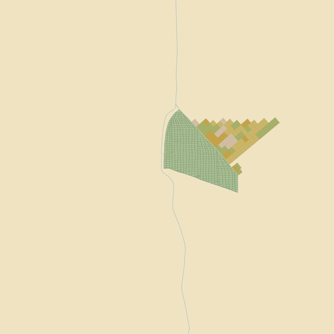
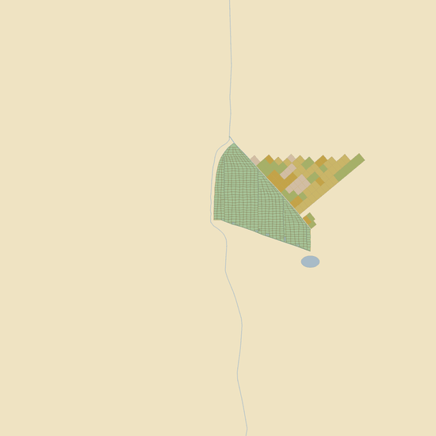
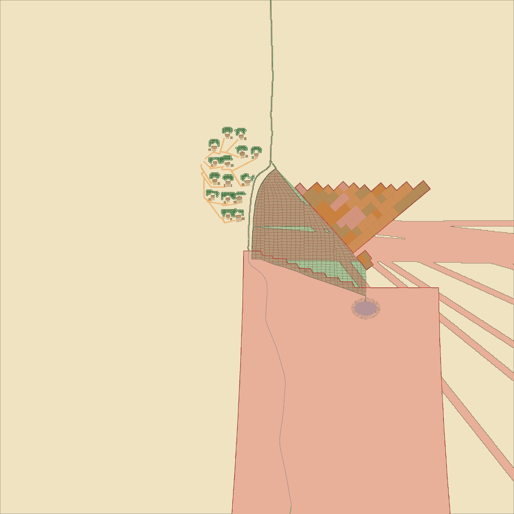
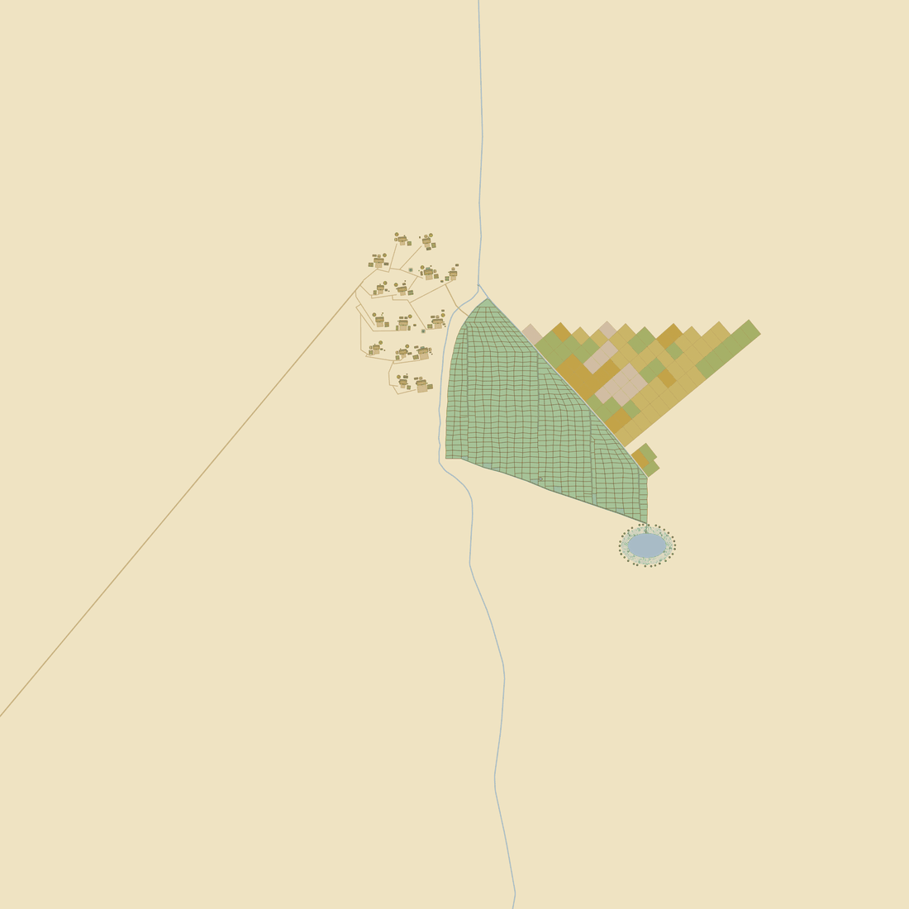
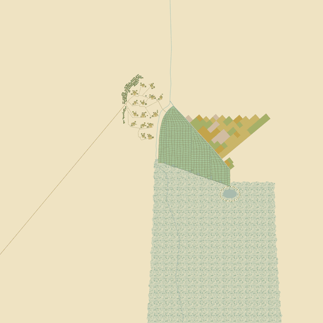
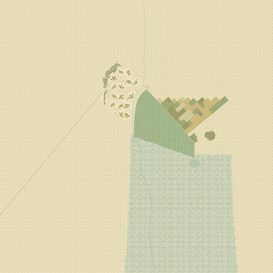
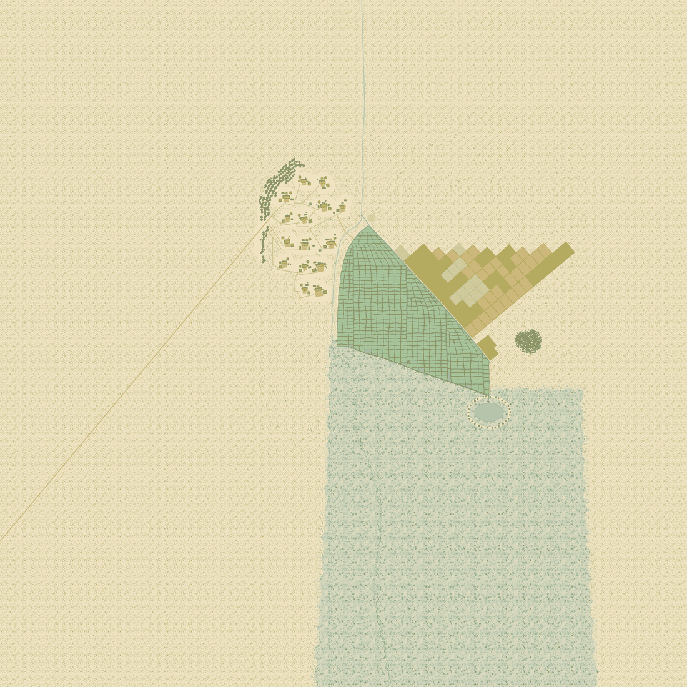
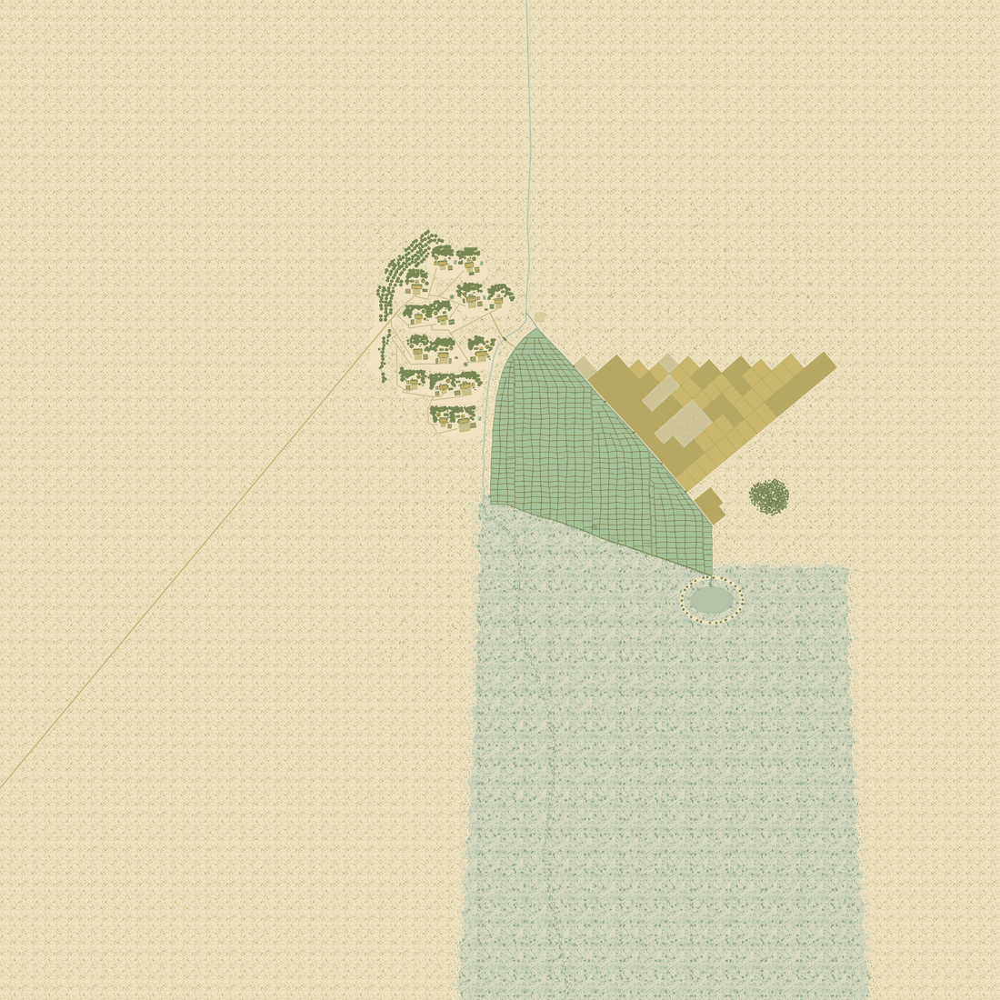
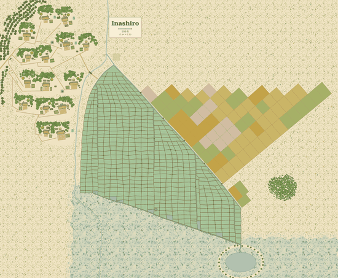

Hamlet placement order
FROZEN 2026-11-07 (feature 444 amendment 11). This page was generated on 2026-10-31 from main's Python hamlet engine, which has since been deleted; it is kept, unregenerated, as the temporary reference the Rust port is judged against, until a page generated from the Rust driver replaces it. Its "regenerated by make placement-stages" note below is history: the code it reads is in git history only.
Inashiro, rolled one stage at a time. Each plate is the map as it stands after that stage and nothing later - the one build the driver makes (nothing is re-rolled), snapshotted 23 times. Every word on this page is read from the code: a stage's explanation is its docstring, and the steps under it are the functions the docstring names as its algorithm, each shown in its own words, with its OWN plate wherever that step put something on the map - so a stage is not one picture of fifteen decisions. A step with no plate drew nothing: it measured, scanned or decided. The page is as current as the code, and the gate fails a stage that explains nothing. Read dev/placement.md for the rules across stages. Regenerated by make placement-stages, and by every landing that changes the engine.
This is first because the skill says it is first, at every tier: "before a single feature is placed, decide the map's drainage bearing and, separately, the land's fall". Everything downstream reads them - which end of the fan is the head, which margin the cluster can stand on, which way the drain runs, where the marsh is allowed to be. They were settled by `plan_site`, which `generate` runs before the first stage; this stage writes them to the manifest and pins the knobs the plan resolved.
- fall and drainage declared first - How our maps draw which way water flows, and how channels bend and join (the bearing and the fall recorded before anything is placed) IN-STEP
- no work yards where no grain grows - How our maps draw threshing and drying yards (niwa) (every rice and dry-field farm keeps a yard; `work_yards` false only on a dike-pond hamlet whose leftover parcels are ponds (`grows_grain`; the GM's no-rice ruling, 2026-08-28)) IN-STEP
- field footbridges on every hamlet - How our maps draw plank bridges over farm ditches (itabashi) (`field_footbridges` true, a crossing where a bund path meets a ditch) IN-STEP
- house racks - How our maps draw rice-drying racks (hasa, hasagi) (a rack by every house where the harvest weather is changeable) IN-STEP
- compact bundle for the clustered form only - How our maps choose and draw clustered and scattered villages (shūson, sanson) (a non-nucleated farm takes its own grove) IN-STEP
- manifest record - no physical decision (the rolled plan written to the manifest) IN-STEP
The algorithm, step by step (1)
Pin a knob to an explicit value, bypassing the roll. The pin is still validated against the knob's value_space + typing_rule when `resolve` is called (an invalid pin is a loud error).
- drawing engine plumbing - no physical decision IN-STEP
Second, because the water is first and the field is grown AROUND the water (the water-first inversion the `waterfields/` package exists for). The head sluice comes from `head_sluice`, which puts the intake at the field's high head - gravity, not a knob. A POLDER hands the whole stage to `stage_polder`. The stretches of a ditch that run outside the crop are reserved as 30 px no-build corridors once the field is drawn.
- comb grown round the water - How our maps lay out irrigation canals (yosuiro) (the fan fitted to its head race, fed at the high head) IN-STEP
- brook fed past the intake - How our maps draw the intake and its weir (toshuko and seki) (the brook drawn from off the map to the tap and on past the fan) IN-STEP
- ditch corridors - a guess - searched for, and the record is silent (searched, the record silent (feature 417 T36 pass P2a, 2026-10-25); every ditch stretch outside the crop a 30 px no-build corridor) IN-STEP
Features this stage puts on the map barley, buckwheat, bund, bund beans, drainage ditch, field pond, irrigation ditch, millet, paddy, soy, stream, weir, wet paddy
The algorithm, step by step (9)
WHERE THE WATER REACHES THE FIELD - the intake, at the field's HIGH head.
Gravity settles this: a comb is fed from its high end, so the sluice sits at the upslope end of the ground the field will occupy, and the only real freedom is WHICH point of that head margin - a brook coming down the left shoulder, the right, or straight into the middle.
This is deliberately NOT the old knob engine's water-source anchor (retired with it, feature 388). That helper resolved the knob catalog's `edge_N`/`edge_W`-style positions against a canvas-relative box, so a lateral entry (`edge_W` on a south-falling map) lands at the box's MID-height: legal by the gravity test, but it leaves the fan only half the canvas to run down, and the field then saturates far under the acreage the household count needs. That was the first real bug in this experiment and it is the kind a map-by-map author never meets, because they pick the number that makes the picture work. Anchoring on the fall axis instead makes the intake a consequence of the slope, which is what it is in the world.
- intake at the field's high head - How our maps draw the intake and its weir (toshuko and seki) (the sluice on the fall axis upslope of the field) IN-STEP
- head set-back - a guess - searched for, and the record is silent (no source could speak to it, a value of ours (feature 417 T36 pass P2a, 2026-10-25); 0.36 of the field span upslope of the canvas center) IN-STEP
- intake offset - How our maps draw the intake and its weir (toshuko and seki) (the intake left, center or right at 1:2:1; rolled from HEAD_OFFSETS) IN-STEP
Resolve the `plot_size` + `plot_regularity` knobs into `carve_comb`'s `(plot_across, row_step)` levers so they actually change the paddy grain. `plot_across` sets how many bunded plots tile across each canal reach (small = many small paddies, large_block = few big ones, strip = narrow but long); `row_step` is the along-canal row spacing, and its SPREAD is the regularity: a WIDE spread reads organic/old-grown, a TIGHT spread reads as a planned/surveyed grid. Records the two knobs on the manifest. Grounding: old wet-rice terraces grew as small irregular paddies fitted to the microtopography; large regular blocks or long strips signal a later planned reclamation/allotment (which is why `grid` is typing-gated to a planned field origin). Returns `(plot_across, row_step)` to pass straight into `carve_comb`.
SIZED IN REAL FEET at ftpx >= 2 (GM 2026-07-22): for a village or provincial city each `plot_size` picks a real-feet CELL-AREA target (acres) and an aspect, and `waterfields.paddy_grain` converts that to px at THIS map's `ftpx` - so the paddy grain is the same real size at every scale (see waterfields.PADDY_CELL_ACRES / research/questions/0017-how-much-farmland-a-settlement-works-and-in-what-tracts.html). The targets bracket the calibrated norm: `small_irregular` below it, `medium` at it, `large_block` above, `strip` at the norm's area but long-and-narrow (aspect > 1). The ft/px=1 HAMLETS (the only maps that reach this at that scale, via the scripted hamlet's `stage_field`) stay on the LEGACY px grain: they already render in-band (~0.02-0.06 acre) and the GM asked to leave them untouched, so recalibrating them would only reshuffle vetted maps for no gain.
- paddy plot size and regularity - How our maps choose and draw clustered and scattered villages (shūson, sanson), How our maps size a settlement's farmland, How our maps draw rice paddies and their plots (suiden), How our maps lay out irrigation canals (yosuiro) (0.72 / 1.0 / 1.35 of the plot norm or a strip, a grid only narrowing the row spread; no jori grid is drawn) IN-STEP
- its figures against 0005's village basin - How our maps draw rice paddies and their plots (suiden) (0.66 (basin aspect at ftpx >= 2, where the village basin is about 47 ft square); 0.72 (large_block aspect at ftpx >= 2) - a departure the code keeps until feature 417 T34) DRIFTED
- its strip shapes - a guess - searched for, and the record is silent (searched, the record silent (feature 417 T38, 2026-10-25) - 1.9 (strip aspect); 32 (hamlet strip); 46 (hamlet strip); 66 (hamlet strip)) IN-STEP
- its figures against 0005 - How our maps draw rice paddies and their plots (suiden) (34 (small_irregular basin, under the page's 40 to 60 ft); 20 (small_irregular basin); 40 (small_irregular basin); 70 (large_block basin, past 60 ft); 30 (large_block basin); 44 (large_block basin) - a departure the code keeps until feature 417 T34) DRIFTED
- its figures from 0005 - How our maps draw rice paddies and their plots (suiden) (48 (medium basin); 26 (medium basin); 36 (medium basin)) IN-STEP
- its row spacing - a guess - searched for, and the record is silent (searched, the record silent (feature 417 T38, 2026-10-25) - 3 (a planned grid's row spacing held to mean +-3 ft)) IN-STEP
SOLVE the comb for the acreage the household count demands, instead of guessing a fall length.
`carve_comb` takes a `field_fall` in PIXELS, and the relationship between that number and the acreage that comes out is not analytic - the carve drops sectors too narrow to plant, the fan's width follows the canal lengths, and the envelope's shape depends on where the threads clamp. An author picks a number, looks at the render, and adjusts; Ikegami's 1150 is such a number, and it lands 24% under the acreage its own docstring asks for.
A script does not have to guess. `carve_comb` is pure and deterministic, so this searches a single SIZE multiplier - applied to the fall length AND both canal lengths together, so the fan scales without changing shape - across the fan's aspects, until the planted area is within `tolerance` of the target. Returns the best net found that is legal and lands the acreage band (`fan_admissible`); where the widened search finds none, the site is refused (`FieldRefused`, feature 287) - never the closest miss.
THE SEARCH LAYS SKELETONS; ONLY THE WINNER IS FINISHED (feature 220, GM 2026-09-09; feature 302). Each guess is a `carve_comb`: the skeleton and the PLANTED REGION - the ground the finish will tile with plots - and no plot at all. The acreage each guess is scored on is the region's own area, because the finish tiles exactly that ground (`partition.cut`), less the scraps it leaves bare (at most 0.36% of a pool fan, specs/302 research R2). Before feature 302 each guess carved its plots and PREDICTED what a repair pass would add to them (11-21%, specs/220 research R2), by shape unions; a trial now costs the skeleton and three shape operations. The best carve is kept and `finish_comb` runs once on it.
The multiplier is bracketed rather than solved because acreage is monotone in it but stepwise: a small change can add or drop a whole plot row, so the curve has small flats. Each round predicts the multiplier from the carves so far (a power law) within a narrowing bracket; the search stops at the first legal fan within `tolerance` (6%), or once the bracket is narrower than one plot row (0.03). The cost is the carves (specs/220 research R2 has the measured figure).
- fan acreage - How our maps size a settlement's farmland (the fan solved to the households' acreage, refused outside FIELD_ACRE_BAND) IN-STEP
- size and aspect search - no physical decision IN-STEP
- its search steps and tolerances - a guess - searched for, and the record is silent (no source could speak to it, a value of ours (feature 417 T38 pass N1, 2026-10-25) - 0.06 (the fit's own stopping tolerance, inside the band page the record sets); 9 (number of fitting rounds)) IN-STEP
The DRAWN paddy acreage of a comb net - the sum of the plot polygons actually carved.
Deliberately measured from the plots and not from the comb net's own `acres` (which assumes the village grain of 1 px = 2 ft and so over-reports 4x on a 1 ft/px hamlet) and not from the field envelope (which bows outside the plots and would count the bunds, the canals and the gaps as rice). The plots are what a farmer plants, so the plots are what gets counted.
- geometry - no physical decision (polygon measures and predicates) IN-STEP
The brook: down off the high ground to the intake, and ON PAST the fan to leave the map.
Until feature 230 it ended AT the sluice and "became" the head race there - a handover with no feature at an arbitrary point, which is what the GM asked about. The record answers that a brook is tapped at an intake on one bank and keeps its own course below it, so the course has two halves: the approach, searched here as it always was, and `brook_skirt`'s passage down one flank.
THE APPROACH is steered clear of the rice: a fan's head can carry a lobe out to one side and a brook coming straight down the fall line then clips it - and a stream does not run through a flooded paddy. Bearings are tried outward from straight-upslope, so the brook stays as close to the fall line as the field allows. The last 40 px into the intake is legitimately against the crop and is not tested.
EVERY RULE OF THE BROOK IS DECIDED HERE (feature 287): each candidate - a bearing, and the skirt as laid or, where that crosses a ditch mid-run, laid round the ditches' outside stretches - is repaired (`settle_course`) and taken only where `brook_violations` finds nothing on the course as drawn. THE LAST CANDIDATES go round the field (`around_the_field`): from straight up the fall and then from every other bearing, the shortest course that keeps half a skirt clear of the rice - repaired and judged like any other; past them the site is refused (`BrookRefused`). The other flank is NOT a candidate, though the design proposed it: the head race and the fan's trim were carved for the rolled flank before the brook is laid (`plan.head_deg`, `fit.py`), so a brook on the other side would run where the race leaves.
- brook course - How our maps draw the intake and its weir (toshuko and seki) (from an off-map source upslope, tapped at the fan's head on one bank, on down that flank and off the map) IN-STEP
- one flank - How our maps draw the intake and its weir (toshuko and seki) (the rolled flank `plan.brook_side` only, the other never a candidate) IN-STEP
- approach bearing - a guess - searched for, and the record is silent (no source could speak to it, a value of ours (feature 417 T36 pass P2a, 2026-10-25); bearings tried outward from straight upslope in 10 deg steps to 70 either side) IN-STEP
- round the ditches - How our maps draw which way water flows, and how channels bend and join (a skirt crossing a ditch mid-run is laid again round the ditches' outside stretches) IN-STEP
- its search steps and tolerances - a guess - searched for, and the record is silent (no source could speak to it, a value of ours (feature 417 T38 pass N1, 2026-10-25) - 420 (shortest distance to the approach's start point, which is always off the canvas); 8 (the same, upper end); 7 (the same bearing search, round-the-field pass)) IN-STEP
Draw a comb net (dry hem + flooded paddies + bunds + channels) AND register the field's manifest + water topology, in one call - the ~50 lines every comb gen otherwise repeats inline. Feeds the roll-from-seed entrypoint (which cannot hand-place any of it) but is reusable by any comb gen. `source` describes where the water comes from: {"kind":"pond", "pond":(cx,cy,rx,ry)} draws a tameike at the sluice and feeds from it; {"kind":"stream", "stream":[(x,y),...]} runs a brook in from a canvas edge to the sluice, and with `to` on past it and off the map (the scripted hamlet's case). Records the field envelope/bbox/vis_bbox, every channel as a field_ditch, and a hairline SOURCE->field feed channel, so the manifest's water topology names the field's source. Returns the field envelope polygon. `inwall_drain_moat_bias` marks an IN-WALL city fan: the drain is trimmed through inwall_drain_outfall (cut off short of the ring road, sluice-gated, underground conduit to the moat) before anything is drawn or recorded.
- plumbing - no physical decision (geometry, indexing, tolerances and manifest records) IN-STEP
Draws barley, buckwheat, bund, bund beans, drainage ditch, field pond, irrigation ditch, millet, paddy, soy, wet paddy
the map after this step, and nothing later in the stage
The head race OPENS OUT OF THE BROOK'S BANK (269 B22; research/questions/0059-where-the-ditch-leaves-the-brook-the-intake-and-its-weir-toshuko-and-seki.drawing.html).
The attested bare intake is an opening: "water can easily be taken just by providing an entrance for it", a damless intake "opening a mouth at the concave side". So the ditch begins at the bank's edge, and nothing of it is drawn on the stream. It was: `field_channel` trims a channel's end to just inside the bank and the race's bed is in the late water block, painted after the brook, so its round cap printed a blob of ditch-colored water across the brook at every intake - a channel laid on top of the stream rather than one leaving it. Trimming harder cannot cure it: the race leaves at `OFFTAKE_DEG`, so any square or round end cuts the bank on a slant and leaves a notch of bare ground on one side or a tongue in the water on the other. The mouth is cut BY THE BANK instead: the race's first stroke is carried back to the tap on the brook's centerline, and the brook's bed is moved to paint after it, so the brook's own edge is where the ditch begins. No gate and no boards are drawn: none is recorded at a village intake, and at a two-foot opening either would be smaller than the map can show.
Beds share one opacity group (`_water`), so the brook painting over the race is a join, not a darker seam. A brook with a pond `clip` is not moved (its bed is re-emitted at flush from the early list); a hamlet's brook has none. The race's first `RACE_TAPER_FT` taper from the brook's hue to the supply hue (feature 355, `race_taper`): drawn in the supply hue from the bank, the dug race read as the principal watercourse at close zoom (measured on Sawada 2026-10-11).
- bare intake mouth - How our maps draw the intake and its weir (toshuko and seki) (the race opens out of the brook's bank, no gate or boards drawn) IN-STEP
- race mouth hue taper - a map drawing convention (the race's first 30 ft drawn from the brook's hue to the supply hue, so the dug ditch does not read as the river) IN-STEP
- its search steps and tolerances - a guess - searched for, and the record is silent (no source could speak to it, a value of ours (feature 417 T38 pass N1, 2026-10-25) - 8 (match distance: a race starting this near the bank is the one at the tap)) IN-STEP
- its salts, guards and sentinels - no physical decision (they decide nothing about the place - 0.05 (tiny tolerance: race not already at the tap)) IN-STEP
- its fallback brook width - How our maps draw the intake and its weir (toshuko and seki) (7 (fallback brook width, the page's 7 ft brook)) IN-STEP
- its figures against 0068 - How our maps draw channel widths (2.5 (fallback width for the color fade at the race mouth, the delivery ditch's where the matched race is the 6.0 ft head race) - a departure the code keeps until feature 417 T34) DRIFTED
What stands where the head race leaves the brook - a WEIR, or nothing at all.
The record attests both and gives no proportion, so `plan.intake` is rolled per map (research/questions/0059-where-the-ditch-leaves-the-brook-the-intake-and-its-weir-toshuko-and-seki.drawing.html). On an `open` hamlet the point is marked by the junction itself: the brook runs straight on and the race opens out of its bank at an acute angle (`open_race_mouth`), which is a fork a reader can see - no gate or boards, none being recorded at a village intake (research/questions/0059-where-the-ditch-leaves-the-brook-the-intake-and-its-weir-toshuko-and-seki.drawing.html). On a `weir` hamlet a bar crosses the brook, set OBLIQUE - the old weirs ran diagonally upstream from the intake mouth, damming the shallow riffle and standing clear of the flood's fastest water - built in one of four forms rolled per hamlet (`WEIR_FORM`).
One disclosed liberty, in the entry: the bar is drawn as a FULL closure of the brook, a map drawing convention, because a half-river closure - the common old form - is a pixel or two at a 7 ft brook. Each form's thickness is `WEIR_THICK_FT`'s, with its class beside it.
- weir or bare mouth - How our maps draw the intake and its weir (toshuko and seki) (`plan.intake` rolled per map, nothing drawn on an open hamlet) IN-STEP
- weir form rolled among four (s.resolve("weir_form")), 0059's four forms at even odds - How our maps draw the intake and its weir (toshuko and seki) (the four weir forms on small water, rolled at even odds (the even roll a GUESS)) IN-STEP
- oblique weir - How our maps draw the intake and its weir (toshuko and seki) (the bar slants upstream from the intake bank, its root at the mouth's downstream lip) IN-STEP
- weir skew angle - How our maps draw the intake and its weir (toshuko and seki) (about 30 degrees, the average of the old oblique weirs still standing (river weirs, 5 to 78); WEIR_SKEW_DEG, 30 deg) IN-STEP
- full closure - How our maps draw the intake and its weir (toshuko and seki) (the bar crosses the whole brook, a map drawing convention) IN-STEP
- bar size - How our maps draw the intake and its weir (toshuko and seki) (WEIR_HALF_FT half-length, WEIR_THICK_FT of its form thick) IN-STEP
- seat-search reach - a guess - searched for, and the record is silent (the bar steps down the brook a foot at a time, past dry ground, no further than the leg to the next vertex) IN-STEP
- its figures from 0068 - How our maps draw channel widths (6 (fallback head-race width, 6.0 ft ("head race ... 6.0"))) IN-STEP
- its salts, guards and sentinels - no physical decision (they decide nothing about the place - 0.2 (stops division by a tiny sine)) IN-STEP
- its weir bar - a guess - searched for, and the record is silent (searched, the record silent (feature 417 T38, 2026-10-25) - 1 (the bar's root 1 ft below the race mouth's half-opening, the root at the mouth per 0059)) IN-STEP
Draws stream, weir

the map after this step, and nothing later in the stage
The POLDER field: a surveyed orthogonal grid diked out of standing water on flat ground.
Not a variation on the comb - the opposite of it. A comb is grown around a head-race running down a slope and its shape follows the water; a polder is a planned block whose water enters at a corner, rings the module in a perimeter feeder, and drains to the low corner. `build_polder` returns comb-compatible keys on purpose, so `draw_comb_field` draws either.
The SOURCE is a header reservoir OUTSIDE the dike above the high corner, charged through a sluice in the dike - not a brook running in over the crop, which is what a valley hamlet has.
Steps: l7r.diagram.hamletgen.water.polder.fit_polder l7r.diagram.sitegen.geom.net_acres l7r.diagram.hamletgen.water.polder.walk_pond_uphill l7r.diagram.settlement.Settlement.draw_comb_field l7r.diagram.hamletgen.water.polder.dike_gaps_at_channels l7r.diagram.settlement.Settlement.perimeter_dike l7r.diagram.settlement.Settlement.apply_land_use
- header reservoir - How our maps draw polders (weitian, waju), Irrigation canals and how they are laid out (yosuiro) (outside the dike, uphill at the ring canal's head) IN-STEP
- reservoir size - a guess - searched for, and the record is silent (searched, the record silent (feature 417 T36 pass P2a, 2026-10-25); an ellipse of semi-axes 82 by 54 px (164 by 108 px across), fixed in px whatever the acreage or the scale; 0061 sizes a reservoir pond by the paddy it waters only for a field on high ground whose pond is its only water, and no page sizes a polder's source, the wild water its inlet sluice draws from (searched 0061, 0017, 0019, 0020)) IN-STEP
- dike-pond conversion - How our maps lay cash crops over a village's rice land (a village drawn as dike-ponds throughout is rolled between every parcel a pond (leftover pond, 1.0) and about one parcel in ten left in standing rice (leftover rice, DIKEPOND_CONVERSION 0.9), the one in ten a calibrated liberty between none and Jiujiang's two tenths) IN-STEP
- pond layout - How our maps draw polders (weitian, waju) (a dike-pond block is drawn as a mosaic, its lattice bent by POND_LAYOUT_MOSAIC 0.5 (a calibrated liberty set on the Kuwabata map), and a rice polder keeps the surveyed grid (0.0); a dike-pond hamlet that rolls the chessboard of ponds (POND_LAYOUTS) is drawn at the grid end (0.0) too) IN-STEP
- polder fabric - How our maps draw parcels and bunds inside a polder (aze) (POLDER_FABRIC by archetype, a rice polder's 190 ft modules mostly split into two or three strips and a few merged along the fall, with a 3 ft walking bund and 8 ft ditch corridor (gap 1.5/4.0 a side), and a dike-pond's 160 ft modules mostly merged in pairs with about 22 ft gaps both ways (11/11)) IN-STEP
- perimeter dike gapped at crossings - How our maps draw a polder's dike and its trees (cut wherever a channel or recorded course crosses it) IN-STEP
- dike uncaptioned - a map drawing convention (the scripted tier draws the perimeter dike without a label) IN-STEP
- ditch corridors - a guess - searched for, and the record is silent (searched, the record silent (feature 417 T36 pass P2a, 2026-10-25); every ditch segment not wholly in the crop a 30 px no-build corridor) IN-STEP
- its salts, guards and sentinels - no physical decision (they decide nothing about the place - 109 (seed mask (0x6D))) IN-STEP
- its reservoir seat - a guess - searched for, and the record is silent (searched, the record silent (feature 417 T38, 2026-10-25) - 30 (first seat 30 px uphill beyond the semi-axis from the ring's head)) IN-STEP
The tail drain and its pond or off-map outfall. It runs with the water rather than with the ground cover because the pond is a HARD feature - houses, lanes and trees all have to avoid it, so it must exist before any of them are seated.
The tameike the field drains into - DERIVED from the drain, never placed by hand.
A reservoir below the fields is sited by one fact: it must sit clear of the paddies and low enough that the drain reaches it downhill. So it stands at the nearest seat DOWNSLOPE of the drain's own outfall - the set-back SOLVED (`pond_setback`), the pond stepped across the fall where it must be (`pond_seat`) - where its rim clears the crop and the brook, and the drainage ditch is drawn from the outfall to the pond (`pond_run`) so the two are visibly joined. Both scale with the map: a bigger hamlet drains more water into a bigger pond. Where no seat fits - past `POND_SETBACK_LIMIT`, or a run that would cross a dike, the brook or forbidden ground - the field drains off the frame instead.
`water_sink="offmap"` drains the collector off the frame instead of into a pond - first into the passing brook at a confluence where one is in reach (`brook_join`, the researched sink), else a drainage ditch run off the frame (`drain_run`), which is what most valleys do and what the GM's brief allows. Every route it may take is judged by `route_refusals`, and where no searched route passes, `hull_route` constructs one that does (feature 287, water:W10-W12).
THE WATER IS FINISHED HERE (feature 287, M2): the brook is rounded to the course the map draws as this stage's last step, so the seat, the houses, the fords' tests and the decks all read one course.
- where the runoff goes - How our maps draw field drains (akusuiro) (a pond at the foot, the passing brook, or off the map) IN-STEP
- tameike below the fields - a guess - searched for, and the record is silent (a drain ending in a pond of its own, a guess on research/questions/0060-field-drains-akusuiro.drawing.html) IN-STEP
- sink before the houses - no physical decision (stage order, the pond a hard feature) IN-STEP
- brook rounded - How our maps draw which way water flows, and how channels bend and join (bends on a radius) IN-STEP
Features this stage puts on the map drainage ditch, marsh, pond
The algorithm, step by step (14)
The last vertex of the field's drain collector, READ BACK from the manifest.
Read back rather than remembered, because the manifest is what every later reader reads: the pond is sited from the same record the ditch to it is drawn from - "placement and its test read the SAME source", one level down.
- drain plumbing - no physical decision (reading the collector back, records, admissions, spans and the refusal type) IN-STEP
The direction the drain collector is running where it ends - so its continuation leaves it as a smooth junction rather than a hard corner.
MEASURED OVER THE GATE'S 40 px SPAN, NOT OVER THE FINAL VERTEX PAIR, and that distinction is the whole defect this function used to carry. A comb's collector ends in a short hook - its last segment can be a couple of px long and point anywhere - so "the direction it is running where it ends" read off `poly[-2] -> poly[-1]` is noise, while the 40 px span (`GATE_FLOW_SPAN`, the span the retired `drainage_junction_smooth` check read) gets the collector's real bearing. On cohort seed 2 the two disagreed by 76.1 deg (last-pair 347.1, span 63.3): the placer therefore believed that continuing straight along the collector was a PERFECT junction (turn 0.0) when the gate scored that same route a 76.1 deg kink, and it believed the genuinely smooth route (2.2 deg by the gate) was a 73.9 deg corner and refused it. One corner, two verdicts, split by the definition - the same "placement and its check must read the SAME manifest source" rule `drain_outfall` above obeys, one level down.
- drain plumbing - no physical decision (reading the collector back, records, admissions, spans and the refusal type) IN-STEP
How far DOWNSLOPE of the drain outfall the pond must stand to clear the crop entirely.
Walks outward in small steps and returns the first distance at which no rim point of the ellipse falls inside the field envelope, no envelope vertex falls inside the ellipse (`pond_clear_of_crop`'s two tests), and the pond's ellipse grown by 12 px clears the brook. A 12 px cushion past the first clear position keeps it off the line.
- pond downslope of the outfall - How our maps draw field drains (akusuiro) (the nearest seat at the field's foot) IN-STEP
- set-back margins - a guess - searched for, and the record is silent (no source could speak to it, a value of ours (feature 417 T36 pass P2a, 2026-10-25); at least the rim plus 46 ft, a 12 ft cushion, 12 ft off the brook) IN-STEP
- its search steps and tolerances - a guess - searched for, and the record is silent (no source could speak to it, a value of ours (feature 417 T38 pass N5, 2026-10-25) - 14 (step of the walk downslope); 900 (walk's ceiling; the real limit, `POND_SETBACK_LIMIT` 300, is SEARCHED-SILENT (T36 pass P2a)); 24 (rim sample count)) IN-STEP
The pond clear of the crop, on the field's envelope: no rim point inside the crop, no crop vertex inside the pond (the two tests `pond_setback` walks with).
- tameike clear of the paddy - How our maps draw field drains (akusuiro) (the pond at the field's foot) IN-STEP
- its salts, guards and sentinels - no physical decision (they decide nothing about the place - 12 (pi/12 rim step)) IN-STEP
- its search steps and tolerances - a guess - searched for, and the record is silent (no source could speak to it, a value of ours (feature 417 T38 pass N5, 2026-10-25) - 24 (rim sample count)) IN-STEP
(how far downslope, how far across the fall) the reservoir must stand to clear the crop AND the brook - the set-back search with one more degree of freedom.
The walk downslope alone was enough while the brook stopped at the intake. Since feature 230 it runs on down one flank of the fan, and on a map whose flank is the drain's own side the two want the same ground: Mizuguchi's tameike - the reservoir the place is named for - was pushed past the canvas and the stage fell back to draining off the frame, losing a feature its spec had declared. Stepping the pond ACROSS the fall is the cheaper move and the truer one: a valley's reservoir sits in whatever pocket the ground offers below the fields, not on a plumb line under the outfall. The sways are tried nearest-first and the straight seat still wins whenever it is clear, so every map whose pond already had room keeps the seat it had.
...AND THE DITCH TO IT NEVER CROSSES THE BROOK (feature 287 wave 5, water:W08): given the collector's `heading` and the `brook` as drawn, a seat whose run (`pond_run`) would cross the open water mid-run is no seat - measured at HEAD on six of cohort 1-60 and the pool (Mizuguchi among them), where the ditch was drawn straight over the brook.
- pond in a pocket below the fields - How our maps draw field drains (akusuiro) (the pond at the field's foot) IN-STEP
- sways across the fall - a guess - searched for, and the record is silent (no source could speak to it, a value of ours (feature 417 T36 pass P2a, 2026-10-25); 0.9 and 1.8 long radii) IN-STEP
- set-back limit - a guess - searched for, and the record is silent (searched, the record silent (feature 417 T36 pass P2a, 2026-10-25); POND_SETBACK_LIMIT) IN-STEP
- ditch runs downhill, not over the brook - How our maps draw field drains (akusuiro), How our maps draw which way water flows, and how channels bend and join IN-STEP
The drainage ditch from the collector's outfall to the pond's center.
ON THE LINE WHEN THE POND IS AHEAD, bowed slightly off it so it reads as dug earth rather than a ruled connector (`channel_winds_gently`), the bow proportional because a fixed 10 px bow on a short run is an acute hairpin (`water_channels_obtuse_turns`).
LED ROUND WHEN IT IS NOT (settlement-review, feature 230 pass 10). Since the brook runs on down one flank, `pond_seat` may step the pond across the fall to a pocket beside the outfall rather than ahead of it - which is right - and a straight run to it then doubles back on the collector: Mizuguchi's turned 111.6 degrees at the field's tip, an inverted V. So where the pond lies more than 100 degrees off the collector's own heading the run leaves ALONG that heading and curves round to the pond, spreading the same turn over a dozen gentle bends.
- bowed ditch - a map drawing convention (up to 10 ft off the chord, so it reads as dug earth) IN-STEP
- led round a pond behind - a map drawing convention (a cubic past 100 degrees off the heading) IN-STEP
- its search steps and tolerances - a guess - searched for, and the record is silent (no source could speak to it, a value of ours (feature 417 T38 pass N5, 2026-10-25) - 0.45 (cubic's handle length, measured to keep bends at or under 36 degrees); 12 (curve sampled at twelfths); 13 (range bound for the same samples)) IN-STEP
- its unstated figures - a guess - searched for, and the record is silent (searched, the record silent (feature 417 T38 pass N5, 2026-10-25) - 0.08 (drain's bow off the chord, 0.08 of the run, at most 10 ft)) IN-STEP
Where the collector meets the brook that passes the field, or None if it does not pass near.
The third sink, and the researched one (feature 230): before modern consolidation a village's drainage went back to the watercourse to be taken up by the district below, so where the brook the field is fed from runs on within reach of the collector's outfall, the drain runs to it and joins it at a confluence. The candidate must lie downslope, be within reach, and be reachable without crossing the crop; without one the runoff leaves the frame as before.
THE NEAREST POINT ON THE BROOK IS THE WRONG CANDIDATE, and taking it is what hid this sink on the two maps that most wanted it. A brook running down the flank passes ABREAST of the outfall, so its closest point is level with it or a few feet above - Sawada's was 80 px away and 4 px uphill - and a test for "downslope" then refuses the join and sends the drain off the frame on its own, two watercourses leaving the map side by side. So the brook is walked at a stride and only the points that have genuinely fallen are considered; the nearest of THOSE is the confluence, a little way down the brook from where it passes. `BROOK_JOIN_DESCENT` is what makes the junction a junction rather than a level meeting.
`keeps` (feature 287 wave 5): whether the brook AS DRAWN with the confluence held still keeps every rule of the brook (`confluence_keeps_the_brook`) - the nearest candidate that does is the confluence, so the brook the map draws round its joins is the brook its placer judged.
- drain joins the passing brook - How our maps draw field drains (akusuiro) (drainage returned to the river) IN-STEP
- join reach - a guess - searched for, and the record is silent (searched, the record silent (feature 417 T36 pass P2a, 2026-10-25); 420 ft from the outfall) IN-STEP
- confluence below the outfall - How our maps draw field drains (akusuiro) (fallen BROOK_JOIN_DESCENT, the run downhill) IN-STEP
- trunk below the junction - a map drawing convention (BROOK_JOIN_TRUNK on the canvas) IN-STEP
- not on a corner of the brook - a map drawing convention IN-STEP
- the nearest fallen point, off the crop - a guess - searched for, and the record is silent (no source could speak to it, a value of ours (feature 417 T36 pass P2a, 2026-10-25); the drain to the brook never crosses the crop, and the nearest fallen candidate is the confluence) IN-STEP
Why the drain's continuation `route` (from the outfall `out`) may not be drawn - empty where it may. One predicate per term (feature 287, water:W10-W12): the junction turn (`JUNCTION_TURN_MAX_DEG`), the rice (an interior vertex in the field, or a leg through it - the first leg exempt where the outfall stands inside the field, as the gate trims it), downhill (`runs_downhill`), the drainage bearing (under 90 degrees off `water_flow`), the brook (`crosses_mid_run`, and `twin_run_ft`: not run beside it, feature 294) and the dike (`breaches_any_dike` over the recorded `dikes`: a drain crosses a dike's crest only at one of its gaps, water W42).
- junction turn - How our maps draw field drains (akusuiro) (at most JUNCTION_TURN_MAX_DEG) IN-STEP
- not through the rice - a guess - searched for, and the record is silent (no source could speak to it, a value of ours (feature 417 T36 pass P2a, 2026-10-25); no interior vertex or leg in the field) IN-STEP
- runs downhill - How our maps draw field drains (akusuiro) (a fifth of the run down the fall) IN-STEP
- with the drainage bearing - How our maps draw which way water flows, and how channels bend and join (under 90 degrees off the water's flow) IN-STEP
- brook not crossed mid-run - Which way water flows, and how channels bend and join (ditches join rather than cross) IN-STEP
- not the brook's twin - Do two ditches run side by side across the fields? Not in the old forms the map draws IN-STEP
- dike crossed only at a gap - How our maps draw polders (weitian, waju) IN-STEP
THE CONSTRUCTED ROUTE (feature 287, water:W12), taken where no searched route passes `route_refusals`: on along the collector's own heading until it leaves the field's convex hull grown by `pad` (a turn of 0 at the junction), round that hull on the side the land falls to (every step of it further down the fall), and from the hull's lowest point straight down the fall off the canvas - lengthened until the whole run is downhill by the channel rule and within 90 degrees of the drainage bearing. The hull is convex, so no step round it and no leg down from its lowest point can enter the field. Where the brook lies across it, the run ends where it meets the brook, a confluence (to "stream"). Returns (the route, what it ends at).
- constructed route - no physical decision (hull geometry under route_refusals' rules) IN-STEP
- hull standoff - a guess - searched for, and the record is silent (no source could speak to it, a value of ours (feature 417 T36 pass P2a, 2026-10-25); the drain skirts the field's hull 12 ft off) IN-STEP
- ends at the brook or off the map - How our maps draw field drains (akusuiro) IN-STEP
- its search steps and tolerances - a guess - searched for, and the record is silent (no source could speak to it, a value of ours (feature 417 T38 pass N5, 2026-10-25) - 260 (off-canvas leg length ("its length is free")); 40 (cap on lengthening tries); 400 (lengthening step off the canvas)) IN-STEP
- its salts, guards and sentinels - no physical decision (they decide nothing about the place - 100000 (ray length sentinel)) IN-STEP
The collector's continuation past its outfall - a DRAINAGE DITCH whichever way the water goes.
Feature 230 (GM 2026-09-12): the run into the tameike was drawn by `field_channel` and the run off the frame by `stream` at 8 px, so the same thing carried two classes and two record kinds on two maps ("the inconsistency you mentioned"). The research settled what it is: before modern field consolidation a village's drainage went field to field, or back into a shared channel, and returned to the river to be taken up below (`research/questions/0060-field-drains-akusuiro.html`) - a dug channel that reaches a watercourse, never a brook of its own. So every sink draws the same stroke: the collector's tail width, the drain's hue, the drainage-ditch class.
WIDTH IS THE DRAIN'S OWN, NOT A LITERAL. This is the collector's last strides, so it carries everything the collector carries - a flat 2.5 px stub at the pond mouth read as a pinch rather than a mouth on the sheet's most visible water feature (`settlement-review`, at true scale). Derived from `DRAIN_FT[1]` so it tracks any change to the ladder.
...but the TOPOLOGY record stays at the hairline. `M["channels"]` is the connectivity graph the anchor checks walk, and its widths are held in a hairline band on purpose (a natural watercourse must out-measure a field ditch by a wide margin). The DRAWN truth lives in `M["drawn_channels"]`, which is where `field_channel` records the widened stroke. Writing the drawn width into the topology record instead fired two checks on 14 cohort maps apiece - measured, not guessed.
NO NO-BUILD CORRIDOR ON A HAMLET (feature 328). This run once registered the 33 ft corridor `s.channel` and `s.stream` register, but that strip is the town and city maps' rule (0058). A nucleated cluster is exempt from the page's below-drain rule; that rule for a dispersed hamlet's farmsteads is not yet asked (feature 328 row 669, E3).
- a drain is a dug ditch - Field drains (akusuiro), How our maps draw field drains (akusuiro) (the drainage-ditch class whichever way it runs) IN-STEP
- drain width - How our maps draw field drains (akusuiro) (the collector's own outfall width) IN-STEP
- no no-build corridor on a hamlet - How our maps keep buildings off wet ground (the 33 ft strip is the town and city maps' rule; on a hamlet the drain's rule is the marsh and the wet ground below it) IN-STEP
Draws drainage ditch
the map after this step, and nothing later in the stage
A pond / irrigation reservoir. Routed through the WATER block (not drawn inline) so a stream or channel MEETING it JOINS at the rim instead of the rim cutting across its mouth: the RIM is an EDGE below every water bed (a feeder's bed covers it at the junction -> a clean gap), the FILL joins the shared bed group as the TOPMOST bed (`pond_fill=True`) - so it paints OVER any feeder's inside-the-rim overshoot (an irrigation channel's round end-cap bulging past the rim, whichever order it was drawn), while the shore rim still shows and the mouths stay clean; the inner highlight is a sheen.
ASKED BEFORE ANYTHING IS DRAWN (feature 287, water W53): its placer has walked its alternatives (the sink's pond falls back to an off-map run, `hamletgen/sink.py`), so a pond the matrix still forbids is refused by name here.
- pond glyph - a map drawing convention (blue fill, a dark rim and an inner sheen) IN-STEP
- pond feeder width - How our maps draw channel widths (about 3 ft at the map's scale, twice the 1.5 ft floor) IN-STEP
- its drawn sizes - a map drawing convention (sizes on the sheet, not in the world - 12 (inner sheen inset)) IN-STEP
Draws pond

the map after this step, and nothing later in the stage
The reedy MARGIN of a pond, as the polygon `marsh(role="pond_fringe")` scatters (feature 151).
One helper because there are two call sites and they diverged: the sink's tameike keeps 44 px of fringe, a comb source pond 40, and each built the ring by hand. The margins still differ - a tameike is dug and its shallows are wider - but the difference is an ARGUMENT now rather than two literals a reader has to notice.
TWO ORDERING RULES BOTH CALLERS OWE, both learned by getting them wrong on 2026-08-29:
1. Scatter the fringe only AFTER the water it must keep off is recorded. `draw_comb_field` drew it before the field's channels existed, so the reed keep-out had nothing to keep off and three blades were drawn across the inlet hairline. 2. (Retired by feature 298.) The pond's own no-build rect (`block_polys`) once had to follow the fringe, because the reed scatter read it and, appended first, it cost 45% of the annulus. The reeds are a tile now, and the marsh cuts the pond's own ellipse (`pond_cut`) rather than its box, so the order no longer thins them.
- pond reed fringe - How our maps draw reservoir ponds (tameike), their reeds and their embankments (reeds round the shore at the caller's margin) IN-STEP
- its search steps and tolerances - a guess - searched for, and the record is silent (no source could speak to it, a value of ours (feature 417 T38 pass N11, 2026-10-25) - 16 (ring vertex count)) IN-STEP
REED MARSH / WET MEADOW - wet reed ground drawn as a TILE (feature 298): a wet tint, standing-water glints and reeds, filling the outline - its strips' corners rounded and edges waved (`natural_outline`, feature 299) - less the paddies, the pond's ellipse (`pond_cut`), the mounds, the banks and the water, at the bottom of the stack; a fringe tile where it meets the scrub. A generous region therefore ABUTS the field's low edge (the polder embankment) or the pond's shore and only fills the wet ground beyond. `role`: 'toe' (default) = the LOW, undrained valley toe below the managed paddy, where wet-rice cultivation stops (wet rice is reclaimed FROM marsh - polders diked out into marsh/lake; where reclamation stops it stays reed wetland); 'pond_fringe' = the reedy shallow MARGIN of a pond (a water-edge fringe); 'defense' = an ENGINEERED defensive wet belt maintained outside a fortified perimeter (Song Hebei frontier marsh belt, numajiro "marsh castles", the flooded-paddy glacis) - it hugs the wall/moat wherever the circuit runs (an approach road through the belt is a CAUSEWAY - the corridor skip keeps its tread bare - and few, constricted approaches are the belt's military purpose); 'waterside' = the un-reclaimed wet WILD outside a polder's perimeter dike on its WATERWARD flanks (the fluctuating lake/creek/marsh the dike holds back - a polder floor sits BELOW the outside water level, so the wet fringe surrounds it regardless of the fall direction; placed by `stage_waterward` from `meta.waterward`). WHY: research/questions/0058-ground-too-wet-to-build-on.html + 'Defensive marshland - the engineered wet belt' + research/questions/0019-polders-fields-diked-against-the-fluctuating-water-weitian-waju.html. Recorded M['marshes'].
- marsh roles - How our maps draw marshes and wetlands (shitchi) (the toe and a defensive belt) IN-STEP
- pond fringe role - How our maps draw reservoir ponds (tameike), their reeds and their embankments (reeds round a pond's shore) IN-STEP
- polder waterside role - How our maps draw polders (weitian, waju) (a reed fringe along the polder's water side) IN-STEP
- bare treads - How our maps draw marshes and wetlands (shitchi) (every trodden way kept bare through the reeds in every role (the record gives the defensive belt's causeway)) IN-STEP
- tread keep-out width - a guess - searched for, and the record is silent (no source could speak to it, a value of ours (feature 417 T36 pass P7, 2026-10-25); 3 bs either side of every way) IN-STEP
- reeds off the dooryards - a guess - searched for, and the record is silent (no source could speak to it, a value of ours (feature 417 T36 pass P7, 2026-10-25); no reed inside the urban-clearance halo round dooryards) IN-STEP
- edge shaped - How our maps draw the marsh's edge (rounded and waved, a pond fringe left as laid) IN-STEP
- reeds to the water and the paddy - How our maps draw the marsh's edge (reeds stand at the water's edge and meet the paddy) IN-STEP
- marsh edge form - How our maps draw the marsh's edge (every edge cut and open; the uncut edge's alder and willow carr is never rolled) DRIFTED
- reeds off the mounds - How our maps draw reservoir ponds (tameike), their reeds and their embankments (no reed or tint on a dike crest or a pond bank) NEEDS-RESEARCH
- no-build marsh - How our maps keep buildings off wet ground (every marsh but a pond fringe is no-build ground) IN-STEP
- reed tile - a map drawing convention (the drawn ground filled with the reed tile) IN-STEP
- its salts, guards and sentinels - no physical decision (they decide nothing about the place - 40 (prefilter reach for crests near the box); 5 (keep-out grid slot id); 6 (keep-out grid slot id)) IN-STEP
- its figures against 0074 - How our maps draw the marsh's edge (1.5 (bare rim the reeds keep off the pond, where the page draws reeds to the water's edge) - a departure the code keeps until feature 417 T34) DRIFTED
- its crescent pond pad - How our maps draw the marsh's edge (2 (reeds kept 2 ft plus a tuft's reach off a crescent pond, where the page draws reeds to the water's edge) - a departure the code keeps until feature 417 T34) DRIFTED
Every brook drawn at its `finished_course`, THE FINAL WATER BEFORE ANYTHING READS IT (feature 287, M2).
Run as the last step of `stage_sink`, the end of the water stages, so every later bank, seat, corridor, ford and deck test reads the course the map draws. It ran in `stage_crossings` until feature 287, six stages after the brook was laid: the houses were seated against one course and the crossings squared and decked against another, and the test of a ford read a course the fords were never set on. The WAYS STILL ROUTE AGAINST THE COURSE AS FIRST DRAWN (`ways.checks.stream_segs` reads its `stations`; the fords and the crossing band read `plan.brook`), for the reason `Settlement.round_stream` records: rounding the brook before the ways were routed moved every way its corners had shaped. The tap - the first point of every head race taken off a stream - is held. Rounded from the `stations` when they are recorded, so a second pass draws the same course rather than rounding the rounded one.
...AND EVERY CONFLUENCE IS HELD TOO (feature 287, labels L16): a channel that declares a stream at its far end (the drain's `brook_join`, the constructed route's meeting) has that end made a vertex of the course and held (`join_vertices`), so the rounding cannot draw the brook away from the mouth the record says joins it.
- plumbing - no physical decision (stage ordering, the rounding itself is `finished_course`'s) IN-STEP
- its fallback brook width - How our maps draw the intake and its weir (toshuko and seki) (7 (fallback brook width, the page's 7 ft brook)) IN-STEP
The seat band: which stretch of the field margin the cluster will occupy, with its back to the high ground and its face to the water. NOTHING IS DRAWN HERE - this stage decides a place and reserves no ground at all, which is why it can run before the houses without constraining them. It used to be the front half of a stage that also drew the connector and the field spur, and separating the two is what let every lane move after the farmhouses.
Decide WHERE the settlement sits. Draws nothing at all.
THIS IS THE HALF THAT HAS TO RUN FIRST, and separating it is the whole of feature 128. The old `stage_ways` did two unrelated jobs in one pass: it SEATED the cluster - `seat_cluster` sets `plan.seat`, which `stage_homesteads` reads on its first lines - and it DREW the connector and the field spur. Because the seating is a hard dependency of the houses, the stage could not simply be moved after them, and feature 126 worked around that by moving only the skeleton. That is how the connector and spur were left reserving ground before a single house existed.
Split, the dependency and the drawing go to opposite sides of the houses. Nothing here calls `s.lane`: no lane and no corridor exists when this returns. Before the seat is chosen, the brook's fords are opened and the cost every later route pays to cross the brook is set.
- brook crossed only at crossing places - How our maps place a hamlet on its stream (fords opened on straight reaches, the only free cells in the brook's band) IN-STEP
- every way pays the crossing - How our maps place a hamlet on its stream (`BROOK_CROSSING_COST_FT` set on the router for the whole roll) IN-STEP
- seat off the reed fringe - CANON (the GM's ruling of 2026-08-28, the pond's fringe passed as wet; it departs from research/questions/0058-ground-too-wet-to-build-on.drawing.html, which does not count the fringe as marsh) IN-STEP
- the wind is kept - How our maps draw the shelter belt: its sides, its trees, and why it runs off the edge of the map (a seat off the wind is recorded, never the wind renamed) IN-STEP
The algorithm, step by step (5)
Where the brook may be crossed: points every `spacing` along its course where it runs straight for the deck's length either side (the turn between the reaches `FORD_HALF` behind and ahead is under `bend_deg`), so a way crossing there crosses it square and the plank lands on both banks. A bend is skipped, not moved: the next site along is `spacing` further on.
- crossing places along the brook - How our maps place a hamlet on its stream (every `spacing` (160 ft), a GUESS there) IN-STEP
- only on a straight reach - How our maps place a hamlet on its stream (a bend skipped, so the crossing is square) IN-STEP
Record the brook course whose band a route pays `cost` to enter, `radius` either side of it; an empty course clears it.
- crossing the brook is charged - How our maps place a hamlet on its stream (`cost` to enter the band, so a way keeps to its own bank unless crossing saves more) IN-STEP
- its salts, guards and sentinels - no physical decision (they decide nothing about the place - 20 (spatial-index cell floor)) IN-STEP
- its search steps and tolerances - a guess - searched for, and the record is silent (no source could speak to it, a value of ours (feature 417 T38 pass N4, 2026-10-25) - 5 (brook sampling step)) IN-STEP
Every DRY crop plot recorded so far, read back from the manifest.
Read back rather than carried along from the comb builder, because `draw_comb_field` DROPS hem plots that landed on standing water or on another fan's rice - so the net's list and the map's list are not the same list, and the one that matters is what was drawn.
- geometry - no physical decision (polygon measures and predicates) IN-STEP
The reed-marsh TOE: the wet band below the fan's toe, in canvas coordinates.
FACTORED OUT so it can be asked for BEFORE it is drawn (2026-08-12). `hinterland()` lays the marsh late, after the structures, but a WAY has to be routed early - and the GM's rule is that a path does not pass through marshland, so the router has to know where the wet ground will be while it still has a choice. Deriving it in two places is the trap this skill's notes call "placement and its check must read the SAME source", so there is one derivation and both callers use it.
It follows the TOE, not a bbox: wet ground is defined by HEIGHT, so the band is laid across the `down_deg` vector, and since feature 133 T30 its inner edge follows the fan's toe as an arc - at each cross-slope station `pad` above the local lowest paddy point, smoothed over three stations - as wide as the fan plus `pad`. An axis-aligned rectangle is only an honest contour at a 0/90/180/270 fall, and at a diagonal it slices across the slope - which is the bug this shape was given to fix.
- toe band edge - How our maps draw marshes and wetlands (shitchi) (90 ft above the local lowest field, smoothed over three stations) IN-STEP
- toe band width - How our maps draw marshes and wetlands (shitchi) (as wide as the fields plus 90 ft each side) IN-STEP
- flaring flanks - How our maps draw marshes and wetlands (shitchi) (part of the straight-band deviation, the band's ends bow outward downhill as seepage spreads) IN-STEP
- flare size - a guess - searched for, and the record is silent (each side out to 1.5 pad past the shoulder on a t**1.6 profile) IN-STEP
- its drawn sizes - a map drawing convention (sizes on the sheet, not in the world - 120 (bleed past the canvas edge)) IN-STEP
- its search steps and tolerances - a guess - searched for, and the record is silent (no source could speak to it, a value of ours (feature 417 T38 pass N11, 2026-10-25) - 24 (cross-slope station step floor); 0.2 (flank sample station); 0.4 (flank sample station); 0.6 (flank sample station); 0.8 (flank sample station)) IN-STEP
WHERE THE HOUSES GO - the one derivation that decides how the whole map reads.
背山面水, "back to the hill, face the water": a farming settlement stands with its back to the high, cold, windward side and its face to the field and its water. That is not decoration, it is the reason the windbreak grove has a side to be on, and it is what Ikegami's own docstring cites. So the cluster is seated on the field-envelope margin whose OUTWARD NORMAL best points into the wind, scored by the wind (1.0) and by the UPSLOPE end (0.8), with penalties for wet ground, the dry hem, the brook and the belt's room - the wet toe below the fields is not building ground; the drain's own rule is a dispersed farmstead's, not the cluster's (research 0058). A margin whose normal is within 45 degrees of the wind faces it (tier 0); one whose belt would fall off the canvas is not a candidate (`BELT_ROOM_MAX_OFF`): the wind is the regional northwest unless declared, and the seat bends to it.
NO FALLBACK (feature 287, homes H30/H31, plan D3): the off-wind and cramped margins were kept as a last resort, recorded as `seat_offwind`; they are gone. A margin whose normal is 45 to 90 degrees off the wind offers its back turned to the wind instead (`margin_candidates`, tier 1, after every margin that faces it), so a fan falling into the wind seats on a flank above its toe; `plan_site` rolls only falls that leave a wind-facing margin, and the canvas holds the seat and its belt on every side (`plan.seat_room`). A site with no legal seat even so is refused here, naming it (`SeatRefused`).
Scoring every margin point of the DRAWN envelope, rather than picking a compass corner, is what makes this survive a field that came out a different shape: the seat follows the fan.
Returns the seat frame - a center, an ALONG-the-margin unit, an AWAY-from-the-field unit, and the band's half-extents - which the lanes, the house seeds, the connector and the windbreak all work in, so every one of them lands correctly at any fall direction; and its `ladder`, the ranked margins the seating falls back to (`seat_every_household`).
- seat on the field's margin - How our maps choose and draw clustered and scattered villages (shūson, sanson) (higher, drier ground beside the paddy) IN-STEP
- back to the wind - How our maps draw the shelter belt: its sides, its trees, and why it runs off the edge of the map (the margin facing the northwest unless declared) IN-STEP
- band area - How our maps size a farmhouse's ground in a clustered village (a clustered village's house lots ran about 90 to 180 tsubo; the band's area is ours; households times the homestead's ground; 0037 sizes only the yard) IN-STEP
- no drain rule at the seat - How our maps keep buildings off wet ground (the ground below a drain kept only from dispersed farmsteads, not a nucleated cluster) IN-STEP
- clear ground behind - a guess - searched for, and the record is silent (no source could speak to it, a value of ours (feature 417 T29 pass B, 2026-10-25); refused past 0.30 of the back under dry crop) IN-STEP
- not on the wet toe - How our maps keep buildings off wet ground (seat and anchor off the marsh below the fields) IN-STEP
- not in the reed fringe - CANON (the GM's ruling of 2026-08-28, refused centered in a pond's reed fringe, scored down at an end; it departs from research/questions/0058-ground-too-wet-to-build-on.drawing.html, which does not count the fringe as marsh) IN-STEP
- seat standoff from the field - a guess - searched for, and the record is silent (the seat band centered `dep` + 12 ft out from the field margin, the 12 ft the gap between the field's edge and the houses, which no page gives) IN-STEP
- reed-fringe share weight - a guess - searched for, and the record is silent (no source could speak to it, a value of ours (feature 417 T29 pass B, 2026-10-25); 2.5 times the band's share in the reeds) IN-STEP
- wind and upslope weights - a guess - searched for, and the record is silent (no source could speak to it, a value of ours (feature 417 T29 pass B, 2026-10-25); 1.0 for facing the wind, 0.8 for upslope) IN-STEP
- dry hem penalty - a guess - searched for, and the record is silent (no source could speak to it, a value of ours (feature 417 T29 pass B, 2026-10-25); 1.6 within two band depths, plus 2.5 times the back's foul) IN-STEP
- brook across the band - How our maps place a hamlet on its stream (scored down, never refused) IN-STEP
- brook penalty weight - a guess - searched for, and the record is silent (3.0) IN-STEP
- brook reach on the band - a guess - searched for, and the record is silent (searched, the record silent (feature 417 T29 pass B, 2026-10-25) on the 30 ft - homesteads faced their channel (Takamine 1977, pass B); a band point within 30 ft of the brook counts as on the water) IN-STEP
- belt room on the canvas - a map drawing convention (scored, refused past BELT_ROOM_MAX_OFF) IN-STEP
- band on the canvas - a map drawing convention (the seat center at least half the band's length (`lat`, the band's semi-axis along the field) inside the frame) IN-STEP
- dry way out - How our maps draw village lanes (a walled-in head is refused) IN-STEP
- its search steps and tolerances - a guess - searched for, and the record is silent (no source could speak to it, a value of ours (feature 417 T38 pass N5, 2026-10-25) - 0.3 (seat refused past 0.30 of its back under crop); 0.6 (lateral sample, reed-fringe share); 0.45 (lateral sample, brook on the band); 0.9 (outer lateral sample, brook on the band); 34 (middle sample depth, brook on the band)) IN-STEP
Its own stage since feature 150 - `STAGES` position 5, after the seat and BEFORE the houses and the track, because the strip RESERVES wet ground both must avoid (laid in the hinterland it was drawn over a connector already routed through it; `driver.py` records the move). The hinterland's own toe marsh and scrub come later and keep out of it. Each strip hugs the dike's outer face (reeds auto-skip the band and the ponds via the keep-outs) and runs off the frame - it is wild ground continuing, not a feature with an edge, so the crop ignores it. `meta.waterward` declares the water-facing flanks, and the frame holds each strip to the view's edge (`to_the_strips`, `waterward_to_the_frame`).
THE STRIP STOPS AT THE MOUND (feature 150 T54, GM 2026-08-28: "the marshland overlaps with the earthen mounds ... In some cases, it seems to even extend past them"). Each strip used to lap 60 px INWARD from the dike's outer extreme - past a band 11-38 px wide, so the reeds and their wet tint were drawn over the mound and out the other side, and the recorded polygon claimed the mound as wet ground (which since T50 is no-build ground too). The lap is gone: the strip's inner edge FOLLOWS the dike's outer face (`dike_face`), so record and ink both stop where the embankment starts and neither leaves a dry apron in front of it - clipping the rectangle to the dike's extreme instead was tried and showed one up to 40 px wide wherever the ring wanders inward from its outermost point. `marsh()` keeps its reed tile off the band itself and off every pond bank in the same change: the strip is the REGION, the keep-out is the guarantee - the two halves of one rule.
- reed fringe on the waterward flanks - How our maps draw polders (weitian, waju) (a marsh strip off each water-facing flank) IN-STEP
- strip depth - a map drawing convention (WATERWARD_DEPTH outlasts any crop, the strip running off the frame) IN-STEP
- its reed strip's run - a guess - searched for, and the record is silent (searched, the record silent (feature 417 T38, 2026-10-25) - 30 (how far the reed strip runs past the dike's ends, across the other axis); 20 (the same, at the other end)) IN-STEP
The algorithm, step by step (4)
Which flanks of the dike face the fluctuating water it was reclaimed from.
research/questions/0019-polders-fields-diked-against-the-fluctuating-water-weitian-waju.html: outside the dike is the lake, creek, reed marsh or mudflat the block was dug out of - EXCEPT on the landward flank where the polder abuts the natural shore, which is where the village stands (nobody lives on a flood-fighting earthwork when dry ground is a few steps away), and the head flank, where the header reservoir already stands as the wild water. So: the foot (the outfall side, already wet) and the cross flank(s) the cluster does not occupy. This is the hand-authored Kuwabata's and Enokida's `["W", "S"]` derived rather than declared.
- waterward flanks - How our maps draw polders (weitian, waju) (the foot and the cross flanks the village does not stand on, not the head where the reservoir stands) IN-STEP
The dike's OUTER FACE along one flank, as a polyline spanning [lo, hi] (feature 150 T54).
The waterward reed strip has to end exactly where the embankment starts: on the mound is the GM's defect, short of it is a dry apron in front of the water. A rectangle can do neither, because the ring wanders - Kuwabata's west face stands up to 40 px inside its own outermost point. So the face is read off the dike's drawn outline: bin the outline's points along the flank's axis and take the OUTERMOST one in each bin (`min` on the W/N sides, `max` on the E/S). Outermost, not average, is what keeps the strip off the band - within a bin the face can only be at or outside the value taken. A bin the ring does not reach (the strip runs a little past the dike's extent, and the ring is CUT by its crossing gaps) keeps its neighbor's face, so the polyline stays continuous to the frame. Only the ring's own half counts, split at its center: measured, a gap in the west face let the east face win those bins and the west strip came out 2,422 px wide - the whole map wet.
`cut` is how far the face steps INWARD at a NOTCH - a sluice cut or a crossing, where the earthwork is cut through and the water passes - and `cuts` are the notch centers the dike itself records (`M['dikes'][*]['gaps']`), already assigned to this flank by the caller. Holding the neighbor's face across one left a ~50 ft dry pocket in front of the south outfall (settlement-review 2026-08-28), which is backwards: an outfall notch is the wettest ground on the flank. The step is keyed on the RECORD and applies UNCONDITIONALLY to the bins the notch covers - the first cut made it an `elif` on an empty bucket, on the assumption that a cut empties its bin, and the next review measured 14 outline points in the notch bin and 0 steps on all four flanks: the ring's cut ENDS fill it. A rule that cannot fire looks exactly like a rule that passes, so the step now reads the record alone (bins beyond the ring's own span still keep the extreme - the strip runs a little past the dike's ends, and there is no cut there).
- strip at the dike's outer face - a guess - searched for, and the record is silent (searched, the record silent (feature 417 T36 pass P2a, 2026-10-25); the reeds stop at the outermost face, stepping in through a notch) IN-STEP
- its search steps and tolerances - a guess - searched for, and the record is silent (no source could speak to it, a value of ours (feature 417 T38 pass N1, 2026-10-25) - 32 (how many bins sample the dike's outer face)) IN-STEP
REED MARSH / WET MEADOW - wet reed ground drawn as a TILE (feature 298): a wet tint, standing-water glints and reeds, filling the outline - its strips' corners rounded and edges waved (`natural_outline`, feature 299) - less the paddies, the pond's ellipse (`pond_cut`), the mounds, the banks and the water, at the bottom of the stack; a fringe tile where it meets the scrub. A generous region therefore ABUTS the field's low edge (the polder embankment) or the pond's shore and only fills the wet ground beyond. `role`: 'toe' (default) = the LOW, undrained valley toe below the managed paddy, where wet-rice cultivation stops (wet rice is reclaimed FROM marsh - polders diked out into marsh/lake; where reclamation stops it stays reed wetland); 'pond_fringe' = the reedy shallow MARGIN of a pond (a water-edge fringe); 'defense' = an ENGINEERED defensive wet belt maintained outside a fortified perimeter (Song Hebei frontier marsh belt, numajiro "marsh castles", the flooded-paddy glacis) - it hugs the wall/moat wherever the circuit runs (an approach road through the belt is a CAUSEWAY - the corridor skip keeps its tread bare - and few, constricted approaches are the belt's military purpose); 'waterside' = the un-reclaimed wet WILD outside a polder's perimeter dike on its WATERWARD flanks (the fluctuating lake/creek/marsh the dike holds back - a polder floor sits BELOW the outside water level, so the wet fringe surrounds it regardless of the fall direction; placed by `stage_waterward` from `meta.waterward`). WHY: research/questions/0058-ground-too-wet-to-build-on.html + 'Defensive marshland - the engineered wet belt' + research/questions/0019-polders-fields-diked-against-the-fluctuating-water-weitian-waju.html. Recorded M['marshes'].
- marsh roles - How our maps draw marshes and wetlands (shitchi) (the toe and a defensive belt) IN-STEP
- pond fringe role - How our maps draw reservoir ponds (tameike), their reeds and their embankments (reeds round a pond's shore) IN-STEP
- polder waterside role - How our maps draw polders (weitian, waju) (a reed fringe along the polder's water side) IN-STEP
- bare treads - How our maps draw marshes and wetlands (shitchi) (every trodden way kept bare through the reeds in every role (the record gives the defensive belt's causeway)) IN-STEP
- tread keep-out width - a guess - searched for, and the record is silent (no source could speak to it, a value of ours (feature 417 T36 pass P7, 2026-10-25); 3 bs either side of every way) IN-STEP
- reeds off the dooryards - a guess - searched for, and the record is silent (no source could speak to it, a value of ours (feature 417 T36 pass P7, 2026-10-25); no reed inside the urban-clearance halo round dooryards) IN-STEP
- edge shaped - How our maps draw the marsh's edge (rounded and waved, a pond fringe left as laid) IN-STEP
- reeds to the water and the paddy - How our maps draw the marsh's edge (reeds stand at the water's edge and meet the paddy) IN-STEP
- marsh edge form - How our maps draw the marsh's edge (every edge cut and open; the uncut edge's alder and willow carr is never rolled) DRIFTED
- reeds off the mounds - How our maps draw reservoir ponds (tameike), their reeds and their embankments (no reed or tint on a dike crest or a pond bank) NEEDS-RESEARCH
- no-build marsh - How our maps keep buildings off wet ground (every marsh but a pond fringe is no-build ground) IN-STEP
- reed tile - a map drawing convention (the drawn ground filled with the reed tile) IN-STEP
- its salts, guards and sentinels - no physical decision (they decide nothing about the place - 40 (prefilter reach for crests near the box); 5 (keep-out grid slot id); 6 (keep-out grid slot id)) IN-STEP
- its figures against 0074 - How our maps draw the marsh's edge (1.5 (bare rim the reeds keep off the pond, where the page draws reeds to the water's edge) - a departure the code keeps until feature 417 T34) DRIFTED
- its crescent pond pad - How our maps draw the marsh's edge (2 (reeds kept 2 ft plus a tuft's reach off a crescent pond, where the page draws reeds to the water's edge) - a departure the code keeps until feature 417 T34) DRIFTED
THE STY'S SEAT, RESERVED BEFORE THE HOUSES (feature 287, water W50): the homesteads seated before `stage_pond_stock` could take every near bank seat. Once `stage_seat` has decided the flank, the grow-out ponds are walked nearest the seat's center first, and the first with a bank seat on its near half (`sty_on_near_half`) that clears the sluices (`pond_fixture_fits`) and stands within reach of the seat (`sty_in_reach`) gives it; a disc about it - the sty's own reach plus the largest footprint's half-diagonal (`STY_RESERVE_REACH_FT`) - goes into `block_polys`, which every homestead placer refuses. Recorded on the settlement for `stage_pond_stock`; returns (seat, rotation, pond), or None where the hamlet keeps no grow-out pond (no sty is owed) or where no grow-out pond has a seat within reach of it: a household with no pond within reach keeps none (feature 374 wave 140; until then such a hamlet was refused, a floor of one sty that no page gives).
- no seat in reach, no sty - How our maps draw pigs and ducks at a dike-pond: sties on the pond dikes (a household with no pond within that reach keeps none) IN-STEP
- nearest pond first - How our maps draw pigs and ducks at a dike-pond: sties on the pond dikes (grow-out ponds walked nearest the seat) IN-STEP
- seat reserved before the houses - no physical decision (placement order, the sty's rules unchanged) IN-STEP
- the reserved seat on the near half - How our maps draw pigs and ducks at a dike-pond: sties on the pond dikes (on the half of its pond's bank facing the seat (`sty_on_near_half`)) IN-STEP
- the reserved seat clear of the sluices - How our maps draw pigs and ducks at a dike-pond: sties on the pond dikes (`pond_fixture_fits` keeps the sty off a drawn sluice only; the record is silent on a sluice beside a sty) IN-STEP
- the reserved seat's disc - a guess - searched for, and the record is silent (no homestead within the sty's half-diagonal, 2 ft and `STY_RESERVE_REACH_FT` (24 ft) of it) IN-STEP
- its search steps and tolerances - a guess - searched for, and the record is silent (no source could speak to it, a value of ours (feature 417 T38 pass N5, 2026-10-25) - 16 (reserved disc drawn as a 16-gon)) IN-STEP
Every household is seated here, and at this moment there is NOT ONE LANE ANYWHERE ON THE MAP: the houses answer to the field, the water and each other, and nothing else has taken ground before them. Once the last house stands, this stage sets the way out's gate and lays each household's way in the gaps (feature 320); every other way - the track out, the field spur, the alleys - is laid after this plate, from where these houses landed.
The ground is asked ONCE. Before the first seat, the site boundary is computed from everything the map holds: the paddy's outline as a few facing chords, everything else - the hem, the marshes, the ponds, the dry plots, the reed toe that will be drawn later, the no-build ground - as one outline with holes, and the water courses and registered corridors as segments. It is rasterized once over the canvas (`FreeGround`), so a seat on ground a cell surely refuses is refused by one lookup; a candidate rectangle is judged at nine points against the boundary only where its cells are not already decided. The plate shows the window the growth offers seats in and the ground it refuses there.
A NUCLEATED CLUSTER IS GROWN (feature 308, `growth.py`): its first house on the free ground nearest the seat's center, on the canvas; each next house offered from a house already standing, in a ring of directions round it, at the distance where the two homesteads' footprints part - the envelope, the woodlot, the path out, and to the south the sun its yard and beds are owed - jittered by a hash of the standing house's position; wider rings while households are left. No path is searched while a house is seated (feature 318): its yard must open onto lane ground (`SeatRegion.opens`), and every household's way is laid in the gaps once the last house stands (`settlement/rolling/gap_ways.py`), routed round what stands where no straight way clears. A DISPERSED hamlet keeps the older passes - the front row along the paddy's chords, the ranks behind in a brick pattern, the rescue cloud, then the exhaustive pass - and a row village seats its rows (`rows.seat_rows`); neither runs on this map, so neither is a step here.
A nucleated seat is one placer call (`_place_bundle_nucleated`), and a call tests one rectangle first: the box around the homestead's configurations, against the boundary and the placed boxes; where that is refused, each configuration's own box in turn, with at most one computed move away from a single overlapping neighbor - never nearer a grown seat's source than the growth's distance. The parts - the garden's side, its beds, the kura, the fixtures - are laid inside a box the ground admitted, and the rules that read the parts are asked once (`_parts_fit`). A seat that does not fit is refused and the next seat is offered. (The dispersed and row forms keep the spiral placer, `_place_bundle_dispersed`.) `meta.seat_search` counts every guess - candidates, placer calls, rectangles, part layouts, the growth's offers - so the search is measured.
A to-scale map depicts essentially every household (research/questions/0001-the-five-sizes-of-settlement-hamlet-village-town-provincial-city-and-capital.drawing.html): EVERY declared household is seated, or the site is refused (feature 287, homes H14 and plan D2; `seat_every_household`) - the growth's widest rings, then the next margin - never a shortfall shipped and never a whole-map re-roll.
- a yard's south sun - How our maps keep yards and gardens in the sun (switched on here, `SUN_CORRIDOR_FT` (39 ft) clear south of every yard and bed) IN-STEP
- the belt's afternoon lane - How our maps keep yards and gardens in the sun (switched on here, `WEST_SUN_FT` (50 ft) west and southwest of a plot) IN-STEP
- houses before lanes - How our maps lay the lanes inside a clustered settlement (every household seated while no lane stands on the map, none is reserved and no way is sought for it; the track out chosen once the last house stands, and each household's way laid to it (`household_ways`, `gap_ways.lay_the_ways`)) IN-STEP
- the track's stretch the ways join - a guess - searched for, and the record is silent (no source could speak to it, a value of ours (feature 417 T29 pass B, 2026-10-25); within `JOIN_FAR_FT` of the homesteads' extent and the track's start, so no way joins it past the frame) IN-STEP
- the declared cluster shape - How our maps choose and draw clustered and scattered villages (shūson, sanson) (the cluster's shape rolled by chance, the page's own rule, and declared as the drawing resolves it, where the record has a hamlet's shape follow its dry ground) MISLABELED
- a grove farm's own bamboo - How our maps draw bamboo, when one culm is too small to see (drawn in its grove where the `bamboo` knob is homestead or both) IN-STEP
- its salts, guards and sentinels - no physical decision (they decide nothing about the place - 45 (meta count threshold for a quarter turn)) IN-STEP
Features this stage puts on the map farmhouse, garden, storage shed, threshing yard
The algorithm, step by step (21)
Every declared household seated on the chosen margin, or the site refused (feature 287, homes H14 and plan D2; feature 318).
The chosen margin is seated once (`_seat_households`: a nucleated cluster grown outward until every household stands, `growth.grow_the_margin`; a dispersed hamlet's last round the exhaustive pass; a row village's rows). NO SEATED HOUSE IS EVER TAKEN BACK (feature 318, the GM 2026-10-03: "when someone else moved in, everyone did not move their houses"): the margin ladder of `seat_cluster`'s ranking is asked only past a margin that seated no house at all - no lawful way out, no lawful corridor to its field - where nothing stands to be taken back; a margin that seats some households but not all is refused (`SiteRefused`, naming the households seated). The ladder used to take back a margin's houses and seat the next from scratch (cohort seed 18 seated eleven margins before its twelfth held everyone), and a seating past a cluster shape's band (12:1) was refused the same way; both went with feature 318. `meta.seat_margin` counts the margins asked.
- every household drawn - How our maps draw and state each size of settlement, How our maps count and draw households (ie) (every declared household seated, or the site refused) IN-STEP
- no house taken back - How our maps count and draw households (ie) (the placer searches wider ground rather than starting over, so the houses already placed stay where they are) IN-STEP
Compute the boundary for this roll's seat and set it on the settlement for the fit test (`_site_chains`, `_site_corridors`), recording it in the manifest for the gate and the measurement - no page element (FR-001).
- no house on the toe marsh - How our maps keep buildings off wet ground (the reed toe hard ground before it is drawn) IN-STEP
- a scattered hamlet's line round its own fields - How our maps choose and draw clustered and scattered villages (shūson, sanson) (the paddy and its dry plots unioned as one cultivated outline, a scattered farm's own fields) IN-STEP
`(chains, (water, registered), (rings, holes))` for the homestead stage, from every geometry the bundle's fit test reads (spec FR-001): the area members unioned and reduced to the chains facing `seat`; the water obstacles and the registered corridors as two sets of `(a, b, clearance)` segments, each asked the way its own test asks today.
- site boundary - no physical decision (the ground tests indexed once, every member at the pad its own test held it to; no placement rule moves here) IN-STEP
Ask the seating to reserve each household's share of the wood floor (opt-in, as `sun_corridor` is): installed on the settlement as `_wood` for the seat pass, taken down when the seating ends.
- plumbing - no physical decision IN-STEP
Seat `plan.spec.households` on this margin by growth (the module's account); returns the count seated. `largest` is the largest house `(w, h)` the roll can take. Records `seat_search.grow_offered`, `grow_took` and `grow_level` (the widening levels it needed).
- cluster grown house by house - Clustered and scattered villages (shūson, sanson), How our maps lay the lanes inside a clustered settlement (an irregular cluster, each next house where two footprints part by a lane's room) IN-STEP
- the order of growth - How our maps draw farmhouses (minka) (nearest the seat first (`grow_key`)) IN-STEP
- the spacing jitter - a guess - searched for, and the record is silent (each seat up to `GROW_JITTER_FRAC` farther than the lane's room, its direction jittered (`grow_jitter`), so the lump is irregular) IN-STEP
- nearer the field breaking ties - How our maps draw farmhouses (minka) (nearer the field only among seats in the same ring (the GM's ruling of 2026-10-03, feature 318 amendment 3)) IN-STEP
- first house against the field - a guess - searched for, and the record is silent (searched, the record silent (feature 417 T29 pass B, 2026-10-25) on a figure - one Aizu village has the first branch house before the stem house, the later ones round it (Namihira 1984, pass B); the free ground nearest the seat's center) IN-STEP
- tight seats for a passage household - How our maps lay the lanes inside a clustered settlement (offered round each house a passage may cross while the settlement's share has room, beside the ordinary seats) IN-STEP
- a neighbor's land - How our maps lay the lanes inside a clustered settlement (its footprint as the growth parts it (`land_box`), which the household's land must adjoin) IN-STEP
- the growth's widening - a guess - searched for, and the record is silent (no source could speak to it, a value of ours (feature 417 T29 pass B, 2026-10-25); 8, then 12, then 16 directions (`GROW_LEVELS`), then one ring further each level, while households are left and the canvas offers seats (`grow_level`)) IN-STEP
What the household about to be seated at (x, y) carries (plan M5): its lot (the k-th plain household takes lot k), the byre form its bundle reserves a stall for (a keeper on a household form), and its farmstead fixtures (the lot's kinds). Set on the settlement for the seat search (`_household_byre`, `_household_fixtures`), where `_bundle_layout` lays the parts inside the envelope; `seat_parts_done` takes them down. No household carries a well pocket and none is held to a watered seat (feature 374 wave 155): a clustered hamlet's wells are shared, off the farmstead, and seated after the houses with the water reach (`homesteads/wells.reach_wells`); a grove farm's own well is laid in its canonical frame whatever the seat (`dispersed.canonical_farmstead`).
- quota, record and registry plumbing - no physical decision (the k-th plain household takes lot k; the parts set on the settlement for the seat search) IN-STEP
- a role household gets no byre and no farmstead fixtures - How our maps draw the farmstead and what stands on it (yashiki) (a household with a role (the headman) takes no lot, so no stall and no fixtures, where 0028 says a headman's carries several) DRIFTED
Place one farmhouse as a to-scale HOMESTEAD BUNDLE (house + grove/garden + yard, reserved and packed as ONE unit). `size=(w,h)` overrides the kind's default footprint (base FEET) so farmhouses can be individually sized. (The house-first path a map not drawn to scale took went with the frozen maps' code, feature 392.)
- placement, index and corridor plumbing - no physical decision IN-STEP
Nucleated placement, THE ENVELOPE FIRST (feature 227, GM 2026-09-12: *"I thought that what we were doing when we were placing homesteads was essentially drawing a rectangle around what would be within the homestead. And then once we definitely have enough space, we decide things like whether the garden is on the left or the right side or both, and whether or not there is an attached shed"*).
ONE rectangle is tested before anything else about a configuration: its envelope - the box around the house at its rolled size, the yard south of it, the garden on that side, the kura north when the household has one (`_bundle_geom`'s bbox) - against the site boundary at its nine points and against the placed boxes (`_envelope_blocked`). Only when the envelope fits are the parts inside it judged - the rules that read the PARTS, asked once at that spot (`_parts_fit`: the wall rule against the paddy, the eave gap, the tread, the sun corridors, the corridor to the access tree, the wood share) - and among the configurations that fit, the sun rules choose (fewest shaded beds, then the preference order: the sunny south corners, then the walls). The envelope's nine points clear the ground for every part; only what they can miss is asked of a part exactly (`_parts_fit`: the yard and fixtures off the paddy, the beds off the ditches). Four configurations at most, one rectangle each.
WHAT THIS REPLACES, measured (specs/227 research R1): a spiral of up to 73 offsets with the full battery at each, then two 2 px slides - toward the paddy and along the neighbors - re-running the battery at every step: 26-60 positions and 100-220 rectangles per call, 70-85% of them on calls that failed outright because a house-sized pre-test had passed a seat the whole homestead could not use. The slide had no recorded reason (commit ed0e884e): it stepped because the stop was whichever of eight rules fired first. Now the seat arrives where its proposer computed it - a grown seat where the two homesteads' footprints part (`growth.seat_toward`, feature 308) - and the one move a call may make is COMPUTED: an envelope overlapping exactly one placed box is shifted once by the measured overlap, away from that neighbor, and tested once more (the GM: *"measuring the distance to the neighbor and then moving however much the correct amount is"*) - never nearer a grown seat's source than the growth's distance (`growth.keeps_its_distance`). Anything else is refused and the proposer offers the next seat.
- garden side chosen by the sun - How our maps keep yards and gardens in the sun (fewest shaded beds, then the south corners before the walls) IN-STEP
- left or right garden - a guess - searched for, and the record is silent (searched, the record silent (feature 417 T36 pass P3, 2026-10-25); within a tier the side is decided by position, about even) IN-STEP
- one computed move off a neighbor - no physical decision (the measured overlap plus 2 px, once) IN-STEP
- a tight seat only on landlocked land - Village lanes, How our maps lay the lanes inside a clustered settlement (taken only where some layout walks to the neighbor's yard and none has a way of its own (`passage.landlocked`)) IN-STEP
- a seat refused unless its yard opens onto lane ground - How our maps lay the lanes inside a clustered settlement (no way is sought for a household while it is seated; its dooryard must open onto the ground the lanes are laid in (`SeatRegion.opens`)) IN-STEP
- the village roll's corridor - deviates from How our maps lay the lanes inside a clustered settlement (a roll with no seat region (a village's) asks for a corridor candidate instead (`seat_reaches_tree`)) IN-STEP
- its salts, guards and sentinels - no physical decision (they decide nothing about the place - 12 (jitter salt (which hand the garden goes on))) IN-STEP
The homestead's ENVELOPE (feature 227): the box around the LARGEST configuration a nucleated bundle can take at this seat - the union of the four garden sides' bundle boxes (house, yard, the garden on either side, the kura when reserved). Tested once before any part is laid; a part laid inside it never needs ground the envelope did not clear.
- box and template plumbing - no physical decision IN-STEP
Is the homestead's ENVELOPE (feature 227) refused - and by what?
Returns None when the envelope stands clear; True when the ground refuses it (the canvas margin, the bounding ring, the site boundary through `_rect_blocked` - the nine-point boundary test when one is installed, the old battery otherwise), when a reserved access corridor runs through it (`AccessTree.covers_box`) or when two or more placed boxes overlap it; and the ONE placed box `(cx, cy, w, h)` when that box alone overlaps it on clear ground, so the placer can make its single computed move. The placed-box margin is the 2 px `_bundle_side_fits` always kept.
- its drawn sizes - a map drawing convention (sizes on the sheet, not in the world - 6 (envelope kept 6 px off the sheet edge)) IN-STEP
- its least gap - a guess - searched for, and the record is silent (searched, the record silent (feature 417 T38, 2026-10-25) - 2 (at least 2 ft between a homestead envelope and any placed box)) IN-STEP
The rules that read the PARTS of a homestead laid inside an envelope the ground already admitted (feature 227): the household's water; no part over another household's reserved wood seat; the yard's and the gardens' sun; its yard opening onto lane ground connected to the way out (`SeatRegion.opens`, feature 318: no path is searched while houses are seated; a roll with no seat region keeps `access_corridor`); the house's wall rule against the paddy; no part across a stream; the exact tests of the parts the envelope's nine points can miss - the yard and the fixtures off the paddy, the beds off the ditches; the registry's admission of every part; the house off a tread, its eave gap and reachable ground; and its share of the wood floor (`WoodShares.share`).
- whole farmstead off the fields - How our maps lay out a town's farmsteads (the whole farmstead (house, yard, garden beds, storehouse, byre, well) and its fixtures held off every paddy polygon by all the ground it covers) IN-STEP
- beds off every ditch - Villages beside their stream: one bank or both (a channel ran alongside the house (Harie) and into its grounds (0031) - beds are held off every ditch, a departure the code keeps until feature 417 T33; each garden bed held off every irrigation line at the corridor `_rect_on_water` keeps) DRIFTED
- persimmon held off the paddy by its trunk - a guess - searched for, and the record is silent (searched, the record silent (feature 417 T36 pass P3, 2026-10-25); a 4 ft trunk box held off every field polygon, its crown free to overhang) IN-STEP
- a tight seat only by passage - Village lanes, How our maps lay the lanes inside a clustered settlement (admitted only with a walk across the neighbor's yard, refused where its yard opens onto lane ground of its own (`passage.opens`)) IN-STEP
- no path searched while houses are seated - How our maps lay the lanes inside a clustered settlement (no way is sought for a household while it is seated; the yard's opening onto lane ground the one check) IN-STEP
- the village roll's corridor search - deviates from How our maps lay the lanes inside a clustered settlement (a roll with no seat region (a village's) keeps the corridor search) IN-STEP
The corridor this homestead would be admitted with: from a dooryard door to the first of the tree's nearest points that a clear strip reaches (`corridor_clear`) - straight, or, where the tree lies behind the house, from a flank door carried past the gable first (`round_the_gable`), two legs, or - on a tree that routes (`AccessTree.routed`, the nucleated seating's) - routed round what stands (`route.routed_corridors`), at most `ROUTE_LEGS` legs. None when none of these is admitted. ASKED ONLY ON A ROLL WITH NO SEAT REGION (a village's: `fit._parts_fit`, `passage.opens`) - the hamlet's seating searches no path while houses are seated (feature 318) and lays every way in the gaps after the last house stands (`gap_ways`). `routed` False asks the straight and round-the-gable corridors alone.
THE SEARCH IS SHARED BY THE HOMESTEADS THAT SHARE ITS HOUSE AND YARD, while nothing standing changes (`_standing_memo`): the four garden sides of one seat have the same doors, the same gable and the same house, and differ only in their fixtures. So the candidates that clear the house and the standing ground are found once, in the search's order and only as far as asked (`_house_candidates`), and each homestead takes the first of them its own fixtures leave clear - the corridor the search would have returned (seed 44: 610,000 strips asked for 12,215 searches, nearly all refused).
- seat refused without a path - deviates from How our maps lay the lanes inside a clustered settlement (on a roll with no seat region (a village's) only; a hamlet seeks no way for a household while it is seated) IN-STEP
- routed where none is straight - deviates from How our maps lay the lanes inside a clustered settlement (after the straight and round-the-gable corridors, round what stands (`route.routed_corridors`), on a roll with no seat region only) IN-STEP
- a way of its own without the routed search - CANON (the GM's ruling of 2026-10-03, the passage asks the straight and round-the-gable corridors alone (`routed` False)) IN-STEP
The routed paths from the homestead's two dooryard doors (`doors_of`: the forecourt, the yard's far edge), each searched once while nothing standing changes (`_standing_memo`).
Asked only through `access.access_corridor` on a tree that routes; the hamlet's seating no longer asks it while houses are seated (feature 318: its ways are laid by `gap_ways` once the last house stands).
- path routed round what stands - deviates from How our maps lay the lanes inside a clustered settlement (a house no straight path reaches gets one bending between the homesteads, from its dooryard; asked while it seats a house only on the village roll, which keeps the older way) IN-STEP
The seats this homestead would reserve: the lattice within reach of its house, nearest a point `FOCUS_DEPTH` of the reach behind its center first, each seat kept where it is not barred (`seat_barred`) and its crown covers ground no other household reserved, until the crowns cover the floor. None when the ground within reach cannot hold it - the homestead is refused its seat.
- each household's floor reserved - How our maps draw groves of trees around farmhouses (yashikirin) (crowns covering the floor on ground no other household holds, or the seat refused) IN-STEP
- seats behind the house - Groves of trees around farmhouses (yashikirin) (the deep stands stood windward, northwest by default, the house's south left open (0028) - `back` is the house frame's rear whatever the map's wind, a departure the code keeps until feature 417 T33; the 0.7 is ours; taken nearest a point `FOCUS_DEPTH` (0.7) of the reach behind the house) DRIFTED
The reserved parts a seated household's record carries: its stall (`byre`: where it is drawn, its turn, its box), a grove farm's own well pocket (`well_pocket`, the wellhead's center), its farmstead fixtures (`fixtures`: each laid in the bundle), and its share of the wood floor (`wood_share`: the copse seats it reserved, their crowns' radius and the ground they cover in sq ft).
- quota, record and registry plumbing - no physical decision IN-STEP
Add an admitted house's corridor to the tree and to the manifest's record, a record per leg, the first naming the house it serves (`of`, its center) - the records the web reads to draw a way along the corridor of a house its lanes do not reach, following the chain from the door's leg to the next.
- corridor geometry, memo and search plumbing - no physical decision IN-STEP
The cluster shape the manifest declares, and the plan keeps: the rolled shape wherever the houses draw it, and otherwise the knob RESOLVED OVER THE SHAPES THE DRAWING ADMITS (feature 287, homes H05, plan D4) - `shapes_drawn_at`, rolled from the map's seed with the knob's own weights (`CLUSTER_SHAPES`). The drawn shape is the declared shape on every map; there is no `cluster_shape_unhonored` record. The stage and its unit test read this one function.
D4'S OTHER HALF WAS TRIED FIRST AND MEASURED A NO-OP (2026-09-29): steering the rank rounds toward the rolled shape - the along-the-field ends offered before the ranks while the standing houses draw rounder than the shape's band - left 31 of 64 maps (pool and cohort 1-60) drawing a crescent or a string rounder than its band, the same 31 as without it: the front row, the brook's far bank and the field's chords seat the cluster, and the ends are refused where the ranks were. The record of three earlier failed bindings (`CLUSTER_BAND_ASPECT`) says the same. So the knob is narrowed to what the band draws, which D4 allows: on that measurement round is declared on 57 of the 64 maps, crescent on 6, elongated on 1.
- cluster shape knob - How our maps choose and draw clustered and scattered villages (shūson, sanson) (the rolled shape kept where the houses draw it, else rolled again, with the knob's weights, over the shapes the drawing admits) DRIFTED
The track out chosen once the last house stands (`track.choose_track_out`), with the homesteads as seated standing in for the farmsteads not yet drawn (`seated_parts`).
- the track out decided once - How our maps lay the lanes inside a clustered settlement (each household's way joins the track out) IN-STEP
Lay every household's way in the gaps, once every house stands (the module's account). Returns (passages ended, pinches). Nothing where no access tree stands (a form that builds none).
- each household's way laid once every house stands - How our maps lay the lanes inside a clustered settlement (the homesteads built first and the lanes after; the corridor's own tests and the tree's lane law admit each) IN-STEP
- laid in the gaps between the house plots - How our maps lay the lanes inside a clustered settlement (the record's own reading, that the lanes are the gaps left between the plots) IN-STEP
- households' ways laid in order, nearest the way out first - a guess - searched for, and the record is silent (a search order, so a nearer household's way is there for a farther one to join) IN-STEP
- a household no way reaches is pinched across its nearest reached neighbor's yard - How our maps lay the lanes inside a clustered settlement (reached across a neighbor's land, whose own way is always drawn) IN-STEP
- a passage a laid way makes unnecessary is ended - How our maps lay the lanes inside a clustered settlement (one that a way reaches is given it and is no longer reached across its neighbor) IN-STEP
- a later way's join reach - a guess - searched for, and the record is silent (searched, the record silent (feature 417 T36 pass P3, 2026-10-25); an earlier way within `JOIN_FT` (25 ft), then `JOIN_FAR_FT` (45 ft)) IN-STEP
- a way's search ring - no physical decision (each way sought within the corridor's half-width and `RING_CELLS` cells round its homestead, a bound on the search) IN-STEP
THE LAID WAYS AND THE WOOD SEATS, HANDED TO THE REGISTRY OF WHAT STANDS (feature 287 M8; woods W25): each household's way (each leg at the corridor's half-width, for the household whose door it leaves - the legs a house's way records follow its first, which names the house) and each leg as the web will draw it where the two differ (`access_drawn`, feature 318), and every household's wood seats, with the clump the copse plants them at and the copse's own lane buffer about a lane (`crown_reach` at the drawn lift, `village_grove`'s). Every placer after keeps off them (`Settlement.admits`).
- a lane to every house - How our maps lay the lanes inside a clustered settlement (nothing built on a laid way) IN-STEP
- wood seats reserved - How our maps draw a village's groves: the back grove, the water-mouth grove and the dooryard copse (a household's copse seats kept for its planting) IN-STEP
- a lane's buffer about a copse seat - How our maps draw groves of trees around farmhouses (yashikirin) (the crown's reach at the drawn lift, at least 0.45 of the clump and 4 ft; no page read gives how far a way kept off a farmhouse's grove) IN-STEP
Draw every farmstead: the reserved homestead BUNDLES (the house-first path a map not drawn to scale took went with the frozen maps' code, feature 392). Call once every homestead is seated - a hamlet's homestead stage - so the bundles are final. Returns the farmhouse count.
- draw-order and footprint plumbing - no physical decision (the order things are drawn in and the footprints they are tested by decide nothing) IN-STEP
Draws farmhouse, garden, storage shed, threshing yard
the map after this step, and nothing later in the stage

Drawn over this plate: what the seating asked of the ground. The dark rule encloses the ground a house may be offered: anywhere on the 5,550 by 5,550 ft map - no distance from the margin's seat or from the paddy limits a seat; the cluster grows at its edge, the seat nearest the paddy first - less the ground refused outright. The red tint is the refused ground, rasterized once and looked up per seat: the paddy's side of its facing chords (blue), the no-build ground's outline (red: the hem, the marshes, the ponds, the dry plots, the reed toe) and the water's clearance (teal). Over that, what the seating reserved as it seated them: each household's wood-share seats as dark green rings. No way is reserved before the houses; each house's way, in orange where a plate shows it, is laid once the track out stands.
The track out to the off-map road - drawn NOW, after the farmhouses, because a lane drawn earlier takes ground the houses then cannot have. That is true whatever the lane represents: a road may well predate a settlement in the world, but this generator does not inherit a road, it DRAWS one, and drawing it first reserves a no-build corridor the placer then refuses seats against. It starts from the settlement as it actually stands rather than from where it was predicted to go.
THE GM, stating the whole feature (2026-08-24): *"We are reordering the procedural layout of the hamlet generation so that farmhouses are rendered after the fields and water, but before any village lanes. That is what the feature is. Full stop."*
ANY. There is no exogenous class and no connector exception. A road can predate a settlement in the world, but this generator does not import one - it DRAWS one, and a lane drawn before the houses registers a no-build corridor (`settlement/water_ways/lanes.py`, `Settlement.lane`) that the seating then refuses seats against. It takes ground the houses cannot have, which is exactly what the GM reported: *"the lanes being there was the thing that was making it difficult to lay out the farmhouses."* That reasoning - ground reservation - is true of every lane whatever it represents.
**Both branches.** The polder path returns early with its own connector; a fix applied only to the valley path would leave polder hamlets reserving ground, and the reference hamlet is a valley map so it would not notice.
- square at the water, as laid - How our maps place a hamlet on its stream, How our maps draw plank bridges over farm ditches (itabashi) (a way crosses the brook or a ditch square - the row road squared here as laid (`square_run`, feature 417 T49); the valley and polder connector as chosen and threaded (`choose_track_out`, `_connector_through`, which square it)) IN-STEP
- track out and field way one through-route - How our maps draw village lanes (the spur to the fields and the track out are one through-route - the track lays no spur (feature 417 T50) and the field is reached by the web's way onto the bund or the settle's field way, neither laid as the connector's other end, a departure the code keeps until feature 417 T32) DRIFTED
- lanes after the farmhouses - How our maps lay the lanes inside a clustered settlement (the connector drawn after every house) IN-STEP
- row road - How our maps draw a row village (resson) (the street carried on off the map, over a ford) IN-STEP
- row road width - How our maps draw a row village (resson) (6 ft) IN-STEP
- row road over the brook at a ford - How our maps place a hamlet on its stream (the ford that makes the walk shortest, each leg threaded to its landing (`thread_over_the_ford`)) IN-STEP
- track off the map - How our maps draw village lanes (from the gateway, out of the field, to the frame) IN-STEP
- track off the wet - How our maps draw village lanes (the toe band and every drawn marsh are wet) IN-STEP
- connector width - How our maps draw village lanes (the track out 6 ft (`CONNECTOR_WIDTH`), valley and polder alike) IN-STEP
- lane clearance - How our maps lay the lanes inside a clustered settlement (a lane's middle keeps 7 ft clear of a garden fence; the connector keeps `LANE_CLEARANCE`, 7 ft from the lane's middle, a footprint held to it at its corners) IN-STEP
Features this stage puts on the map village lane
The algorithm, step by step (5)
The track from the settlement's gateway to the map edge, steered clear of the crop.
Bearings are tried outward from "away from the field, leaning downslope" - the direction a real track leaves by, since the wider world is downstream and the paddy is not walkable - and the first that is clean of wet ground, the steadings and every crop, pond and water wins. Sweeping alternate sides at growing angles (41 bearings) keeps the chosen bearing as close to the ideal as the geometry allows instead of jumping to whatever happens to be clear. Where none is clean, the least-bad bearing is kept only where it is dry and clear of every steading; otherwise the dry exit's flood fill finds the way out (`connector_dry_exit`).
The track is drawn PAST the canvas edge, not up to it: the gate wants an endpoint at the frame, and the crop is set later from the hard features, so a track that overshoots is trimmed by the viewBox while one that stops short reads as a dead end.
- track out off the wet - How our maps draw village lanes (away from the field leaning downslope, wet ground refused first, run past the frame) IN-STEP
- leaning downslope - a guess - searched for, and the record is silent (searched, the record silent (feature 417 T29 pass D, 2026-10-25) on the weights - the way out leaves at the water mouth, running with the stream (Wang, Ming-Qing Huizhou, pass D), which the lean follows; the ideal bearing weighs 0.55 away from the field and 0.85 downslope) IN-STEP
- wet, then steadings, then crop - How our maps draw village lanes, How our maps lay the lanes inside a clustered settlement (wet ground and crop refused (0081), no tread on a steading (0246)) IN-STEP
- the three ranked - no physical decision (search order; wet and steaded bearings are both refused in the end) IN-STEP
- track drawn taut - How our maps draw village lanes (every lane pulled taut like a string - the candidate a straight run from the gateway past the frame) IN-STEP
- track off the steadings - How our maps lay the lanes inside a clustered settlement (kept `TRACK_FABRIC_GAP` (7 ft) off the steadings) IN-STEP
- track clear of the pond and the brook - How our maps place a hamlet on its stream (a way crosses the water only at a crossing place, and with none on its line the track leaves on its own bank - the fallback keeps the best bearing even where it crosses, a departure the code keeps until feature 417 T32; the pond, the drain brook and the watercourses scored with the crop, a crossing tolerated only in the fallback) DRIFTED
- the gateway off the crop - How our maps draw village lanes, How our maps draw bunds between the paddies (aze) (a lane may touch a plot's boundary and the field path runs onto the outer bund - the gateway is held 12 ft off the crop, a departure the code keeps until feature 417 T32; stepped 12 ft clear of the crop (`pull_clear(..., 12.0)`), so the track does not start on a paddy's edge) DRIFTED
- its search steps and tolerances - a guess - searched for, and the record is silent (no source could speak to it, a value of ours (feature 417 T38 pass N4, 2026-10-25) - 9 (41 bearings at 9 deg steps); 21 (41 bearings at 9 deg steps); 20 (41 bearings at 9 deg steps)) IN-STEP
Where a track leaves the settlement - measured from the PLACED houses, not the predicted band.
FR-002, and feature 126's unfinished task T009. Until now the gateway came from `skeleton_layout(plan.lane_skeleton, 0, 0, seat["lat"], seat["dep"])` - a pure function of the rolled knob and the SEAT BAND, which is where the cluster was PREDICTED to go. The houses land where they land, and the two disagree; that mismatch is the recorded root of the `farmhouses_reach_a_way` defect that survived seventeen attempts.
It also had a concrete cost the moment the track moved after the houses: a band-derived gateway can sit INSIDE the house cloud, and a track starting there has to leave through the settlement. One house on the reference hamlet ended up within 14 px of the connector's centerline - the threshold the retired `houses_off_corridors` check measured - and no amount of routing around the fabric fixed it, because the route's own start was in the middle of it.
So: take the cloud's own extent along the seat axes and put the gateway on its DOWNSLOPE edge, clear of the last house. The fallback is the old band point, for the case where no house has been placed yet - which cannot happen in the shipped order, but a helper that assumes its caller is the failure mode this file has met repeatedly.
- track leaves downslope - How our maps draw village lanes (from the cluster's downslope edge (or a bearing turned off it)) DRIFTED
- gateway clear of what stands - How our maps lay the lanes inside a clustered settlement (a track passing outside the cluster keeps 7 ft off every part of a homestead - the gateway is walked out from the house centers (8 px its first step) until it clears all that stands by that gap (`push_clear_of_fabric`)) MISLABELED
Route a track around the steadings that are already standing, and clip what will be drawn.
THE OBLIGATION INVERTS WITH THE ORDER, and this is the half a reorder alone does not supply. While a lane was laid FIRST it was a no-build corridor and the HOUSES avoided it. Laid last, nothing stops the track being drawn straight through a farmstead - and nothing did: moving the connector and spur after the houses put a track through farmsteads on the reference hamlet - the retired checks `features_do_not_overlap`, `houses_clear_of_lanes` and `houses_off_corridors` all failed in one go.
Feature 126 learned exactly this when it moved the skeleton (see `_lay_skeleton`), and the lesson generalizes: reordering the stages is not enough on its own, because every rule that pointed one way across that boundary has to be turned around to match.
THE GAP IS THE WEB'S GAP (`TRACK_FABRIC_GAP` is `WEB_FABRIC_GAP`, 0246's 7 ft from a garden fence to a lane's middle). It was once wider, measured against a retired check (`houses_off_corridors`, a house center within 14 ft of the line); 0246 sets one gap for every lane. What still differs is the route: a connector or a spur runs PAST the settlement, routed round its steadings, not through the gaps between them as the web threads. A track that cannot be routed round is clipped, never drawn through a wall.
ROUTE, then CLIP, and both are needed. `_route` threads the gap - a trodden way goes ROUND a wall rather than stopping at it - and the clip is the fallback for where no route exists, because the honest outcome there is a shortened track rather than a lane through somebody's house. The clip also catches the case the router cannot: a route is a PLAN, and a plan can start inside a wall when its endpoint came from a template.
- track round the steadings - How our maps lay the lanes inside a clustered settlement (routed round, else clipped, else none) IN-STEP
- gap off the steadings - How our maps lay the lanes inside a clustered settlement (`gap` (`TRACK_FABRIC_GAP`, a lane's 7 ft from a garden fence) - the clip and the fabric test; the router walls the steadings as obstacles) IN-STEP
- gap off a grove band - How our maps draw groves of trees around farmhouses (yashikirin) (the grove fallback's route and clip keep `CONNECTOR_BAND_GAP_FT` (0036's working room past the connector's half-width, 12.5 ft) off the trees - the spur's too, half a foot more than its own 2.5 ft half-tread would need; the router's hard index holds the line about 13.5 ft off (`WEB_HARD_GAP` on the grown band), more room than the page's "about", never less) IN-STEP
- detour swing - a guess - searched for, and the record is silent (no source could speak to it, a value of ours (feature 417 T29 pass D, 2026-10-25); the midpoint swung 40, 80, 140 then 220 px out from the cluster) IN-STEP
- never across a grove - How our maps draw groves of trees around farmhouses (yashikirin) (routed round the bands, else only the part clear of them kept) IN-STEP
- the track's route walled - How our maps draw village lanes (never across row crops or the flooded paddy, and off wet ground (the field, crop, toe band and wet ground walled - a defense belt's reeds too, since no map draws a causeway: 405 T09)) IN-STEP
- the track kept off drawn water - How our maps place a hamlet on its stream (a way crosses water only at a crossing) IN-STEP
- every fallback walled too - How our maps draw village lanes (never across row crops or the flooded paddy, and off wet ground - the swing, the unrouted clip, the grove fallback's two routes and its far clip are each taken only where they cross no crop plot, no wet ground (a defense belt's reeds included), no toe band and no paddy (each field's outline, at 0 ft, 3 ft in from each end: a way may come up to the bund, and a spur ends on it), and the two routes wall the toe band and the wet ground (405 T09)) IN-STEP
- an end walked clear along its own leg - a guess - searched for, and the record is silent (an end standing within the gap of the fabric is pushed out along the run's own first or last leg, so the track still leaves from where it was aimed) IN-STEP
- the grove fallback's two routes in order - a guess - searched for, and the record is silent (each with the toe band and the wet ground walled, round the grown bands and the crop, then the bands alone (the spur's field end stands inside the crop's gap, so the crop is tested after the route, not walled in it); the first that crosses no band, nothing held (paddy, crop, toe band, wet ground), no steading at a footpath's gap and no more water than the run it replaces is taken. A third, with the water left out of its search, was dropped (405 T09): it crossed wherever it met the water, not at a crossing place) IN-STEP
- water crossed only at a crossing place - How our maps place a hamlet on its stream (a grove fallback route is searched with the water lines, so it crosses at the fords; the swing, whose legs would meet the water anywhere, is taken only where it crosses none) IN-STEP
- no more crossings than the run it replaces - a guess - searched for, and the record is silent (a grove fallback route is taken only where it crosses no more water than the run it replaces; 0035 does not say how many crossings a way may make (only that a crossing pays where it saves about 150 ft)) IN-STEP
Bend a drawn way OUT of `poly` by walking its outline round the obstruction.
`connector_track` sweeps 41 bearings and keeps the LEAST-BAD dry one when none is clean, which is the right call for a track that has to reach the frame somehow - but least-bad can still mean a leg cutting straight across a lobe of the fan, which is what the GM saw on Inashiro (2026-08-12).
A track meeting a field GOES ROUND IT, and that is what this does literally: where a leg enters the outline at one edge and leaves at another, the outline's own vertices between those two edges are spliced in (the shorter way round), each stepped `margin` clear on its local normal. An earlier version inserted ONE waypoint at the mean of the crossings and re-ran; it converged a few pixels per round and ran out of rounds still crossing, because a point pushed off the middle of a lobe lands right beside the leg it came from. Following the boundary is both the correct detour and the one a farmer walks.
UNTIL NO LEG CROSSES, OR NONE (feature 287, ways W24, FR-005). Six rounds and then the result as it stood - a leg still across the field shipped. The rounds are now bounded by the ring's own vertex count (each splice walks ring edges, so a detour that needs more rounds than the ring has vertices is not converging), and a path that still crosses after them comes back as None: the caller takes another way out, never this one.
- a track goes round the field - How our maps draw village lanes (never across the crop, the shorter way round its outline) IN-STEP
A village lane or connecting path. `worn=True` draws it as UNPAVED TRODDEN EARTH: a NARROW single track (China moved rural goods by WHEELBARROW + shoulder-pole porter + packhorse, not wide cart roads, so two carts could not pass), packed dirt with soft worn shoulders and NO center marking (a paved road was far beyond a village's means). `worn=False` keeps the legacy wide dashed lane (the dispersed pool maps until they are rebuilt). `clearance` is the no-build corridor half-width (keep houses off the tread). `connector=True` marks the trodden path that LEAVES the village for the wider world - it MUST run off the map edge (checked), never stop mid-landscape. See research/questions/0081-village-lanes.html.
- a worn earth track - Village lanes, How our maps draw village lanes (narrow, packed earth, no centerline; every hamlet caller passes `worn=True`, the dashed default is the town tier's) DRIFTED
- lane width - no physical decision (the caller's width; the 16 px default is the town tier's, every hamlet caller passes its own) IN-STEP
- nothing built on a lane - How our maps lay the lanes inside a clustered settlement (a no-build corridor of the clearance the caller passes (the 22 px default is the town tier's)) IN-STEP
- the track out runs off the map - How our maps draw village lanes (the connector flag) IN-STEP
Draws village lane
the map after this step, and nothing later in the stage
The rest of each steading, plus the shared fixtures (the yards and gardens were drawn with their houses, stage 06). Kept as its own stage after the houses because each is drawn against a house that must already exist - a byre at its house, a well between steadings, a privy by its yard.
The wells and byres the seating reserved - each household's stall and well pocket in its bundle, the shared sheds' pockets before any house - are drawn here, and the communal wells beyond the pockets are seated among the houses. Their counts are the declared households' (`well_target`, `commons_byre_target`), which every seating now meets. AFTER the houses and BEFORE the grove (whose canopy then skips them).
- stage order - no physical decision (each part drawn after the house it stands by and before the grove; counts and seats are the placers' own) IN-STEP
- shared byre sheds - How our maps draw and place byres (umaya) (`draft_byres` asked at `COMMONS_BYRE_FRACTION` (0.22)) IN-STEP
- shared sheds apart - a guess - searched for, and the record is silent (`COMMONS_BYRE_GAP`, 60 px between shared sheds) IN-STEP
Features this stage puts on the map bath room, byre, hen coop, household shrine, manure heap, persimmon, privy, retirement house, well, wood shed
The algorithm, step by step (4)
Seat the communal wells INSIDE the house cloud, not on a box around it.
The engine's `place_wells` sweeps a grid over a bbox, which is right for a town's street blocks and wrong for a loose farm cluster: the bbox corners are open ground, so a well lands past the outermost homestead and, being a hard crop feature with a 16 px extent, drags the map's frame out after it and leaves a band of empty scrub on that side (`crop_not_held_open_by_one_feature`). Insetting the bbox was tried first and is not the fix - it starves an elongated cluster of wells entirely, because the inset box no longer holds a grid cell (`settlement_has_wells`, seed 3).
A grove farm takes its own water; the communal wells are ALL seated by the hamlet's rolled `well_siting` (feature 374 waves 154 and 155): the cluster form here (`seat_cluster`), among the houses before the lanes; the lane-side form once the lanes stand (`stage_lane_wells`), with the wells the water reach still owes (`reach_wells`). `seat_wells` carries the seat search and `well_at` the engine's own verdict on each seat.
- no well in a household's homestead - How our maps draw the farmstead and what stands on it (yashiki), How our maps place and draw wells (ido) (the well shared off the farmstead, by the lane or among the houses, never a pocket inside one household's homestead) IN-STEP
- grove farms take their own water - How our maps place and draw wells (ido), How our maps choose and draw clustered and scattered villages (shūson, sanson) (a dispersed farm draws from its own channel or well, not the shared-well rule of towns, so every grove farm takes its own water (`grove_water`) and is left out of the communal wells) IN-STEP
- the wells' siting rolled - How our maps place and draw wells (ido) (by the lane or among the houses, a knob; the cluster form seated before the lanes, the lane-side form tried beside the track first and seated on a lane's verge once the lanes stand) IN-STEP
- its search steps and tolerances - a guess - searched for, and the record is silent (no source could speak to it, a value of ours (feature 417 T38 pass N3, 2026-10-25) - 11 (lattice step, lane-side seats)) IN-STEP
Draws well
the map after this step, and nothing later in the stage
DRAFT-ANIMAL BYRES (ox / water-buffalo sheds) among the homesteads, in the form the `byre_form` knob rolled.
The two household forms (269 B16, research/questions/0048-draft-oxen-and-horses-and-their-byres-umaya.html): the beast lived with the household that owned it or had it on loan, and about half the households kept one (`BYRE_KEEPER_SHARE`, rolled per settlement; `fraction` is then unused) - the INNER stable drawn as the arm against the farmhouse (`courtyard`), or the OUTER stable, a shed of its own in the yard (`yard_shed`). The rare `detached_commons` form is the older reading, a labeled GUESS: a minority of shared sheds (`fraction` of the households) spread among the homesteads, each spiralled out from its owner's house to the nearest clear gap past its reserved footprint (via `_fits`), `gap` px apart. HOUSE-DRIVEN on every form: the wealthier homesteads in turn; a homestead boxed in on all sides is skipped and the next one asked. WHERE THE HOUSEHOLDS WERE SEATED WITH THEIR LOTS (every scripted hamlet, feature 287), nothing is sought: each stall the seating reserved in a keeper's bundle, or each shared shed's pocket reserved before the houses, is drawn where it stands; the search above is the path of a settlement seated without lots. Call AFTER farmsteads() (homesteads fixed) and BEFORE the grove (which then skips the byres). Records M['byres'].
- byre form knob - How our maps draw and place byres (umaya) (byre_form) IN-STEP
- keepers on the household forms - How our maps draw and place byres (umaya) (byre_keeper_share) IN-STEP
- shared sheds on the commons form - a guess - searched for, and the record is silent (the caller's fraction, default 0.2, gap 64 px) IN-STEP
- byre size - How our maps draw and place byres (umaya) (16.12 x 10.92 ft, 15.5 x 10.5 x bscale on the legacy tiers) IN-STEP
- owners ranked by wealth, then footprint - Draft oxen and horses and their byres (umaya) (the L-shaped house with its stable was common among the upper households, and about half of Bizen's kept a beast; the ranking is ours) IN-STEP
- shared sheds spread, with borrowers in reach - How our maps draw and place byres (umaya) (the shared shed is the page's GUESS form, reached by several households; the minimax and the reach are ours; minimax, _BORROW_REACH) IN-STEP
- spiral reach - How our maps draw and place byres (umaya) (the outer stable stands about 6 to 12 ft off the farmhouse wall - the 18 px household reach seats one up to about 18 ft off, a departure the code keeps until feature 417 T33; the 70 px shared reach is a GUESS; 18 px for a household form, 70 px for a shared shed) DRIFTED
- no free wall falls back - How our maps draw and place byres (umaya) (the form a knob, rolled per settlement; an inner stable with no free wall drawn as an outer stable, then a free shed at rot 0) DRIFTED
- only plain houses keep a byre - Draft oxen and horses and their byres (umaya) (the L-shaped farmhouse common among the better-off households; big farmhouses never own one) DRIFTED
- spiral byre off the paddies - A house's setback from the road and its eaves-drip strip (dishui) (a village house stood about 3 ft back from cultivated land; the stall's depth is ours; kept a stall's depth from every field) IN-STEP
- its search steps and tolerances - a guess - searched for, and the record is silent (no source could speak to it, a value of ours (feature 417 T38 pass N8, 2026-10-25) - 30 (30-degree step of the spiral search); 0.25 (the next widening tiers (0.5, 0.25, 0)); 0.75 (spread tier for the shared-shed choice (borrowing itself NOT ATTESTED, P6/the record))) IN-STEP
- its byre clearance - a guess - searched for, and the record is silent (searched, the record silent (feature 417 T38, 2026-10-25) - 3 (a spiral byre keeps 3 px clear all round)) IN-STEP
- its byre count and search - a guess - searched for, and the record is silent (searched, the record silent (feature 417 T38, 2026-10-25) - 1 (at least one byre per settlement); 16 (the spiral widens 16 px a ring)) IN-STEP
Draws byre
the map after this step, and nothing later in the stage
Draw every farmstead fixture where the seating laid it (feature 287, homes H32, plan M5 and D9). Returns the count drawn by this call.
THE GM'S DESIGN, NOW THE PIPELINE'S (2026-09-12, on the page this docstring publishes): *"Our entire approach to homesteads is to place them and then determine what they have and then move on and place more homesteads. So why would we move on to the next homestead that we are placing if we have not placed all of the features on the previous homestead?"* The fixtures used to be seated here, at the hinterland stage after the web, in whatever ground was left - and a fixture with no seat was recorded short (`meta.farm_fixtures_unseated`: Kuwabata drew 3 of its 15 woodpiles once the eaves stack had to stand against a wall). Each household's lot now keeps its kinds, a quota per kind by seat order (exactly `max(round(share x n), floor)`), and the bundle lays them beside the house as its parts, inside the envelope that admitted the household (`settlement/homestead_parts/fixture_seats.py`). Nothing is sought here, so nothing can fall short; the web is laid after, round what already stands.
TWO CALLS. `early` (from `stage_appurtenances`, after the byres): the hamlet's rolls declared, and every laid fixture drawn but the one whose attested form reads ground the web lays later - a night-soil pit at the household's field or road (269 B11). The later call (the hinterland stage's) offers it that seat first and draws the laid seat where it has none - the record's own alternative, the pit beside the privy. A call with no early call before it makes both.
- field pit, else beside the privy - How our maps place privies (benjo) (the field seat sought after the web, the laid seat its fallback) IN-STEP
Draws bath room, hen coop, household shrine, manure heap, persimmon, privy, wood shed
the map after this step, and nothing later in the stage
Seat the retirement houses the settlement's family form asks for, and return how many were drawn.
`family_form` is resolved and declared (`meta.family_form`); on `one_roof` nothing is drawn. On `retirement_house` a share of the households (`RETIREMENT_SHARE`, rolled, `meta.retirement_share`) is asked for (`meta.retirement_target`), the owners taken in an order rolled from the seed - a retired couple is a stage of a family's life, not a mark of its wealth - and each seated off its own farmhouse's back wall or a flank (`retirement_seats`, the side rolled), clear of everything but that farmhouse (the byre's annex test, which reads the placed index). A household with no room passes its turn to the next one. Each record's geometry is complete when appended, and names its farmhouse (`of`). WHERE THE HOUSEHOLDS WERE SEATED WITH THEIR LOTS (feature 287, homes H32, plan D9) nothing is sought: each keeper's house was laid in its bundle (`retirement_quota`, `fixture_seats`) and is drawn where it stands, so none is dropped - the search above is the path of a settlement seated without lots.
- family form declared - How our maps count and draw households (ie) (none on one roof, the rolled share on the retirement form, never counted a household) IN-STEP
- which households keep one - How our maps draw the farmstead and what stands on it (yashiki) (eight of 16 households kept a retirement house, and even most of those with a fairly small main house had one (Kakimochi, 1885); owners in an order rolled from the seed, not by wealth) IN-STEP
Draws retirement house
the map after this step, and nothing later in the stage
A dike-pond hamlet's livestock fixture (feature 150 A3): pig sties on the dikes of the grow-out ponds nearest the houses. It runs after the appurtenances because each sty is sited relative to the houses as placed - the first taking the seat reserved for it before the houses (`reserve_sty_seat`) wherever that still qualifies - and before the lane web because it reserves ground the web must thread around, like the byres and wells before it. Nothing on a valley hamlet, hence the card. The duck pen this stage once drew is retired (269 B32; the module docstring).
Pig sties on the dikes of the ponds nearest the houses (dike-pond only).
- sties at the dike-pond only - Pigs and ducks at a dike-pond: the sty on the pond dike, How our maps draw pigs and ducks in south-China rice villages (the pig as the dike-pond district's animal; a sty AT A POND only on a dike-pond hamlet (a paddy hamlet's sties are its farmsteads', not the ponds')) IN-STEP
- privy over the sty - How our maps place privies (benjo) (the sty drawn alone, never with a privy built over it) DRIFTED
- no duck pen - Pigs and ducks at a dike-pond: the sty on the pond dike (ducks herded in the rice, the pen modern) IN-STEP
- sty count - How our maps draw pigs and ducks at a dike-pond: sties on the pond dikes (a quarter to a half of households) IN-STEP
- at least one sty where one fits - a guess - searched for, and the record is silent (searched, the record silent (feature 417 T36 pass P7, 2026-10-25); the share rounded up to one, the floor of one not on the page) MISLABELED
- no seat in reach, no sty - How our maps draw pigs and ducks at a dike-pond: sties on the pond dikes (a household with no pond within that reach keeps none; the hamlet is drawn with none and says why (`meta.pond_stock.none_why`)) IN-STEP
- one sty per pond, nursery ponds none - How our maps draw pigs and ducks at a dike-pond: sties on the pond dikes (nearest the houses first) IN-STEP
- sty on the near half - How our maps draw pigs and ducks at a dike-pond: sties on the pond dikes IN-STEP
- sty within reach - How our maps draw pigs and ducks at a dike-pond: sties on the pond dikes (320 ft of a farmhouse) IN-STEP
The algorithm, step by step (3)
EVERY seat on a parcel's bank, ranked by distance to `toward`: each the midpoint of a parcel edge, pulled in by half the bank so the fixture stands on the planted band, not on the canal at the edge. Each is (center, rotation along the edge in degrees).
RANKED, not just the nearest (feature 233). It used to return the single nearest edge, and the caller skipped the whole pond when that seat did not fit - so adding the sluice clearance would have moved fixtures between ponds, or lost them, rather than along the bank they belong on. The caller walks this list and takes the first seat that fits, and BOUNDS how far down it it may go - see `stage_pond_stock`. This function ranks; it does not decide what is acceptable.
- bank seats by distance - How our maps draw pigs and ducks at a dike-pond: sties on the pond dikes (ranked nearest the houses, every seat of the bank - its midpoints and its eighths - in one ranking) IN-STEP
- sty seat on the bank - How our maps draw pigs and ducks at a dike-pond: sties on the pond dikes (each bank seat set in from the parcel's edge by half the bank's width - the map's own inset since feature 385 T10 (`BANK_INSET_FT` the fallback) - so the sty stands on the bank and not out by the canal) IN-STEP
- its search steps and tolerances - a guess - searched for, and the record is silent (no source could speak to it, a value of ours (feature 417 T38 pass N5, 2026-10-25) - 0.125 (candidate seats at each eighth of a bank edge (the record gives the rule, not the fractions)); 0.25 (candidate seats at each eighth of a bank edge (the record gives the rule, not the fractions)); 0.375 (candidate seats at each eighth of a bank edge (the record gives the rule, not the fractions)); 0.625 (candidate seats at each eighth of a bank edge (the record gives the rule, not the fractions)); 0.75 (candidate seats at each eighth of a bank edge (the record gives the rule, not the fractions)); 0.875 (a search step or candidate the pass ruled with its row)) IN-STEP
Room for a sty at this bank seat: clear of every placed footprint, every recorded sty, and the plank crossings; the bank itself is field ground, which the registries hold no structure off - that is what the seat is FOR.
- sty on the bank - Pigs and ducks at a dike-pond: the sty on the pond dike (the dike is field ground the sty may stand on) IN-STEP
- sty clearance - a guess - searched for, and the record is silent (no source could speak to it, a value of ours (feature 417 T36 pass P7, 2026-10-25); its half-diagonal plus 2 ft from every placed structure; the crossings it means to clear are read from `footbridges`, a key nothing writes (planks are recorded in `bridges`), so no footbridge is seen - a bug filed in feature 417 T33) IN-STEP
- its search steps and tolerances - a guess - searched for, and the record is silent (no source could speak to it, a value of ours (feature 417 T38 pass N12, 2026-10-25) - 6 (stand-in size for a record with no `w` (as T29 C))) IN-STEP
A pig shed on a pond dike: a small pitched shed with its pen rail, raked along the bank.
- sty on the dike - Pigs and ducks at a dike-pond: the sty on the pond dike (raked along the bank) IN-STEP
- a shed with a pen beside it - How our maps draw pigs and ducks in south-China rice villages (a small ridged shed with a railed pen beside it (`sty_parts`)) IN-STEP
- sty glyph - a map drawing convention (the colors, the fill and the strokes (`sty_parts`)) IN-STEP
Records `meta.hamlet_burial` on a hamlet, so a map says where its dead lie; a pinned value must be an attested one. Nothing is drawn - the village's ground lies with the main village, and the hamlet's own ground is attested only in twentieth-century records (research/questions/0236-where-a-village-buries-its-dead-its-own-ground-the-temple-yard-the-fields-or-the-home-plot.html).
- where the dead lie - How our maps choose where a village's and a hamlet's dead lie (the village's ground, off the map) IN-STEP
- no hamlet ground drawn - Where a village buries its dead: its own ground, the temple yard, the fields or the home plot (own ground attested only in modern records) IN-STEP
- farmstead graves - How our maps choose where a village's and a hamlet's dead lie (the household-grave knob rolled per hamlet (`homesteads/fixtures.py` `household_graves`), recorded here; the graves themselves are laid with the farmstead's fixtures, at a plot corner (feature 374 wave 136)) IN-STEP
The algorithm, step by step (1)
Where the hamlet's dead lie: in the village's ground, off the map (feature 280 M68).
Records `meta.hamlet_burial` on a hamlet, so a map says where its dead lie; a pinned value must be an attested one. Nothing is drawn - the village's ground lies with the main village, and the hamlet's own ground is attested only in twentieth-century records (research/questions/0236-where-a-village-buries-its-dead-its-own-ground-the-temple-yard-the-fields-or-the-home-plot.html).
Steps: l7r.diagram.hamletgen.burial.stage_burial
- where the dead lie - How our maps choose where a village's and a hamlet's dead lie (the village's ground, off the map) IN-STEP
- no hamlet ground drawn - Where a village buries its dead: its own ground, the temple yard, the fields or the home plot (own ground attested only in modern records) IN-STEP
- farmstead graves - How our maps choose where a village's and a hamlet's dead lie (the household-grave knob rolled per hamlet (`homesteads/fixtures.py` `household_graves`), recorded here; the graves themselves are laid with the farmstead's fixtures, at a plot corner (feature 374 wave 136)) IN-STEP
Every ENDOGENOUS way - the cluster's spine and the web of alleys off it - drawn now because only now is there a settlement to derive them from. Both are fitted to where the houses actually landed rather than to where the seat band predicted they would land, which is the distinction that matters: the spine used to be sized on the band while the houses spread wider than it, so it could not be guaranteed to reach them. Laid first, these lanes competed for ground with the very houses they exist to serve - measured, the four pool clusters' long axes grew 15-97%, sprawl no check measures. They also run after the byres and wells, not merely after the houses; between the two, their corridors reserved courtyard ground and exiled fixtures up to 210 ft. A DISPERSED hamlet draws nothing here at all, because it has no internal network - its farmsteads stand in their own holdings and the connector is the only way on the map. The web is then READ AS SHAPES before the stage ends (feature 133 T31/T32): every near-junction is closed so the lanes are one network in ink rather than by tolerance, each junction is made once, ends within a few paces meet at one node, and every lane is string-pulled and cleared of hairpins and zigzags - a worn path minimizes its turns, and a bend sits at a plot corner.
- dispersed hamlet draws no web - How our maps choose and draw clustered and scattered villages (shūson, sanson) IN-STEP
- lanes after the houses - How our maps lay the lanes inside a clustered settlement IN-STEP
- belt crossed not followed - How our maps draw the shelter belt: its sides, its trees, and why it runs off the edge of the map (a lane may cross a shelter belt, the planting resuming on both sides, but not run its length) IN-STEP
- door path reach - How our maps lay the lanes inside a clustered settlement (a farm takes no door path where a way's point nearest its house stands within 60 ft of it or `STEADING_ARRIVAL_FT` (12 ft) of its built ground (`serve.street_arrives`)) IN-STEP
- web lanes off the hard ground - How our maps lay the lanes inside a clustered settlement, How our maps draw village lanes (a stretch that would cross the field, a crop or wet ground is cut out) IN-STEP
- web lane margin off the hard ground - How our maps draw village lanes (the page lets a lane touch a plot's boundary - a web lane kept a half-tread off the field and the crop (`WEB_CROP_GAP`), 8 ft off the toe and marsh (`WEB_HARD_GAP`, UNRESEARCHED)) IN-STEP
- a web lane's middle off the fabric - How our maps lay the lanes inside a clustered settlement (WEB_FABRIC_GAP, 7 ft clear of a garden fence (`clear_runs`' tight margin)) IN-STEP
- ground cover is not fabric - How our maps draw the shelter belt: its sides, its trees, and why it runs off the edge of the map (a lane crosses a tree belt and the planting resumes on both sides) IN-STEP
- scrub and commons crossed - a guess - searched for, and the record is silent (searched, the record silent (feature 417 T29 pass A1, 2026-10-25); a lane may cross grazing scrub and the commons) IN-STEP
- a row's streets trimmed - How our maps draw a row village (resson) (a row's street runs on off the map as the road into it - every street of a row, the first's ends and the join legs too, is trimmed to the last farm it serves (`tidy_lane_ends` with `streets`), a departure the code keeps until feature 417 T47) DRIFTED
- a further row street's end - How our maps lay the lanes inside a clustered settlement (pulled back to the last house it serves - it ends at its outermost joint, or abreast the house of the last farm it serves without a path (the row's street trim, `tidy_lane_ends` with `streets`; the settle's street-end step went in feature 417 T31)) IN-STEP
- the web's frame - How our maps lay the lanes inside a clustered settlement (a back lane is cut in about 30 ft past the last house it serves - the code cuts in a frame of `BUNDLE_PITCH` (100 ft) past the outermost house, or `CLUSTER_SPAN_FACTOR` times the seat band, and trims back where a lane stops serving (`_trim_to_service`, `trim_lane_stubs`), a departure the code keeps until feature 417 T32) DRIFTED
- a row village laid without web cuts - How our maps draw a row village (resson) (its farms are strung along their street and reach it by a path where their grove is in the way - its ways are its streets and those paths; no back lane or alley is cut among its farms (a map drawing convention)) IN-STEP
- web lanes off the water - How our maps place a hamlet on its stream (a way keeps to its own bank unless crossing saves it more than about 150 ft, at a crossing place - the web's cuts are clipped at every watercourse and drawn channel and never cross, a departure the code keeps until feature 417 T32) DRIFTED
- the households' ways first - How our maps lay the lanes inside a clustered settlement (every household's own way is laid in the gaps, and the web's lanes after it (`settle_tree` before the skeleton, the cuts and the door paths, on a clustered map)) IN-STEP
- a row's street first - How our maps draw a row village (resson) (a row's street stands where its farms stand, and a farm off it reaches it by its own path (a path round the grove where the grove is in the way) - so the streets are laid first, and each farm's door path, or the settle's way for a house left unreached, ends on its street) IN-STEP
- web lanes routed round the households' reserved wood seats as fabric - How our maps draw groves of trees around farmhouses (yashikirin) (every pass clips and routes round each reserved wood seat by the copse's lane buffer, as it does a steading; no page read shows a lane through a household's grove) IN-STEP
- row streets laid - How our maps draw a row village (resson) IN-STEP
- every farmhouse served - How our maps lay the lanes inside a clustered settlement (every farmhouse but the few reached across a neighbor's land, which `checks.unreached_houses` counts reached through their neighbor's chain) IN-STEP
- a row farm's door point - How our maps draw a row village (resson) (where such a farm's gate stood was not found; set 8 ft past its yard (`front_door` at `DOOR_STEP_FT`); it picks the farm's own street (`own_street`) and starts its door path, while arrival and the trim are judged from the house) IN-STEP
Features this stage puts on the map village lane
The algorithm, step by step (12)
OUTLINE COORDINATES for the stretch of field margin this cluster fronts.
`f(arc, standoff)` maps a point given as (distance walked along the field edge, distance out from it) to screen. It is the same walk `front_row` makes - the outline vertices within the cluster's lateral reach, ordered along the margin, each offset outward on the local normal - and it exists for the same reason: the margin CURVES, so anything meant to run parallel to the field has to be built on the edge itself rather than ruled straight across it.
Read `.arc` for the total length of that stretch, which is the domain the web is laid over.
- plumbing and geometry - no physical decision IN-STEP
Step 4 (ways W01, W03): the tree lanes the web owes (`owed`), drawn as the gap pass judged them (`lanes_of`) - each once - and then the ordinary lanes that break a rule against them cut (`settle_defer`). Returns the lanes drawn or re-laid.
Research: every farmhouse served - research/questions/0246-how-our-maps-lay-a-clustered-settlements-lanes.drawing.html: every household's way, laid in the gaps once the last house stands, drawn as a lane of its own
- tree lane's room - How our maps lay the lanes inside a clustered settlement (a no-build corridor of WEB_CLEARANCE, 9 ft each side of the middle (the 18 ft room)) IN-STEP
Draws village lane
the map after this step, and nothing later in the stage
The cluster's internal SKELETON, laid AFTER the houses and fitted to where they went.
THIS USED TO RUN BEFORE THE HOUSES, and moving it is feature 126's whole point. The GM asked whether pre-laying lanes reflects how they form, and it does not: a lane between farmsteads is trodden by households already living there. The project had reached that conclusion once already for the lane WEB - "an alley IS the residual gap between two plots ... not a corridor set aside in advance" - and this is the half that was still laid first.
It was also measurably wrong. The skeleton was sized on the SEAT BAND while the houses spread wider than the band, so it could not be guaranteed to reach them; that mismatch is the root of the `farmhouses_reach_a_way` defect that survived seventeen recorded attempts. Fitted to the houses' own arc extent instead, the question does not arise - the arms span the settlement that actually exists rather than the one the band predicted.
The frame, arcs and stands are the caller's, already measured off the placed houses, so the skeleton and the web share one coordinate domain and cannot disagree about where the cluster is. Returns the kept arms, for the web to treat as existing network.
- square at the water, as laid - How our maps place a hamlet on its stream, How our maps draw plank bridges over farm ditches (itabashi) (a way crosses the brook or a ditch square, squared where it is laid (`square_run`, feature 417 T49)) IN-STEP
- skeleton laid after the houses - How our maps lay the lanes inside a clustered settlement (the farmhouses are placed first) IN-STEP
- skeleton form - How our maps choose and draw clustered and scattered villages (shūson, sanson) (the rolled lane shape) IN-STEP
- clear of crop, wet and water - How our maps draw village lanes, How our maps lay the lanes inside a clustered settlement (a lane never crosses row crops and keeps off wet ground) IN-STEP
- skeleton arm over the brook - How our maps place a hamlet on its stream (an inner arm crossing the brook takes the ford that makes its walk shortest, square to the reach) IN-STEP
- skeleton arm off the ditches - Where a field meets its ditch: the bank, the bund and the inlet (mizuguchi), How our maps draw bunds between the paddies (aze) (a path runs on the bank of every grade of field channel, and the bund is a path - a skeleton arm never crosses a ditch, a departure the code keeps until feature 417 T32; an inner arm clipped at the ditches and drawn channels, never crossing one) DRIFTED
- spine along the houses - How our maps lay the lanes inside a clustered settlement (the spine spans the houses' own extent - a lane follows the houses and runs only along those it serves) IN-STEP
- spine centered on the houses - a guess - searched for, and the record is silent (on the houses' arc midpoint and mean stand) IN-STEP
- no accidental crossing - a guess - searched for, and the record is silent (no source could speak to it, a value of ours (feature 417 T29 pass A1, 2026-10-25); an arm that would cross an arm already kept, by accident of the template, is not laid (`_arm_crossing_accidental`)) IN-STEP
- skeleton margin off the crop - How our maps draw village lanes (a lane may touch a plot's boundary - the arm clipped at its tread's edge (half its 5 ft width) off the field and the dry plots) IN-STEP
- skeleton margin off the wet and the ditches - a guess - searched for, and the record is silent (no source could speak to it, a value of ours (feature 417 T29 pass A1, 2026-10-25); 20 px off the toe band and the marsh, 14 px off the drawn water (`clip_to_clear`'s line margin)) IN-STEP
- routed round the steadings - How our maps lay the lanes inside a clustered settlement (nothing is built on a lane) IN-STEP
- skeleton width - How our maps draw village lanes (5 ft) IN-STEP
- skeleton drawn worn - Village lanes, How our maps draw village lanes (narrow, packed earth, no centerline (`worn=True`)) IN-STEP
- no skeleton under two houses - a guess - searched for, and the record is silent (no source could speak to it, a value of ours (feature 417 T29 pass A2, 2026-10-25); a cluster of fewer than two houses lays no skeleton lanes (`len(arcs) < 2`), there being no two houses to join) IN-STEP
- skeleton arm's corridor - How our maps lay the lanes inside a clustered settlement (a lane's middle 7 ft clear of a garden fence; each arm registers `LANE_CLEARANCE`, 7 ft from its middle, a footprint held to it at its corners) IN-STEP
- skeleton span floor - a guess - searched for, and the record is silent (no source could speak to it, a value of ours (feature 417 T29 pass A1, 2026-10-25); each half-extent floored at half a bundle pitch (50 ft), a pitch across; a run under 70 ft dropped by `clip_to_clear`, an arm under 30 ft (`_WEB_MIN_FT`) not laid) IN-STEP
- skeleton arm trimmed back to the last point serving a house - How our maps lay the lanes inside a clustered settlement (an end reaching nothing pulled back to the last house it serves) IN-STEP
- skeleton arm clipped WEB_FABRIC_GAP (7 ft) off the steadings - How our maps lay the lanes inside a clustered settlement (a lane's middle keeps at least 7 ft clear of a garden fence) IN-STEP
Draws village lane
the map after this step, and nothing later in the stage
The web's candidate lines, one per cut, in the house-fitted frame - the rolled lane form's own geometry (lifted out of `stage_web` by feature 370, the 100-statement cap; same order, same arithmetic).
- lane form knob - How our maps lay the lanes inside a clustered settlement (side lanes or a back lane, rolled per map) IN-STEP
- lane runs past its last steading - How our maps lay the lanes inside a clustered settlement (about 30 ft) IN-STEP
- back lane ties - Village lanes (cross-ways frame the back lanes) IN-STEP
- back lane tie spacing - How our maps lay the lanes inside a clustered settlement (cross lanes about one to every 300 ft - `web_cuts` at a reach of 1.5 x BUNDLE_PITCH (150 ft), so the ties stand up to about 300 ft apart) IN-STEP
- web cut spacing - How our maps lay the lanes inside a clustered settlement (every house within WEB_REACH_FT (100 ft) of a cut, so the cuts stand up to about twice that apart) IN-STEP
- a cut's room - How our maps draw village lanes, How our maps lay the lanes inside a clustered settlement (MIN_WEB_GAP, 7 ft clear of a garden fence on each side and a 4 ft tread, within the page's 3 ft footpath to 5 ft spine) IN-STEP
- a web lane's span - How our maps lay the lanes inside a clustered settlement (a lane runs only along the houses it serves - those within WEB_REACH_FT (100 ft) of its cut, of every house but one reached across a neighbor's yard (owed no lane; `stage_web` leaves those out of the arcs and stands)) IN-STEP
- the side lanes' reach - How our maps lay the lanes inside a clustered settlement (the page gives WEB_REACH_FT (100 ft) for back lanes; the side-lane form reuses it, the page silent there) IN-STEP
- a tie's run past the back lanes - a guess - searched for, and the record is silent (a cross lane runs the back lanes' own 30 ft pad (`pad`) past the outermost of them; no page gives a distance) IN-STEP
- its search steps and tolerances - a guess - searched for, and the record is silent (no source could speak to it, a value of ours (feature 417 T38 pass N4, 2026-10-25) - 40 (vertex spacing to follow the curve); 13 (13 vertices per lateral); 9 (nine vertices per tie); 12 (13 vertices per lateral); 8 (nine vertices per tie)) IN-STEP
WHERE TO CUT A LANE THROUGH A ROW OF HOUSES so every one of them is within `reach` of a way.
Pure 1-D, and that is what makes it serve both forms of the lane web off one implementation: for `alleys` the coordinates are the houses' positions ALONG the field margin and each cut becomes a lateral running back through the cluster; for `back_lane` they are the houses' STANDOFFS from the field and each cut becomes a lane running the length of the settlement, behind a rank. Same problem, same answer, turned ninety degrees.
THE CUT GOES IN A GAP, NEVER THROUGH A HOUSE. `gap` is the least room a lane needs between two neighbors; among the gaps that qualify within reach ahead of an uncovered house, the widest wins, because the widest gap is the one a lane fits down without crowding either steading. That is also how these ways came to exist - the sources describe the lateral ones as "colonized as semi private space by the adjoining house", which is a lane that IS the leftover room between two plots rather than a corridor set aside before anyone built.
Fewest cuts that do the job, greedily: walk the houses in order, skip any already within reach of the last cut, and when one is not, place the next cut as far ahead as it can go while still covering that house. Minimal matters - a hamlet threaded with a lane between every pair of houses is a hairball, not a settlement, and an earlier version of this feature drew 34 internal lanes on a 19-house map.
Falls back to `reach * 0.5` ahead when no gap in the window is wide enough: a lane there will be broken up by whatever it runs into, which is the honest outcome, and is preferable to leaving a house unreachable because its neighbors are packed tight.
- every house within reach of a way - How our maps lay the lanes inside a clustered settlement (the fewest cuts that cover every house the caller gives (the web gives every one but those reached across a neighbor's land, `hamletgen/ways/web.py`)) IN-STEP
- a cut in the widest gap - How our maps lay the lanes inside a clustered settlement (lanes as the gaps between plots, never through a house; reach * 0.5 ahead when no gap fits) DRIFTED
Draw every candidate run the way network can reach (`_reachable_runs`), each through `_lay_web_lane`; how many it drew. Lifted from `stage_web` (feature 146's rule) when the pool's maps stopped laying a web lane at all (2026-10-02).
- web plumbing - no physical decision IN-STEP
The candidate runs that can be REACHED from the existing way network, growing outward.
A run joins if it comes within `_LANE_JOIN_FT` of the skeleton or of a run already admitted, so a back lane may join through a cross-tie and a tie may join through a back lane - which is exactly what makes a framework a framework. Everything left over is an island and is never drawn.
Deciding this over candidates rather than over drawn lanes is the whole point: a lane that has been inked cannot be taken back, so an earlier version - which asked each run as it was about to be drawn whether it touched anything yet - refused runs merely for being early in the loop and admitted islands that happened to be laid first. Order should not decide what a village looks like - save where no skeleton stands to grow from, when the first candidate run seeds the network (the claim below).
ADJACENCY IS COMPUTED ONCE, over a bounding-box prefilter, and the runs are subsampled to a stride before any distance is measured. The naive version re-measured every admitted segment against every remaining run on every pass - a candidate is ~175 points at the 4 ft clip step and the admitted network grows without bound, so it went quadratic in samples on top of quadratic in passes and killed a cohort worker outright. The prefilter is the index and the stride is the resolution; neither decides anything, which is the project's standing rule for both.
- islands never drawn - How our maps lay the lanes inside a clustered settlement (one network grown from the skeleton) IN-STEP
- its search steps and tolerances - a guess - searched for, and the record is silent (no source could speak to it, a value of ours (feature 417 T38 pass N4, 2026-10-25) - 8 (sample stride ("the stride is the resolution"))) IN-STEP
- a web with no skeleton - a guess - searched for, and the record is silent (no source could speak to it, a value of ours (feature 417 T62); where no way stands to grow from, the network grows from the first candidate run, the candidates' order deciding which are drawn) IN-STEP
Draw one web lane - but ONLY if it joins the way network, and TOUCHING it where it joins.
A WEB THAT DOES NOT JOIN UP IS NOT A WEB, and this is the rule that makes the name honest. Three settlement-reviews found the same defect independently on three different maps: the lanes reached the houses and reached nothing else. Sawada drew six web lanes of which four touched no other way, so seven of its nineteen houses were "served" by an island whose nearest real lane was still 136-296 ft off - exactly where they had been before the feature. Inashiro came out as three separate components with a 110 ft gap between them. The research this feature cites is explicit that the thing being reproduced is "the INTERCONNECTED system of narrow lanes and alleys", so a lane that connects to nothing is not an alley, it is a yard path.
Two distinct jobs, and both were missing:
- JOIN. A run whose nearest end is already within `_LANE_JOIN_FT` counts as arriving; one that is further off gets a link drawn to the network, and if the link cannot be drawn the run is not drawn either. Refusing to draw is the right answer - the alternative is ink that looks like a way and is not one. - TOUCH. Acceptance and INK are different tolerances, and conflating them is what left Inashiro with a lane stopping 12.7 ft short of the junction it aimed at, a visible break of about 19 px on the sheet. So the joining end is extended onto the way it meets. The gate reach can stay where it is; it is then satisfied by construction rather than by rounding.
Also refuses a run that merely SHADOWS an existing way - Inashiro laid a back lane a median 10 ft from a skeleton lane for its whole length, which reads as one lane accidentally drawn twice. `MIN_WEB_GAP` keeps the web's own cuts apart; nothing was keeping a cut off the lanes already there.
- a web lane joins the network - How our maps lay the lanes inside a clustered settlement (one network, or not drawn) IN-STEP
- trimmed to what it serves - How our maps lay the lanes inside a clustered settlement (a lane, or a stretch of one, that serves nothing is not drawn - the run trimmed to the houses it serves before it is joined (`_trim_to_service`) (405 T127)) IN-STEP
- no way drawn twice - How our maps draw village lanes (two paths running side by side are drawn as one, measured at less than 20 degrees (a convention) - the test is 30 ft for more than a pitch, with no angle, a departure the code keeps until feature 417 T32; a run refused over 60% of it, or a bundle pitch unbroken, beside a way) DRIFTED
- not along a shelter belt - How our maps draw the shelter belt: its sides, its trees, and why it runs off the edge of the map (a lane kept through a belt, not along it) IN-STEP
- how far inside a belt - a guess - searched for, and the record is silent (searched, the record silent (feature 417 T29 pass A1, 2026-10-25); a run over 60 ft inside a belt refused) IN-STEP
- a tail past the junction cut - How our maps draw village lanes (under 40 ft) IN-STEP
- link reach - a guess - searched for, and the record is silent (searched, the record silent (feature 417 T29 pass A2, 2026-10-25); a link up to 200 ft to the network) IN-STEP
- arrived at the network - How our maps draw village lanes (a run within 25 ft of it (`_LANE_JOIN_FT`) is joined at a single point - its end carried onto the way, a whole run's arriving vertex snapped, or a link drawn - and not drawn where no link is walkable) IN-STEP
- link off walls - How our maps lay the lanes inside a clustered settlement (7 ft off a wall (`WEB_FABRIC_GAP`), a garden fence's 7 ft to a lane's middle) IN-STEP
- link off the toe and marsh - a guess - searched for, and the record is silent (searched, the record silent (feature 417 T29 pass A1, 2026-10-25); kept 8 ft off them (`WEB_HARD_GAP`)) IN-STEP
- link against the crop - How our maps draw village lanes (half the widest tread off it (`WEB_CROP_GAP`, carried by the crop polygons), so a link drawn at its way's width keeps its tread off the crop) IN-STEP
- a healing link touches both sides - How our maps draw village lanes (ends joined at a single point - kept only where it touches the run and the network at the ink tolerance (`_touches_both`), else the run is not drawn) IN-STEP
- runs join the network - How our maps lay the lanes inside a clustered settlement (one network grown from the connector - a run is joined to the connector's network (`served_network`), not to any line on the ground) IN-STEP
- a link's clear run - a guess - searched for, and the record is silent (no source could speak to it, a value of ours (feature 417 T58); a clear run under 12 ft (`clear_runs`' floor) is no link) IN-STEP
- a link takes its way's width - a map drawing convention IN-STEP
- the nearer end joined - a guess - searched for, and the record is silent (no source could speak to it, a value of ours (feature 417 T29 pass A2, 2026-10-25); of a run's two ends, the one nearer the network is the one joined to it) IN-STEP
- web lane width - How our maps draw village lanes (a web lane drawn 3 ft wide, the footpath's tread) IN-STEP
- its figures against 0081 - deviates from How our maps draw village lanes (0.6 (a run refused when over 60% shadowed, where the page draws two ways side by side as one) - a departure the code keeps until feature 417 T32) DRIFTED
Draws village lane
the map after this step, and nothing later in the stage
Pull back any internal lane end that REACHES NOTHING. Returns how many ends were trimmed.
A lane exists to be fronted. The engine already ends an arm where it meets crop or water ("shortening the arm is the honest fix: the lane simply ends where the crop starts"), but an arm that meets neither runs the full cluster band into open ground - and the thing that says where it should stop, namely where the houses actually landed, may not exist when a lane is laid. So the trim is asked after the lanes are drawn - in the scripted hamlet, right after the web's runs, against the placed houses - by rewriting the ink in the stream slots the lane already owns: the lane keeps its exact draw position and nothing re-layers. It also drops an internal lane shorter than `_LANE_MIN_FT` (71 ft).
A FARMHOUSE IS REACHED AT ITS DOORYARD (269 B17, research/questions/0246-how-our-maps-lay-a-clustered-settlements-lanes.drawing.html: "a lane that serves a farmhouse ends at that house's dooryard ... a lane end that reaches nothing is pulled back to the last house it serves"). An end serves a house when it stands within `dooryard_reach` of the steading's built ground (its house, byre, shed, threshing yard or garden) or within `house_reach` of the house, on any side (0246; feature 328 wave 67 retired the dooryard-only and never-past refusals). It was 90 ft from the CENTER, which let an arm run on past the last steading into the grass (Sawada, Kashikawa); 0246's 60 ft is the reach now. An end on the field's bund has arrived too (`BUND_REACH_FT`, research/questions/0014-bunds-between-the-paddies-aze.drawing.html).
MEASURED before it existed: five internal lane ends across the four live scripted hamlets (and honda, ubame x4, kikuta x2, tanada, hoshizora among the frozen ones) ended more than 40 ft from any other way AND more than 90 ft from any farmhouse - a blunt tread stopping in bare grass, serving no house, reaching no field, connecting to nothing. On Sawada one such arm also ran 13 ft from and near-parallel to the lane it had already met, reading at fit zoom as one doubled track rather than a fork.
TRIMMING ONLY EVER SHORTENS, which is what makes it safe to run after placement: a corridor that shrinks cannot invalidate a house already seated against it. The CONNECTOR is exempt and must stay whole - it is the track out of the settlement and `connector_lane_runs_off_edge` requires it to reach the frame; a path stopping mid-landscape is the defect, not the cure.
- an end reaching nothing is pulled back - How our maps lay the lanes inside a clustered settlement (to the last house, way or bund it serves) IN-STEP
- served at the dooryard - How our maps lay the lanes inside a clustered settlement (within 12 ft of the steading's built ground or 60 ft of the house's drawn footprint, on any side, at the map's scale) IN-STEP
- arrival at the bund - How our maps draw bunds between the paddies (aze) (within 6 ft of a field's or dry plot's edge, at the map's scale - the page records the 6 ft as a GUESS) IN-STEP
- meeting another way - How our maps lay the lanes inside a clustered settlement (within 60 ft of it) IN-STEP
- not fraying into it - How our maps draw village lanes (at 20 degrees or more - a lane beside another at less is walked into one path (405 T127)) IN-STEP
- one end per house and bearing - a guess - searched for, and the record is silent (no source could speak to it, a value of ours (feature 417 T36 pass P2b, 2026-10-25); a second end within 60 ft and 25 degrees of another fronting the same house is trimmed) IN-STEP
- short lanes dropped - How our maps lay the lanes inside a clustered settlement (a lane is left off only when it leads to no house, field, well, shrine, ford or other way - any internal lane under 71 ft is dropped, a departure the code keeps until feature 417 T32; an internal lane under 71 ft) DRIFTED
- the track out and the field spur stay whole - How our maps draw village lanes IN-STEP
- a row street stays whole - How our maps draw a row village (resson) (the street runs on off the map as the road into it, its ends not pulled back as a lane's are) IN-STEP
- its salts, guards and sentinels - no physical decision (they decide nothing about the place - 0.01 (divide-by-zero guard)) IN-STEP
Pull every lane end that stands IN the worked ground back out onto its bund, and carry on to the bund every lane end that reaches nothing - no way, no farmhouse, no dooryard (`end_serves`) - but stands within `RUN_ON_REACH_FT` of the worked ground (269 B17: "runs on to reach something a reader can see"), where the trims would otherwise pull it back. The connector is left alone - it leaves the map. Returns how many ends moved; each lane's ink is rewritten with its record.
- lane end runs on to the bund - How our maps lay the lanes inside a clustered settlement, How our maps draw bunds between the paddies (aze) (an end reaching nothing carried onto the field) IN-STEP
- connector left alone - How our maps draw village lanes (the track out runs off the map) IN-STEP
- a row street not carried onto the field - How our maps draw a row village (resson) (the street runs on off the map as the road into it) IN-STEP
- a lane with no width - How our maps draw village lanes (read as the page's 3 ft footpath) IN-STEP
- run-on reach - How our maps lay the lanes inside a clustered settlement (an end within `RUN_ON_REACH_FT` (60 ft) of the field, the reach the page gives to a house or a way, reused; no page gives one to the field) IN-STEP
- to the paddy - How our maps draw village lanes (the settlement's own inner lanes end in the cluster or at the paddy; an end is carried to the paddy's nearest edge (`paddy_ground`), never a dry plot's - only the spur stops at the hem) IN-STEP
Make sure some way JOINS the paddy's bund (269 B04, research/questions/0014-bunds-between-the-paddies-aze.drawing.html). Returns how it is reached, which the stage records as `meta.field_path`: "joined" where a lane end already stands on it; "run_on" where the lane end nearest the paddy is carried on to it; "branch" where a field path is drawn off the nearest point of the lanes; "none: ..." where every straight way to it crosses the marsh, a steading, or more than one water - the reason a reader needs, stated rather than swallowed.
- square at the water, as laid - How our maps place a hamlet on its stream, How our maps draw plank bridges over farm ditches (itabashi) (a way crosses the brook or a ditch square, squared where it is laid (`square_run`, feature 417 T49)) IN-STEP
- some way joins the bund - How our maps draw bunds between the paddies (aze), How our maps draw village lanes (joined, run on, or a field path branched off the nearest lane - a lane stops at the flooded paddy, the way on along the bunds) IN-STEP
- nearest lane runs on - How our maps draw bunds between the paddies (aze) (the end nearest the paddy) IN-STEP
- water between is crossed - deviates from How our maps place a hamlet on its stream, How our maps draw plank bridges over farm ditches (itabashi) (one water course at most (the straight step's count; each squared leg judged clear too) - a ditch crossed where the line takes it, as 0084 has it, but the brook crossed wherever the run-on target points, where 0035 crosses only at a crossing place and leaves off a spur that can reach the field only across the brook - a departure the code keeps until feature 417 T32) DRIFTED
- on the bund - How our maps draw bunds between the paddies (aze) (a lane end within 6 ft of the paddy's edge (`BUND_REACH_FT`) counts as joined to the bund) IN-STEP
- field path width - How our maps draw village lanes (the branched field path 5 ft wide (`BRANCH_WIDTH`), the spur's rank) IN-STEP
- field path's corridor - How our maps lay the lanes inside a clustered settlement (the no-build corridor `LANE_CLEARANCE`, 7 ft from the lane's middle, a footprint held to it at its corners) IN-STEP
Repair the web until every rule of the lane law holds (see the module docstring) and report what it took: `rounds`, `seconds`, `changed` (lane edits), `dropped` (ORDINARY lanes the last resort dropped whole - never a tree lane, `last_resort.py`), and `unreached_before` / `_after` (`unreached_houses`, the houses the corridor is owed). A web that only the tree could mend, or that leaves a farmhouse or the reserved field unreached, is refused by name (`last_resort.WebRefused`) - the map is not produced, and nothing is recorded as a failure on it (FR-005).
- settle plumbing - no physical decision IN-STEP
- lane-side wells after the lanes - How our maps place and draw wells (ido) (the lane-side form on a lane verge, clear of the tread, within reach of the houses) IN-STEP
- the other form only after the reach widened - How our maps place and draw wells (ido) (both forms the research's) IN-STEP
- the old ladder a recorded deviation - deviates from How our maps place and draw wells (ido) (three, then two houses at the 95 ft check, marked `fallback`, past both forms) IN-STEP
The algorithm, step by step (3)
The wells still owed once the lanes stand: the lane-side form, the cluster form, then the recorded fallback.
- the order of the forms - How our maps place and draw wells (ido) (the lane-side form on a verge once the lanes stand, the other form where no verge has room) IN-STEP
- the fallback - deviates from How our maps place and draw wells (ido) (among three houses, then two, at the 95 ft, where neither form finds a seat, marked `fallback`) IN-STEP
- its search steps and tolerances - a guess - searched for, and the record is silent (no source could speak to it, a value of ours (feature 417 T38 pass N3, 2026-10-25) - 11 (lattice step)) IN-STEP
THE WATER REACH HELD BY THE WELLS (feature 374 wave 155, row 787): the guarantee the first household's well pocket carried by construction - every household within `WATER_REACH_FT` of a well or open water - is held here, once the forms have seated what `well_target` owes. While a household is dry, one more shared well is seated: the rolled form first, then the other, then the recorded fallback, each ranking the seat that best serves the worst-served household. A well beyond `well_target` is counted (`meta.wells_for_reach`), and a household still dry past all three (`meta.dry_households`). ...AND THE CEILING OF TEN (feature 374 wave 155, W155-6): while a well is nearest to more than `WELL_SERVES_MAX` households, one more shared well is seated the same way (`meta.wells_for_ten` counts those) - a clustered hamlet's homesteads stand edge to edge, and with no pocket no seat among a full share's houses may be open; a third well for sixteen households is one to five, within the record's one to 2-20 for a hamlet (0196).
- a well for every household beyond reach - How our maps place and draw wells (ido) (every household within 760 ft of a well or open water, one more shared well where the houses spread past the hamlet's one or two) IN-STEP
- one more well where one serves more than ten - How our maps place and draw wells (ido) (the five to ten houses a Karihama well served, a hamlet's wells as many as one to 2-20 households) IN-STEP
- the forms' order - How our maps place and draw wells (ido) (the rolled siting first, the other form, then the fallback (`lane_and_fallback_wells`)) IN-STEP
- its search steps and tolerances - a guess - searched for, and the record is silent (no source could speak to it, a value of ours (feature 417 T38 pass N3, 2026-10-25) - 11 (lattice step)) IN-STEP
A communal well nearest to more than `WELL_SERVES_MAX` households, recorded (`meta.wells_over_ten`: each such well's count) - a recorded deviation, never silent: the seat search ranks a seat that keeps every well at ten first, and where none does the well stands and is counted.
- more than ten to a well, recorded - deviates from How our maps place and draw wells (ido) (the well serving more than ten stands where no seat keeps every well to ten, marked on the map's record) IN-STEP
- the two trees in turn - a guess - searched for, and the record is silent (0061 names mulberry and cudrania, not their order; they alternate round the ring) IN-STEP
- no two crowns overlap - a map drawing convention (a tree kept two crown radii from the last, so each reads as one tree) IN-STEP
- after the houses, ways and wells - How our maps draw reservoir ponds (tameike), their reeds and their embankments (a bank tree is left out where its crown would fall on a roof or a wellhead, or its trunk on a lane, so the trees are seated against what stands; coming before the hinterland's scrub and copse is ours; seated against what stands, before the hinterland's scrub and copse) IN-STEP
Features this stage puts on the map pond-bank tree
The algorithm, step by step (5)
This hamlet's bank form: the spec's, else rolled from its seed between the two (`POND_BANKS`); none without a tail pond.
- pond bank form - How our maps draw reservoir ponds (tameike), their reeds and their embankments (a bare bank, or one planted sparsely with mulberry and cudrania) IN-STEP
The bank kept dry beyond the reeds: its ellipse - the pond's radii, the reed fringe and `POND_BANK_FT` - added to the no-build blocks the toe marsh and the scatters subtract (`pond_cut` keeps every block but the pond's own box), so the hinterland's wet ground stops at the bank, and nothing later is built on it. Every tail pond, bare bank or planted.
- the bank kept dry - How our maps draw reservoir ponds (tameike), their reeds and their embankments ("reeds and the wet tint are kept off the embankment", "nor on any raised rim around a pond") IN-STEP
- how wide - a guess - searched for, and the record is silent (18 ft beyond the reeds (`POND_BANK_FT`)) IN-STEP
The seats round the bank, `POND_BANK_PITCH_FT` apart along the ring a crown's radius beyond the reed fringe, each jittered by its position (`_hjit`) a quarter pitch along the ring.
- on the bank, beyond the reeds - How our maps draw reservoir ponds (tameike), their reeds and their embankments (reeds at the shore, the embankment beyond them) IN-STEP
- sparsely - a guess - searched for, and the record is silent (one tree about every 30 ft of bank (`POND_BANK_PITCH_FT`)) IN-STEP
- each seat jittered - a guess - searched for, and the record is silent (up to a quarter pitch along the ring and across the bank's play by its position - trees planted irregularly, not in a ruled row, within the page's one about every 30 ft) IN-STEP
- its salts, guards and sentinels - no physical decision (they decide nothing about the place - 67 (_hjit` salt); 61 (_hjit` salt)) IN-STEP
May a bank tree stand at (x, y): its crown off every roof and wellhead (`_canopy_keepouts`) and every yard's and bed's sun ground (`_sun_keepouts`), on the canvas, and its trunk off every tread (`_on_a_tread`), crop, marsh and stream?
- no crown on a roof or a wellhead - How our maps draw a village's groves: the back grove, the water-mouth grove and the dooryard copse (against a wall, never on it) IN-STEP
- out of the plots' sun - How our maps keep yards and gardens in the sun, How our maps draw reservoir ponds (tameike), their reeds and their embankments (no canopy over a yard's or bed's sun ground; the bank mulberry is the manual's shade tree for cattle (0061), a canopy tree, not 0038's field mulberry trained as low bushes, which the rule exempts) IN-STEP
- no trunk in the reeds - How our maps draw reservoir ponds (tameike), their reeds and their embankments (the reeds stand at the shore, the bank beyond them) IN-STEP
- no trunk on a way, crop or water - How our maps draw reservoir ponds (tameike), their reeds and their embankments (a tree left out where its trunk would stand on a lane, the crop or the water - off every tread, paddy, dry plot and marsh, and a stream's half-width and a foot) IN-STEP
- its figures against 0059 - How our maps draw the intake and its weir (toshuko and seki) (9 (fallback stream width when a record has no `w`, where the page's brook is 7 ft) - a departure the code keeps until feature 417 T34) DRIFTED
Each tree its crown and rim (`TREE_TONES`), one string of the "pond-bank tree" class; the crowns recorded in `tree_crowns` so every structure test reads them, and the trees with their kinds in `pond_bank_trees`.
- a bank tree's mark - a map drawing convention (the dike's standard tree, a round crown with a darker rim) IN-STEP
- the crowns in tree_crowns - no physical decision (plumbing, so the structure tests read the bank's trees as they read every crown) IN-STEP
Draws pond-bank tree
the map after this step, and nothing later in the stage

Ground cover fills what is left, so it runs after everything it must avoid; it reads the drawn features as obstacles rather than reserving anything from them. In order: the reed marsh at the wet toe (T30); then the coppice patches are SCANNED (not yet drawn); then the late farmstead fixtures are drawn and the bamboo seated; then the shelter belt is planted and the map's view decided; then the scrub is scattered within that view with every wood as a soft keep-out - brush and pine stop at a wood's line and at the marsh, grass grades into them over one shared feather (T12, T34, T35) - and the bare ground left inside the view is clothed as rough grazing. The floor of a worked village wood was kept clear, so no scrub stands under its crowns.
The non-arable ground: reed marsh at the wet toe, cut-over scrub everywhere else.
Two engine calls - the marsh, then the scrub - because the engine already knows the doctrine (China-first: the south-China rice hills were stripped for fuel and timber over centuries, so the DOMINANT cover past the fields is scrub, not forest). It runs after the structures so the scatter skips them, and before the woods so the woodland patches draw on top of the scrub they stand in.
- scrub past the fields - How our maps draw the open hills past the grove (open scrub the dominant cover outside the crops and woods) IN-STEP
- no scrub under a worked wood - How our maps bound and draw the coppice woods (brush and pine stop at every wood's line) IN-STEP
- bare ground as rough grazing - How our maps draw the open hills past the grove (rough grazing on dry marginal ground) IN-STEP
- share clothed as grazing - How our maps draw the open hills past the grove (the dry margins are filled as one continuous band; holes in the view filled) IN-STEP
- grass ground form - How our maps draw the open hills past the grove (the grass hill (open scrub) or the floodplain (open meadow, `grass_ground`) from the land; on a grass-hill map, now and then, a small grass hill above one paddy (`paddy_grass`)) IN-STEP
- stage order - no physical decision IN-STEP
Features this stage puts on the map marsh, paddy's grass hill, scrub and rough grazing, windbreak
The algorithm, step by step (11)
Rewrite each planted string (`_plant_run`) without the trees that stand in a yard's or bed's sun ground (`_sun_keepouts`) and record the trees it keeps; how many it took out. Called once the homesteads are seated.
- dike trees out of the plots' sun - How our maps keep yards and gardens in the sun IN-STEP
The windbreak belt's footprint - a band FOLLOWING the cluster's windward fringe.
The belt used to be a straight band standing off the single windward-most house, its length set by the widest cross-wind pair. That is right for a round cluster and wrong for every other shape: on a tall narrow settlement under a diagonal wind it put the belt 350 px clear of the nearest farmhouse and nearly square, and `village_grove`'s own filters then threw most of its clumps away - nine survived. A belt that shelters nothing fails `village_windbreak_embraces_cluster` and `village_windbreak_scales_with_cluster` together, and both are right to fail it.
So the near face is sampled ACROSS the wind and, in each column, sits just behind whichever house is furthest upwind THERE. The result hugs the settlement's windward profile whatever its shape - which is what a back-village grove does, being planted where the houses are - and stays a band of constant depth, so `village_grove` still fills it as a belt rather than a blob.
- one village belt for the clustered form only - Groves around a southern Chinese village: the fengshui woods (fengshuilin) and the dooryard copse, How our maps choose and draw clustered and scattered villages (shūson, sanson) (none where every farm carries its own grove) IN-STEP
- belt on the windward fringe - How our maps draw the shelter belt: its sides, its trees, and why it runs off the edge of the map (a band hugging the cluster's windward profile, never behind its center) IN-STEP
- shoulder past the end houses - How our maps draw a village's groves: the back grove, the water-mouth grove and the dooryard copse (the belt is a crescent wrapping round the houses' flanks (the page's own choice); the 90 ft is a GUESS; the band runs 90 ft past the outermost house across the wind) IN-STEP
- off the afternoon sun-lane - How our maps keep yards and gardens in the sun (the near face moved back by the west sun lane, scaled by the wind's westward share) IN-STEP
- off the crop - Sunlight and shade on the farm (a tree shades one tree's height (the Qimin Yaoshu), about 33 ft - the belt stands 20 px off the crop at its nearest, a departure the code keeps until feature 417 T33; stands back 22-60 px, then shortens to 0.6 of its span) DRIFTED
- no belt under three houses - a guess - searched for, and the record is silent (no source could speak to it, a value of ours (feature 417 T36 pass P5, 2026-10-25)) IN-STEP
- connector and field spur lanes cross the belt as a way through, not moved past - How our maps draw the shelter belt: its sides, its trees, and why it runs off the edge of the map (a lane crosses the belt, the planting resumes either side) IN-STEP
- its search steps and tolerances - a guess - searched for, and the record is silent (no source could speak to it, a value of ours (feature 417 T38 pass N2, 2026-10-25) - 7 (fewest profile columns); 24 (most profile columns); 44 (push-back step off the crop); 0.88 (belt-shortening step off the crop); 0.74 (belt-shortening step off the crop); 40 (same window as line 48, in belt reach); 11 (lane samples per segment)) IN-STEP
- its salts, guards and sentinels - no physical decision (they decide nothing about the place - 4.29497e+09 (seed mask); 7919 (seed multiplier)) IN-STEP
- its plot-edge gap - How our maps keep yards and gardens in the sun (12 (the windbreak face's gap off the plots, an average plot's overhang)) IN-STEP
- its drawn sizes - a map drawing convention (sizes on the sheet, not in the world - 6 (belt vertices clamped inside the canvas)) IN-STEP
The frame the scatter predicts and throws within (feature 224, GM 2026-09-11: "the scatter still throws its off-map blades"): the crop's own frame-setting boxes at this moment (`_crop_boxes`, the source `content_view` reads), the belt, the woodland patches and the bamboo seats already scanned, and the title pocket when one is reserved - grown by the crop's margin and `SCATTER_PAD`: a prediction, asked before the view is decided (the marsh's throw). Once the view is decided (`plan.view`, before the scrub is scattered) it is the decided view itself, with `SCATTER_PAD` past it and the title band's allowance (`TITLE_BAND_ALLOWANCE`). Recorded on the settlement so `finish()` can say whether the view stayed inside it (`meta.scatter_frame_breach`). A convention this sets: the file's scatter is a function of this frame, not of the parcel - a map re-cropped wider than its recorded view finds bare ground from `SCATTER_PAD` out (settlement-review, 2026-09-11).
- page frame - a map drawing convention (what the crop frames, how far the scatter throws and where the map's name may sit; no claim about the place) IN-STEP
Draws marsh, windbreak

the map after this step, and nothing later in the stage
Lay out a settlement's non-arable HINTERLAND: a reed MARSH at the downhill TOE (below the paddy's drainage line, where wet-rice reclamation stops and the valley floor stays reed wetland) and the cut-over SCRUB commons (coarse grass + a few scraggly pines) filling the surrounding non-arable margins. CHINA-FIRST: the south-China rice hills were stripped for fuel/timber over ~1,000 years, so the DOMINANT cover past the settlement is denuded scrub/rough grazing, NOT forest - the protected fengshui grove is the green exception, and the managed WOODLAND (coppice / bamboo / tung / tea-oil 'economic forest') is a FEW discrete PATCHES the gen adds by hand on the higher / farther ground (`s.commons([...], role='woodland')`), set back from the sun-needing crops by the scrub between. So hinterland lays the scrub + marsh; the woodland patches are per-map. The scrub bands are frame-margin strips OUTSIDE the CULTIVATED bbox (paddy + dry hatake), so each recorded centroid clears the paddy (`commons_clear_of_ paddies` is a centroid test). All scatters skip fields/pond/lanes/buildings AND a **hamlet keep-out** (each farmstead's own grown outline on a nucleated hamlet, so no cover creeps among the houses), and NONE is a crop anchor (`_CROP_HARD`), so they BLEED off the frame and the crop stays tight. Call AFTER fields + cluster + pond + dry fields, BEFORE the crop. `down_deg` (defaults to meta's) picks which frame side the scrub ring OMITS (the toe side) AND orients the marsh itself: the toe is a CONTOUR BAND perpendicular to the fall, so it rotates with the map like every other feature (see the comment at the marsh block); the scrub ring is radial. A comb-FAN field leaves the opposite bbox corner open; the interior fill (`interior_fill`) clothes the voids, and the woodland patches are drawn over them. See research/questions/0078-grass-hills-and-fodder-meadows-kusayama-magusaba.drawing.html.
- marsh at the toe - How our maps draw marshes and wetlands (shitchi) (the reed marsh on the downhill toe band) IN-STEP
- scrub ring - How our maps draw the open hills past the grove (scrub on the frame strips round the cultivated ground and the toe's flank) IN-STEP
- interior voids grazed - How our maps draw the open hills past the grove (the ground a fan leaves inside its own box clothed as rough grazing) IN-STEP
- no cover among the houses - a guess - searched for, and the record is silent (searched, the record silent (feature 417 T36 pass P5, 2026-10-25); 44 px round each farmstead, or each homestead on a dispersed map) IN-STEP
- woodland per map - How our maps bound and draw the coppice woods (the coppice patches added by the generator, not here) IN-STEP
- its drawn sizes - a map drawing convention (sizes on the sheet, not in the world - 120 (scrub band bleed past the canvas edge)) IN-STEP
- its salts, guards and sentinels - no physical decision (they decide nothing about the place - 40 (fallback footprint width); 30 (fallback footprint height)) IN-STEP
Draws scrub and rough grazing
the map after this step, and nothing later in the stage
Find `count` patches of ground still open enough for a managed woodland - by SCANNING.
Woodland (coppice, bamboo, tung-oil - the "economic forest") is a few discrete patches on the higher, farther ground, set back from the sun-needing crops by the scrub between. Ikegami places three by hand. The script cannot hand-place, so it scans a coarse lattice over the canvas and scores each candidate square on the two things that actually decide the answer:
- it must be CLEAR of the crops by a real margin, and clear by MORE on the crop's sunny side, because a canopy south of a field shades it (this mirrors `woodland_clear_of_crops`, whose set-back is bigger to the south for exactly that reason); - it must be clear of the settlement, its lanes, its grove and its water.
Among the candidates that qualify - beyond the fields from the houses - it ranks them by `woodland_tier` (higher ground than the fields first, then the level) and takes the nearest within a tier, and it keeps them apart from each other so three patches read as three woods rather than one ragged mass. This is the stage that most obviously could not be done by pinning coordinates: "where is there still room" is a question about the map as it stands at that moment.
- parcel count and size - a guess - searched for, and the record is silent (searched, the record silent (feature 417 T36 pass P5, 2026-10-25) - 0071's 0.06 to 5.3 ha are fengshui groves, a different wood, and 0077 gives no coppice lot's size; `count` parcels from 250 ft, the ladder scaled 0.9-1.1 per map, rungs 0.8, 0.64, 0.5) IN-STEP
- crop set-back - Sunlight and shade on the farm (a tree shades one tree's height to its east, west and north (the Qimin Yaoshu), about 33 ft, which the set-backs clear; 80 px, 180 px on the crop's sunny side, relaxed to 40 and 100) IN-STEP
- parcels kept apart - a guess - searched for, and the record is silent (no source could speak to it, a value of ours (feature 417 T36 pass P5, 2026-10-25); each one's exclusion 1.15-2.5 of the size) IN-STEP
- aspect and bearing - a guess - searched for, and the record is silent (searched, the record silent (feature 417 T36 pass P5, 2026-10-25); up to 2.2:1, laid across the fall within 20 deg) IN-STEP
- line follows its bounds - How our maps bound and draw the coppice woods (within LOT_BOUND_REACH (45 ft, the page's "within about 45 ft", its GUESS) of a lane, brook or field the line runs alongside) IN-STEP
- mostly dry - How our maps bound and draw the coppice woods (no sample of the parcel in marsh (WET_SHARE_CAP 0)) IN-STEP
- low ground by the water - How our maps bound and draw the coppice woods (a square below the houses refused within LOW_BY_WATER_FT (46 ft) of a river or marsh, measured from its corners (half the side times the square root of two)) IN-STEP
- on the page - a map drawing convention (WOODLAND_BBOX_FLOOR of the ring inside the view) IN-STEP
- scan seat window - a map drawing convention (a seat's center may sit up to 0.6 of the half-size outside the predicted frame, 0.8 of the square's box inside it) IN-STEP
- title pocket kept clear - a map drawing convention (the title pocket (frame.title_pocket) is a keep rectangle no wood's square may enter) IN-STEP
- woods not in a ruled line - a guess - searched for, and the record is silent (searched, the record silent (feature 417 T36 pass P5, 2026-10-25) - 0077 speaks only of one wood's boundary bending, no page of how several parcels stand to each other) IN-STEP
- nearest seat preferred - How our maps bound and draw the coppice woods (the nearest slope beyond the fields) IN-STEP
- per-parcel size bands - a guess - searched for, and the record is silent (no source could speak to it, a value of ours (feature 417 T36 pass P5, 2026-10-25); 0.82-1.18 of the half-size by band, then a 0.84 smaller try) IN-STEP
- scan reach - a guess - searched for, and the record is silent (no source could speak to it, a value of ours (feature 417 T36 pass P5, 2026-10-25); confined to 210 px past the content box) IN-STEP
- a ring with room for a wood - a guess - searched for, and the record is silent (no source could speak to it, a value of ours (feature 417 T36 pass P5, 2026-10-25); a ring with room for fewer than `WOODLAND_MIN_CROWNS` (5) crowns is refused as a wood) IN-STEP
- commons legibility floor - a guess - searched for, and the record is silent (no source could speak to it, a value of ours (feature 417 T36 pass P5, 2026-10-25); a ring under 120 ft is dropped rather than drawn smaller (fewer, never smaller)) IN-STEP
- its search steps and tolerances - a guess - searched for, and the record is silent (no source could speak to it, a value of ours (feature 417 T38 pass N2, 2026-10-25) - 0.2 (per-map ladder spread 0.9-1.1); 0.415 (√2−1 diagonal slack, geometry); 0.72 (aspect-ladder step); 0.45 (aspect-ladder step); 16 (scan window inset from content box); 0.36 (size-band spread 0.82-1.18); 1.35 (exclusion radius 1.15-2.5× size)) IN-STEP
- its salts, guards and sentinels - no physical decision (they decide nothing about the place - 76 (jitter salt); 77 (jitter salt); 71 (jitter salt); 72 (jitter salt); 73 (jitter salt); 78 (jitter salt (bearing)); 74 (jitter salt)) IN-STEP
- its unstated figures - a guess - searched for, and the record is silent (searched, the record silent (feature 417 T38 pass N2, 2026-10-25) - 1.2 (lot elongation up to 2.2:1)) IN-STEP
- its lattice - a guess - searched for, and the record is silent (searched, the record silent (feature 417 T38, 2026-10-25) - 90 (lattice step, and the nudge of up to half a step off it)) IN-STEP
- its canvas hold - no physical decision (they decide nothing about the place - 40 (seat held 40 px plus the half-size off the canvas edge)) IN-STEP
Draw every farmstead fixture where the seating laid it (feature 287, homes H32, plan M5 and D9). Returns the count drawn by this call.
THE GM'S DESIGN, NOW THE PIPELINE'S (2026-09-12, on the page this docstring publishes): *"Our entire approach to homesteads is to place them and then determine what they have and then move on and place more homesteads. So why would we move on to the next homestead that we are placing if we have not placed all of the features on the previous homestead?"* The fixtures used to be seated here, at the hinterland stage after the web, in whatever ground was left - and a fixture with no seat was recorded short (`meta.farm_fixtures_unseated`: Kuwabata drew 3 of its 15 woodpiles once the eaves stack had to stand against a wall). Each household's lot now keeps its kinds, a quota per kind by seat order (exactly `max(round(share x n), floor)`), and the bundle lays them beside the house as its parts, inside the envelope that admitted the household (`settlement/homestead_parts/fixture_seats.py`). Nothing is sought here, so nothing can fall short; the web is laid after, round what already stands.
TWO CALLS. `early` (from `stage_appurtenances`, after the byres): the hamlet's rolls declared, and every laid fixture drawn but the one whose attested form reads ground the web lays later - a night-soil pit at the household's field or road (269 B11). The later call (the hinterland stage's) offers it that seat first and draws the laid seat where it has none - the record's own alternative, the pit beside the privy. A call with no early call before it makes both.
- field pit, else beside the privy - How our maps place privies (benjo) (the field seat sought after the web, the laid seat its fallback) IN-STEP
Seat the farms' bamboo strips (`stage_hinterland`, after the web): against every homestead's part by itself (`seated_parts`, and each grove farm's bands) and the belt (`plan.belt`); added to the plan's stands and held as fabric for what is laid after (`s._household_strips`, read by `fabric._homestead_polys`), and the farms that rolled one recorded with how many found no room (`meta.household_bamboo_wanted` / `_no_room`, feature 374 wave 149). Returns the count seated.
- strip seated after the lanes - CANON (seated after the web; no page gives an order, and the GM ruled it an implementation detail (2026-10-12: "the ordering is an implementation detail") so long as no lane crosses a strip) IN-STEP
- off the grove farms' bands - a guess - searched for, and the record is silent (no source could speak to it, a value of ours (feature 417 T29 pass C, 2026-10-25); every grove farm's band a part the strip keeps off) IN-STEP
- the ground between held clear - a guess - searched for, and the record is silent (no source could speak to it, a value of ours (feature 417 T29 pass C, 2026-10-25); the strip and its hull to the house held as fabric for the lanes laid after) IN-STEP
Where the hamlet's bamboo stands go, per the `bamboo` knob - SCANNED, like the coppice patches.
A candidate is a rect on a `BAMBOO_SEAT_STEP_FT` lattice around its target, refused when any sample of a grid over the whole stand (`BAMBOO_SAMPLE_FT` apart) stands on a house, yard, garden, shed, byre, well, lane, paddy, marsh, pond, the belt, a coppice patch or the other stand (each with its own pad), and the surviving candidate nearest the target wins - behind the back row and on the page, within `THICKET_REACH_FT` of it, and only then anywhere along the back row with its near edge within `THICKET_ROW_DEPTH_FT` behind it, always at the page's full size (0075 drawing: 84 by 58 ft - feature 328 dropped the 70% stand the page does not draw); a stand that fits nowhere is dropped - a hamlet with no room for bamboo just beyond its back row draws none rather than a sliver. Outlines are irregular rings inside the tested rect (`_parcel_outline`), because a thicket has a hard but not a ruled edge.
- thicket by the knob - How our maps draw bamboo, when one culm is too small to see (a thicket only where `bamboo` is thicket or both) IN-STEP
- thicket seat - How our maps draw bamboo, when one culm is too small to see (on dry ground behind the back row, nearest a point 40 ft north of the three northernmost houses) IN-STEP
- thicket kept off every household's reserved copse seats - How our maps draw bamboo, when one culm is too small to see (the dooryard copse draws no bamboo; a farm's bamboo is a stand of its own) IN-STEP
- thicket kept out of every plot's sun at BAMBOO_SHADE_FT 50 ft (0038 drawing) - How our maps draw a village's groves: the back grove, the water-mouth grove and the dooryard copse (no clump, bamboo included, within 50 ft east, west or south of a yard or bed (and research/questions/0038-sunlight-and-shade-on-the-farm.drawing.html)) IN-STEP
- thicket size - How our maps draw bamboo, when one culm is too small to see (84 by 58 ft, drawn at full size only) IN-STEP
- no stand where the full stand fits nowhere - a guess - searched for, and the record is silent (no source could speak to it, a value of ours (feature 417 T36 pass P5, 2026-10-25)) IN-STEP
- off crop and water - How our maps draw bamboo, when one culm is too small to see (refused on paddy, marsh and pond, on dry ground) IN-STEP
- watercourse margin - Bamboo groves (chikurin) (bamboo was planted on river banks to hold the soil; the 3 ft is ours; kept a watercourse's half-width plus 3 ft off it) IN-STEP
- off the dry plots - a guess - searched for, and the record is silent (searched, the record silent (feature 417 T36 pass P5, 2026-10-25); refused on the dry crop's plots too) IN-STEP
- crop and water pads - Bamboo groves (chikurin) (bamboo dies in a wet low field and was raised 2 to 3 chi; the 12, 6 and 30 ft are ours, the pond pad past the record, which plants bamboo on riverside ground; 12 ft off the crop, 6 ft off marsh, 30 ft off the pond) IN-STEP
- keep-out pads - Bamboo groves (chikurin) (bamboo stood right behind or against the house; the 2 to 20 ft are ours; 2-20 ft round houses, retirement houses, yards, gardens, sheds, byres, wells, the notice board, persimmons, groves, lanes, belt and woods) IN-STEP
- irregular outline - a map drawing convention (a hard but not ruled edge inside the tested rect) IN-STEP
- just beyond the back row - How our maps draw bamboo, when one culm is too small to see (the stand's near edge within THICKET_ROW_DEPTH_FT, 30 ft, of the back row's back edge, its calibration) IN-STEP
- search reach - a guess - searched for, and the record is silent (no source could speak to it, a value of ours (feature 417 T36 pass P5, 2026-10-25); the first search walks THICKET_REACH_FT, 220 ft, from the target, so a thicket may stand that far past the row's ends before the search falls back to the whole back row) IN-STEP
- its unstated figures - a guess - searched for, and the record is silent (searched, the record silent (feature 417 T38 pass N2, 2026-10-25) - 8 (thicket kept 8 ft off a byre); 14 (thicket kept 14 ft off a well)) IN-STEP
- its salts, guards and sentinels - no physical decision (they decide nothing about the place - 1e+09 (unbounded box for sun keep-outs)) IN-STEP
The shelter belt, planted - the LAST frame-setting feature, so `stage_hinterland` plants it just before it decides the view (feature 287, M6): the belt's inner face sets the frame (GM 2026-08-26, `crop_boxes`), so the view cannot be decided before the belt stands, and every rule that reads the view is placed after it.
Sited from the wind and the cluster it shelters, so it needs the cluster finished. Its canopy is deferred to the flush at the end - drawn here it would be painted over by nothing - and its crowns are filtered against every structure the belt keeps off (`village_grove`'s keep-outs: the houses, yards, gardens, byres, sheds, wells, shrines, ponds, the crops, the water, the lanes), every one of which is standing when this runs. Nothing seated after it - the woodland parcels drawn, the scrub, the bamboo stands, the copse, the decks - is in that list, so planting it here rather than in `stage_windbreak` changes what it is filtered against not at all.
The communal fengshui belt behind the cluster, shaped to the houses that actually landed.
A nucleated settlement shelters behind ONE grove rather than per-house belts, and the belt must do two things: stand on the WINDWARD side of the houses, and EMBRACE the cluster (a substantial belt within 150 px of a farmhouse - "far corner masses alone are decoration"). Both fall out of deriving it from the houses (`belt_polygon`): a band of constant depth whose near face follows the cluster's windward fringe, column by column, spanning the cluster's width across the wind, ragged along its edges because a grove hugs the land and is not a ruled wall.
- belt windward and embracing - How our maps draw the shelter belt: its sides, its trees, and why it runs off the edge of the map (planted on the band, crowns within the band's reach of a farmhouse) IN-STEP
- belt clipped at the page edge - a map drawing convention (only crowns wholly off the frame dropped) IN-STEP
- dented round the title - a map drawing convention IN-STEP
- its drawn sizes - a map drawing convention (sizes on the sheet, not in the world - 30 (frame opened past belt (y))) IN-STEP
- its clump radius - no physical decision (they decide nothing about the place - 14 (a stand-in clump radius for the page's framing prediction, not a drawn tree)) IN-STEP
THE VIEW, as the crop would frame the map as it stands now: the crop's frame-setting boxes (`_crop_boxes`, the source the crop (`content_view`) reads), `frame_extras`, `CROP_MARGIN`, clamped to the canvas - `content_view`, the crop's own body. Called ONCE into `plan.view` at the end of `stage_hinterland`'s seating, after the last frame-setting feature (the belt, whose inner face sets the frame - GM 2026-08-26), and `stage_frame` sets exactly that view (feature 287, M6). Before the decision it is also the frame a placer asks "will this be on the page" of (`frame_bounds`).
- page frame - a map drawing convention (what the crop frames, how far the scatter throws and where the map's name may sit; no claim about the place) IN-STEP
Lay rough grazing over the bare ground of `view` (x, y, w, h) until no more than `BARE_SHARE_CAP` of it is ground nothing covers (feature 287, woods W11 - `margins_form_continuous_ring`: between the fields and the settlement there is always something). `planned` is cover a later stage will record (the woodland parcels, the bamboo stands), counted as cover. The bare sample points (`bare_cells`, the rule's one predicate) are grouped into connected blocks and the largest are clothed first, each as one grazing commons over its cells - its record covers every one of its points, so the share falls by exactly the block and the fill ends. Returns the commons laid. Rough grazing is what the record puts on ground nothing else claims (research/questions/0078-grass-hills-and-fodder-meadows-kusayama-magusaba.drawing.html).
- unclaimed ground grazed - How our maps draw the open hills past the grove (the largest bare blocks laid as grazing (a floodplain's as meadow) until the cap holds) IN-STEP
- bare-share cap - a guess - searched for, and the record is silent (no source could speak to it, a value of ours (feature 417 T36 pass P7, 2026-10-25); `BARE_SHARE_CAP` (0.35) of the view may stay bare) IN-STEP
Managed coppice on ground nothing else wanted, drawn on the parcels the previous stage scanned - so the scrub has already kept out of them. Each parcel is an irregular ring inside the reach its keep-outs were tested at, never a rectangle (T36): an iriai wood's edge was a line the villages agreed or were given, bent to the ground, and the wood was governed by rules rather than parcel lines (research/questions/0077-village-fuel-woods-and-their-coppice-satoyama.html). That the line followed ridge, stream and path is a GUESS - no page read says so.
A few managed-woodland patches on the high, far ground - the green EXCEPTION to the scrub.
The windbreak belt was COMPUTED before the scan, so the two woods do not merge (`woodland_clear_of_grove` requires a coppice patch to keep off every clump of the fengshui grove, or the two read as one indistinct green mass), and is planted by `stage_hinterland` before the view is decided (feature 287, M6).
- coppice on the scanned parcels - How our maps bound and draw the coppice woods (each parcel stocked as a worked wood) IN-STEP
- woodland forms - How our maps bound and draw the coppice woods (the worked coppice only; the straight strip woods of a planned dry-upland village and the abandoned coppice gone to brush are never drawn) IN-STEP
Features this stage puts on the map woodland commons
The algorithm, step by step (1)
FUEL-AND-FODDER COMMONS - the degraded open grazing/scrub on the far (upslope / windward) side, BEYOND the fengshui back-grove: coarse grass, low brush, and a FEW scattered SCRAGGLY pines, kept cropped bare by constant firewood + grass gathering. Deliberately drawn OPEN and SPARSE on drier, poorer ground so it is VISUALLY DISTINCT from the dense, dark, closed-canopy village grove - this is a COMMONS (not anyone's field), non-arable. WHY (south China's hills were stripped for fuel/timber over a millennium - open pine + grass + erosion; the protected grove is the green EXCEPTION; the back slope also carried the graves + dry hill-crops): research/questions/0071-groves-around-a-southern-chinese-village-the-fengshui-woods-fengshuilin-and-the-dooryard-copse.html / 'Grass hills and fodder meadows (kusayama, magusaba)'. Recorded in M['commons']. `role` picks the glyph (woodland / pasture / commons); `avoid` is a list of KEEP-OUT polygons (e.g. the hamlet cluster) the scatter stays out of, so ground-cover never creeps onto them.
- commons beyond the grove - How our maps draw the open hills past the grove (open scrub and rough grazing, not forest) IN-STEP
- scrub ground color - How our maps draw the open hills past the grove (the grass and brush drawn as one repeated block over the bare ground, no solid fill and no outline (`tiles.cover_path`: the pattern alone)) IN-STEP
- grass ground forms - How our maps draw the open hills past the grove (the scrub past the grove or the floodplain meadow (`pasture`), from the land; the small grass hill above one paddy (`paddy_grass`) as open grass) IN-STEP
- scrub pines - How our maps draw the open hills past the grove (a few scraggly pines - one throw to 6,000 sq ft, at least two throws (a throw the keep-outs refuse seats none), none on pasture) IN-STEP
- off the ponds' open water - How our maps keep scrub off fields, channels and open water (a map drawing convention, nothing drawn on open water (one water test, `_sparse`); the grass bare 2 ft past a crescent pond's rim is UNRESEARCHED) IN-STEP
- marsh edge - How our maps draw the marsh's edge (grass thins into the reeds, brush and pines stop at the marsh) IN-STEP
- wood edge - How our maps bound and draw the coppice woods (no brush or pine in a wood, grass only WOOD_FRINGE_FT under its edge, thinning inward (its inner half at `WOOD_FRINGE_THIN_KEEP`)) IN-STEP
- crowns and pines clear of the crops - How our maps keep scrub off fields, channels and open water (they stand back as far as their crowns spread, so nothing leans over a crop - a crown its largest radius, a pine its 14 bs tip) IN-STEP
- a scrub pine's reach - a guess - searched for, and the record is silent (searched, the record silent (feature 417 T36 pass P7, 2026-10-25); `PINE_SPREAD_BS` (4.6 ft) as the pine's crown radius in the sun test) IN-STEP
- edge feather - a map drawing convention (the scatter thins over 42 bs at the parcel's edge) IN-STEP
- crown and pine ink - a map drawing convention (flat crown discs, a scraggly three-branch pine) IN-STEP
- a scrub pine's height - How our maps draw the open hills past the grove (grass with thin low pine - drawn 9 to 14 ft, under 0038's least drawn tree of 10 m, a departure the code keeps until feature 417 T34; 9 to 14 ft (`random.uniform(9, 14) * bs`); no page gives a scrub pine's height) DRIFTED
- claimed but undrawn - a map drawing convention (a bare render records the ground and draws nothing) IN-STEP
- woodland no-build - a guess - searched for, and the record is silent (no source could speak to it, a value of ours (feature 417 T36 pass P7, 2026-10-25); a woodland parcel made no-build ground) IN-STEP
- no crown in a yard's sun - How our maps keep yards and gardens in the sun (no coppice crown or scrub pine in a yard's or bed's sun) IN-STEP
- its drawn sizes - a map drawing convention (sizes on the sheet, not in the world - 1.1 (pine trunk stroke width); 0.45 (pine glyph first branch height); 0.25 (pine glyph branch spacing up the trunk)) MISLABELED
- its pine spread - a guess - searched for, and the record is silent (searched, the record silent (feature 417 T38, 2026-10-25) - 3.6 (pine branch length, drawn at true height)) IN-STEP
- its pine throws - How our maps draw the open hills past the grove (6000 (one pine throw per 6,000 sq ft, the scrub pines' density)) IN-STEP
Draws woodland commons

the map after this step, and nothing later in the stage

The belt itself is planted by `stage_hinterland` (`plant_the_belt`), before the view is decided, because its inner face sets the frame (feature 287, M6). What is left here is the copse, which sets no frame: seated after the woods and the ground cover, among the houses, so the copse and the belt read as two stands.
- copse among the homes - How our maps draw groves of trees around farmhouses (yashikirin), How our maps draw a village's groves: the back grove, the water-mouth grove and the dooryard copse (over the cluster's own oriented footprint, in the gaps between the houses) IN-STEP
- copse reach from a house - How our maps draw groves of trees around farmhouses (yashikirin) (within COPSE_HOUSE_REACH_FT (90 ft), a dooryard's reach) IN-STEP
- copse on the house's own bank - How our maps place a hamlet on its stream (each farmstead stands whole on one bank (a GUESS recorded there)) IN-STEP
- copse sized by the homestead woods - How our maps draw groves of trees around farmhouses (yashikirin) (each homestead's wood rolled in the register's range, the copse filled to what the belt and groves leave) IN-STEP
- no copse without a belt or a reserved seat - How our maps draw groves of trees around farmhouses (yashikirin) (every farm that keeps a wood is given 6,000 to 28,000 sq ft of trees, its share of the copse counted - a map with no belt and no reserved seat draws no copse, a departure the code keeps until feature 417 T33; a map with neither draws no copse) DRIFTED
- among-the-houses copse box - a guess - searched for, and the record is silent (no source could speak to it, a value of ours (feature 417 T36 pass P5, 2026-10-25); the box is the cluster's oriented footprint padded 16 ft) IN-STEP
- its salts, guards and sentinels - no physical decision (they decide nothing about the place - 210 (jitter salt)) IN-STEP
Features this stage puts on the map copse
The algorithm, step by step (1)
A COMMUNAL village grove - the Chinese *fengshui* forest (风水林). Unlike the per-house *yashikirin*, a NUCLEATED village shelters behind ONE village-scale grove, in three roles (see research/questions/0071-groves-around-a-southern-chinese-village-the-fengshui-woods-fengshuilin-and-the-dooryard-copse.drawing.html, research/questions/0072-shelter-belts-on-a-villages-windward-side-bofurin.drawing.html): - `windbreak` - the dense belt on the WINDWARD/high BACK edge (后龙林 back-village grove); the winter- monsoon wall and the LARGEST vegetation feature. Nestles against and EMBRACES the cluster. - `water_mouth` - a smaller cluster of big old trees at the LOW entrance / water-mouth (水口林); - `copse` - the leafy bamboo / fruit-tree greenery scattered through the OPEN gaps among the houses. `poly` is the grove's FOOTPRINT - an IRREGULAR, terrain-following outline, NOT a rectangle (real groves hug the land and wrap the settlement, they are not ruled walls). It is FILLED with dense mixed-stand clumps on a jittered grid; a clump is SKIPPED wherever it would land on a HOUSE / threshing YARD / GARDEN / PADDY (so the wood settles into the open ground and hugs the cluster without ever drawing trees on a building or out in the crops - this is what lets the belt nestle right up to the village edge). `dense=True` packs overlapping clumps into a continuous belt/cluster; `dense=False` scatters them for the leafy fringe among houses. role tunes the species mix (windbreak/water_mouth = conifer-backed forest; copse = fruit and other broadleaf, no bamboo, no conifer). Recorded in M['village_groves'] (bbox + role + poly) IF any clump is drawn (a footprint entirely over houses/crops draws nothing and records nothing). `area` (px^2) is the canopy the stand is filled TO: seating stops once its clumps cover it, and a second pass offers more seats where the first fell short (269 B26, the copse sized by the homesteads' woods); `area_from`, given instead, fills to the ground's capacity and trims back to the goal it returns for that capacity and the reserved seats' canopy (feature 294 B9, `wood_goal`). `wind` (toward where the wind comes from), given for the windbreak, trims the belt's ends until it bears on the wind's quarter as a hook (`trim_to_the_wind`). `seats` are the households' reserved shares of the wood floor (feature 287, woods W25; `wood_share`), planted FIRST, each through the same rejection chain but `near`, and never dropped as a straggler; a seat's reach is its household's - the dooryard copse's, `seat_near` (points, reach, the brook's reaches: a house within reach on the seat's own bank) - asked of the seat as planted and again of any re-seat, where `near` is the siting's (feature 287, woods W02 and W25: the reservation reserved it within reach, and a seat moved round another grove's crown is asked again rather than trusted); `keep_off` are those seats for a grove that must leave them free (`reserved_seat_keepouts`). Returns the count.
- three groves - How our maps draw a village's groves: the back grove, the water-mouth grove and the dooryard copse (the back grove, the water-mouth grove and the dooryard copse) IN-STEP
- clump grid - a guess - searched for, and the record is silent (searched, the record silent (feature 417 T36 pass P1, 2026-10-25); a 20 or 32 bscale step, clumps 28 or 22 bscale units) IN-STEP
- clump inside the page window - a map drawing convention (a clump kept only where some of its drawn crowns fall inside the page - a clump's crowns are drawn out to 0.9 of a clump from its seat (`_draw_grove`; the keep-outs' "a DRAWN crown runs to ~1.03 x clump"), so a seat up to 0.9 of a clump past the edge is kept) DRIFTED
- copse mix - How our maps draw groves of trees around farmhouses (yashikirin) (the dooryard mix, fruit and broadleaf, no bamboo or conifer) IN-STEP
- water-mouth grove drawn in the conifer-backed windbreak mix - Groves around a southern Chinese village: the fengshui woods (fengshuilin) and the dooryard copse (big old trees, Huangling's mainly yew; the village belt takes the same mix, drawn in its rolled form (`grove_fill.ink_and_record_grove`)) DRIFTED
- clumps kept apart - a guess - searched for, and the record is silent (no source could speak to it, a value of ours (feature 417 T36 pass P1, 2026-10-25); a re-seat 0.55 of a grid step from any clump down, a gap-fill seat and the grid's own seats half a clump from a seat taken or reserved) IN-STEP
- copse filled to the homesteads' wood - How our maps draw groves of trees around farmhouses (yashikirin) (reserved seats first, then the grid) IN-STEP
- no wind declared - How our maps draw the shelter belt: its sides, its trees, and why it runs off the edge of the map (the regional northwest (every map takes it unless its spec declares a local wind); a hamlet always passes its plan's wind) IN-STEP
- belt a windward hook - How our maps draw the shelter belt: its sides, its trees, and why it runs off the edge of the map (ends trimmed to the wind's quarter) IN-STEP
- belt deep and whole - How our maps draw the shelter belt: its sides, its trees, and why it runs off the edge of the map (interior gaps over `_BELT_GAP_FT`, 30 ft at every grain, filled) IN-STEP
- clumps off lanes - How our maps draw the shelter belt: its sides, its trees, and why it runs off the edge of the map (where a lane crosses the belt the planting resumes on both sides) IN-STEP
- copse stragglers dropped to its stocking - a guess - searched for, and the record is silent (no source could speak to it, a value of ours (feature 417 T36 pass P1, 2026-10-25); `stocked_copse` drops the farthest clumps until the copse holds half a clump plus 4 px) IN-STEP
- its search steps and tolerances - a guess - searched for, and the record is silent (no source could speak to it, a value of ours (feature 417 T38 pass N9, 2026-10-25) - 0.25 (refill grid offsets); 0.75 (refill grid offsets)) IN-STEP
- its salts, guards and sentinels - no physical decision (they decide nothing about the place - 21 (salt); 23 (salt); 24 (salt)) MISLABELED
- its northwest fallback - How our maps draw the shelter belt: its sides, its trees, and why it runs off the edge of the map (0.7071 (northwest wind fallback; the caller always passes the wind)) IN-STEP
Draws copse
the map after this step, and nothing later in the stage
A take-yabu is a clonal thicket with a hard edge - a stand, not a seasoning - and a culm is inches across, so at this scale bamboo is drawn as a STAND-LEVEL glyph: the stand's position and extent to scale, the marks inside symbolic (the convention of Japan's own topographic legend, which gives bamboo its own symbol beside broadleaf and conifer). Seated by `stage_hinterland` in the farmsteads or at the settlement's edge behind its back row (feature 280 M49: not at the field margin), per the `bamboo` knob; drawn here, after the belt, over scrub that already kept out of it. Before this stage existed bamboo was 20% of the belt's crowns, one six-foot culm at a time, and invisible.
The bamboo stands, drawn on the seats `stage_hinterland` scanned (T47). After the belt, so the stand-level glyph lies over the scrub that already kept out of it; `meta.bamboo` records the roll, and `meta.household_bamboo_wanted` / `_strips` / `_no_room` how many farms rolled a strip and how many found room (`seat_strips`; no gate test holds every rolled strip drawn - a nucleated farm often has no room beside it, filed by feature 374 wave 149).
- stand-level bamboo mark - How our maps draw bamboo, when one culm is too small to see (the modern legend's mark over the stand, a convention) IN-STEP
Features this stage puts on the map homestead bamboo
The algorithm, step by step (1)
A BAMBOO STAND - a take-yabu: a clonal thicket with a hard edge, drawn as a STAND-LEVEL glyph (feature 133 T47, GM 2026-08-27; research/questions/0075-bamboo-groves-chikurin.html; research/questions/0075-bamboo-groves-chikurin.drawing.html).
THE GLYPH IS A MAP DRAWING CONVENTION (feature 183's word; it read DEVIATION until the GM split the two), recorded like the oversized wellhead: a culm is inches across and cannot be drawn at 1 px = 1 ft, so the stand's POSITION and EXTENT (`poly`) are to scale and the marks inside it are symbolic - the convention Japan's own GSI topographic legend uses, a distinct bamboo-grove symbol beside the broadleaf and conifer ones, so a reader can tell the three apart at map scale. Each mark is a pair of culm strokes with a leafy fork, in bamboo's pale yellow-green, on a jittered grid dense enough to read as one block at fit zoom - laid once in the bamboo tile and the stand's ring filled with it (feature 298); no solid fill, per the no-solid-fill rule for cover. `role` is "homestead" (a strip beside a farmstead that keeps one) or "thicket" (the take-yabu behind the back row). Recorded in M['bamboo_stands'] (bbox + role + poly); the marks are decoration keyed to the stand (positional randomness).
- bamboo stand glyph - How our maps draw bamboo, when one culm is too small to see (area to scale, culm marks a convention on a 7 bscale grid) IN-STEP
- its drawn sizes - a map drawing convention (sizes on the sheet, not in the world - 0.86 (staggered row step of the glyph grid); 0.6 (jitter of the glyph grid (0075 drawing))) IN-STEP
- its salts, guards and sentinels - no physical decision (they decide nothing about the place - 91 (salts); 92 (salts)) IN-STEP
Draws homestead bamboo
the map after this step, and nothing later in the stage
Every way that crosses water gets its deck HERE, which is why the earlier way stages are free to cross a ditch: the crossing is legal because this stage will deck it.
Bridges where a way crosses water, and plank footbridges over the long irrigation ditches.
After every way and every watercourse, because a crossing added later leaves an unbridged one - the engine's own `bridges()` docstring says so and the `roads_bridge_water` check enforces it.
- every crossing decked - How our maps draw plank bridges over farm ditches (itabashi) (a way over water gets a deck, square) IN-STEP
- ditch footbridge spacing - a guess - searched for, and the record is silent (searched, the record silent (feature 417 T36 pass P7, 2026-10-25); 300 ft on a comb, 320 ft on a polder) IN-STEP
- polder crossing caps - a guess - searched for, and the record is silent (no source could speak to it, a value of ours (feature 417 T36 pass P7, 2026-10-25); planks on the settlement-side toe collector, as the hand-authored polders had them) IN-STEP
- dike gates at cuts - How our maps draw polders (weitian, waju) (a sluice gate at every cut of the perimeter dike) IN-STEP
Features this stage puts on the map footbridge
The algorithm, step by step (4)
Auto-span every place a way CROSSES a watercourse with a s.bridge(), oriented ALONG the way. Call AFTER all ways (road, ring road, streets, lanes) AND all water (streams, channels, the cargo canal, the moat) are placed - a watercourse added later would leave an unbridged crossing (which the `roads_bridge_water` check then flags). Returns the number of bridges drawn. Historically a walled city's approach road crossed the moat on a bridge at each gate, and a country road crossed a stream on a timber bridge.
SOLVE THE CROSSING, NEVER EYEBALL IT (GM 2026-07-27, Minami's cargo-basin bridge). A deck hand-placed at design coordinates goes crooked and slides off its crossing the moment the geometry around it is re-derived: Minami's canal bridge sat 17 px east of where the ring road actually met the canal and 39 deg off its bearing, so the road simply ran through the water beside it (Nagahara's was 15 px / 24 deg off, the same way). Both were hand-placed because this pass could not SEE the crossing - the RING ROAD was not a carried way here and the cargo CANAL was not a watercourse - so both are scanned now, and the checks `roads_bridge_water` re-derives the same crossings from the manifest. Anything this pass finds is aligned by construction; hand-place a deck only for a crossing this pass genuinely cannot see, and expect the alignment check to test it.
- every crossing bridged - How our maps place and draw road bridges (hashi) (each carried way over each crossed water) IN-STEP
- deck along the way - How our maps place and draw road bridges (hashi) IN-STEP
- one deck per crossing place - How our maps draw plank bridges over farm ditches (itabashi) (a covered crossing skipped, a near one merged) IN-STEP
- unseated crossing - no physical decision (raised as an engine defect) IN-STEP
Draws footbridge
the map after this step, and nothing later in the stage
Standalone plank FOOTBRIDGES across the SUPPLY ditches (main, branch, lateral - never the collector, the drain or the feeder, `SUPPLY_ROLES`), where field-workers cross a ditch while walking the paddy bunds - NOT carried by any lane (people reach them along the earthen bunds, so no path leads to them). Any ditch stretch longer than `min_len` gets a plank about MIDWAY; a long stretch gets one roughly every `spacing` px, evenly spaced along it. Each plank crosses PERPENDICULAR to the ditch, spanning its local width plus a short abutment. Call AFTER the field ditches are recorded. Bridges draw on the TOP layer (over the water). Records via `bridge()` into M['bridges'] (tagged 'foot'); returns the count. DECK WIDTH: an itabashi footplank is a single-file crossing (~3-4 ft), drawn 4 ft at the map's scale (`plank_w` defaults to `px(4)`; feature 328 wave 5 - it was a fixed 2 px, 2 ft on a hamlet) and NARROWER than a cart lane (~5-6 ft); the wider `bridges()` carried-way deck matches the lane it carries, but a footplank does not. USEFULNESS: a plank is placed only where BOTH banks reach ground someone walks to - cultivated field, the village, or a dike (via _plank_reaches_useful_ground); a stretch whose far bank opens onto marsh/scrub/off-map carries NO plank (GM 2026-07-22, Hikari no Sato: crossings into the reed marsh). FORM (269 B21): every crossing this lays takes the settlement's one rolled form - a single log, logs under earth, or a planked deck (`FOOTBRIDGE_FORM`, research/questions/0084-plank-bridges-over-farm-ditches-itabashi.html) - declared as `meta.footbridge_form` and on each deck's record as `form`. The form changes the glyph only, never where or how wide a crossing is laid.
- supply ditches only - How our maps draw plank bridges over farm ditches (itabashi) (never the collector or drain, the foot drains and diagonal edge drains) IN-STEP
- feeder left unplanked - How our maps draw plank bridges over farm ditches (itabashi) (a crossing stands wherever both ends reach useful ground, a walked dike included - the feeder is left unplanked at a flank seat, a departure the code keeps until feature 417 T34; by `seg_caps` (feeder 0 at a flank seat, 3 at the head), not by `SUPPLY_ROLES`, which takes the feeder as `main`) DRIFTED
- no path leads to a plank - How our maps draw plank bridges over farm ditches (itabashi) IN-STEP
- one near the middle, more on a long run - How our maps draw plank bridges over farm ditches (itabashi) (one per 320 px of the run wide enough) IN-STEP
- short stub stepped over - a guess - searched for, and the record is silent (no source could speak to it, a value of ours (feature 417 T36 pass P7, 2026-10-25); under 140 px, no plank) IN-STEP
- only water too wide to step across - How our maps draw plank bridges over farm ditches (itabashi) (worth_planking judges the ditch by its widest point, and the seats whose water earns a board are tried first (`seat_order`)) IN-STEP
- square across the ditch - How our maps draw plank bridges over farm ditches (itabashi) IN-STEP
- plank width - How our maps draw plank bridges over farm ditches (itabashi) (about 4 ft (`px(4)`), a single-file crossing) IN-STEP
- short abutment - How our maps draw plank bridges over farm ditches (itabashi) (the local width plus `PLANK_ABUTMENT`, 5.5 ft, so a 2.5 ft ditch takes an 8 ft deck) IN-STEP
- polder crossings by side - How our maps draw plank bridges over farm ditches (itabashi) (a crossing stands wherever both ends reach useful ground - zero caps where both banks are useful, a departure the code keeps until feature 417 T34; seg_caps: at a flank seat none on the feeder, far toe or drain; at the head the feeder 3; at the foot the toes 2 each) DRIFTED
- a join rules a seat out - How our maps draw plank bridges over farm ditches (itabashi) (the joins of ditches rule a seat out and the span stays about 8 ft) IN-STEP
- off the homes - How our maps draw plank bridges over farm ditches (itabashi) IN-STEP
- off dry crops and gardens - How our maps draw plank bridges over farm ditches (itabashi) (houses, crops and other crossings rule a seat out, and the widest seat left takes the crossing (`seat_order`)) IN-STEP
- off groves - a guess - searched for, and the record is silent (no source could speak to it, a value of ours (feature 417 T36 pass P7, 2026-10-25); a farm's grove rules a seat out) IN-STEP
- a seat nearer a drain refused - How our maps draw plank bridges over farm ditches (itabashi) (never the collector or drain (`plank_on_supply`)) IN-STEP
- assumed ditch width - How our maps draw plank bridges over farm ditches (itabashi) (a field ditch 2.5 ft at its head where a record has none (`DEFAULT_W`)) IN-STEP
- assumed brook width - How our maps place a hamlet on its stream (a brook 7 ft wide where a record has none (`DEFAULT_W`)) IN-STEP
- assumed channel width - How our maps draw channel widths (every width is stored in feet, the same real size on every map, and 0031 records a 2.5 ft channel - the fallback is 2.5 px, not feet, a departure the code keeps until feature 417 T34; 2.5 px where a record has none (`DEFAULT_W`)) DRIFTED
- not on another deck - How our maps draw plank bridges over farm ditches (itabashi) IN-STEP
- both banks reach useful ground - How our maps draw plank bridges over farm ditches (itabashi) IN-STEP
- one rolled form - How our maps draw plank bridges over farm ditches (itabashi) (FOOTBRIDGE_FORM) IN-STEP
- slide resolution - no physical decision (max(8, length/40) px, the check's own) IN-STEP
- its salts, guards and sentinels - no physical decision (they decide nothing about the place - 41 (taper sample count)) IN-STEP
Draws footbridge
the map after this step, and nothing later in the stage
A sluice gate at every cut of every perimeter dike (feature 150, GM 2026-08-28 choosing audit A7).
Water crosses a polder dike only through a gated sluice - "a protected opening in the pond dike that can be easily closed with wooden boards" (FAO; research/questions/0018-dike-ponds-fish-ponds-ringed-by-mulberry-dikes-sangji-yutang.html). Drawn with the engine's own gate glyph (posts + lifted board, `city/moat.py`), turned to lie along the crest, i.e. across the water, and SNAPPED onto the recorded watercourse the gate checks measure against (streams + canals, `segments_06b` `sc_waters`) when one runs within 20 ft of the cut - which is why this is a separate step, called from the crossings stage after every watercourse is recorded, and not part of `perimeter_dike` (drawn before the inlet stream exists; measured: the inlet gate landed 8.9 px off its stream). Returns the number of gates drawn.
- sluice at every cut - How our maps draw polders (weitian, waju) (a gate at each gap, along the crest across the water) IN-STEP
- gate span - How our maps draw water gates and sluices (shuimen) (a 16 to 24 ft sluice span, 20 ft by default; bank to bank where the channel it sits on is wider) IN-STEP
- posts past the banks - a guess - searched for, and the record is silent (2 ft past each bank where the gate spans a wider channel) IN-STEP
- gate on its watercourse - How our maps draw polders (weitian, waju) (snapped onto the drawn course within 20 ft of the cut, else at the cut) IN-STEP
- gate glyph at the polder cut - How our maps draw water gates and sluices (shuimen) (the field sluice glyph, its frame drawn true at the span passed) IN-STEP
- its salts, guards and sentinels - no physical decision (they decide nothing about the place - 1e+09 (sentinel distance)) IN-STEP
Where plank crossings go on a polder's ring canal (research 2026-07-22, research/questions/0019-polders-fields-diked-against-the-fluctuating-water-weitian-waju.html): people cross to the fields where they LIVE and then walk the bund network, so crossings CLUSTER on the collector the village abuts. On a FLANK: three on the settlement-side toe, one on each interior lateral, NONE on the feeder, the far toe or the drain. At the HEAD: three on the feeder, one on each toe. At the FOOT: two on each toe and none on the drain. `build_polder` names the +cross collector `e_toe` and the other `w_toe`; which is the settlement side is read off the seat, not assumed. (A valley hamlet such as the reference has no polder: this and the dike gates draw nothing there.)
- no plank on the drain - How our maps draw plank bridges over farm ditches (itabashi) (none over the drain at the field's foot) IN-STEP
- crossings where the village lives - How our maps draw plank bridges over farm ditches (itabashi) (a crossing stands wherever both ends reach useful ground, a walked dike included - the far toe and the feeder are capped at none on the flank seats, a departure the code keeps until feature 417 T34; at a flank seat three on the collector the village abuts, one per lateral, none on the feeder or far toe; at the head the feeder 3 and the toes 1, at the foot the toes 2 each) DRIFTED
- about two households in three - How our maps draw pigs and ducks in south-China rice villages (the share counted to the households; none on a dike-pond hamlet, whose sties stand on its ponds) IN-STEP
- passed to the next household - a guess - searched for, and the record is silent (no source could speak to it, a value of ours (feature 417 T29 pass C, 2026-10-25); a household with no place gives its sty to the next that keeps none, so the hamlet draws the share's count wherever its walls allow) IN-STEP
Features this stage puts on the map pig sty
The algorithm, step by step (2)
The first place against a wall of the house or an outbuilding (`against_a_part`), clear of the plot's other parts by the fixture wall gap, that the registry of what stands admits: the record `farm_fixture` will write, or None.
- against the farmhouse or an outbuilding - How our maps draw pigs and ducks in south-China rice villages (on the household's own plot) IN-STEP
- the gap and the step - a guess - searched for, and the record is silent (no source could speak to it, a value of ours (feature 417 T29 pass C, 2026-10-25); the fixtures' 3.5 ft wall gap off the plot's other parts (`WALL_GAP_FT`), places 4 ft apart along each wall (`WALL_SLIDE_FT`)) IN-STEP
- the sty raked with its house - How our maps draw farmhouses (minka) (the homestead turns as one about the middle of the house) IN-STEP
- no sty in a grove band - a guess - searched for, and the record is silent (searched, the record silent (feature 417 T29 pass C, 2026-10-25); no page keeps a sty off a farm's grove band; the placer asks the check's own predicate (`grove_rules.fixture_on_band`), every band as recorded (feature 385 T03, cohort seed 45)) IN-STEP
- the sty's size - How our maps draw pigs and ducks in south-China rice villages (drawn 8 by 6 ft (`STY_FT`)) IN-STEP
Draws pig sty
the map after this step, and nothing later in the stage
Draw and record one farmstead fixture of `kind` centered at (cx, cy), raked with its house. `form` picks an attested alternative glyph of the same kind (`manure` -> `pit`, feature 150). `size_ft` is the fixture's own size where the placer rolls one (the privy and the bath room, feature 280), else the kind's `FIXTURE_FT`.
- the farmstead's fixtures - The farmstead and what stood on it (yashiki) (privy, wood shed, manure, bath room, hen coop, household shrine) IN-STEP
- manure heap or pit - Manure heaps and compost (kyuhi) (the pit form drawn as a jar mouth) IN-STEP
- fixture glyphs - a map drawing convention (the privy's jar, the shed's log ends, the cauldron, the coop's slats, the shrine's torii, the grave's stones) IN-STEP
- household grave - Where a village buries its dead: its own ground, the temple yard, the fields or the home plot (a household's grave on its own land, at the plot's corner) IN-STEP
- pig sty on the farmstead - How our maps draw pigs and ducks in south-China rice villages (a small pig sty against the farmhouse or an outbuilding, drawn with the dike-pond sty's glyph) IN-STEP
- its drawn sizes - a map drawing convention (sizes on the sheet, not in the world - 0.22 (slats); 0.2 (tie beam); 3.2 (torii posts); 0.17 (slats); 0.4 (torii posts); 0.3 (grave stones); 1.1 (stone rects); 0.25 (coop niches); 0.9 (slats); 0.24 (cauldron); 2.6 (small torii offset); 0.8 (niche lines); 0.62 (grave stones); 0.05 (grave stones); 0.12 (grave stones); 0.36 (grave stones); 0.28 (grave stones); 1.5 (lintel overhang); 1.8 (tie beam); 0.6 (torii posts); 0.35 (shrine ridge); 0.18 (stone rects)) IN-STEP
Draws pig sty
the map after this step, and nothing later in the stage
- after the ways and crossings - How our maps draw washing places at the water's edge (where a lane, a bridge or a building takes the spot, the washing place is moved along the bank; set last of the ground's features, so each seat is asked of every way, bridge and building already standing; no page orders them) IN-STEP
Features this stage puts on the map washing place
The algorithm, step by step (3)
This settlement's form: rolled from its seed between the two (`WASHING_FORMS`); the one-at-each-house form is taken only where a farm channel runs to the houses (`farm_channels`), and the shared form otherwise.
- one at each house where a channel runs past - How our maps draw washing places at the water's edge ("where a channel runs past the houses, one step at each house on it") IN-STEP
- the two forms - Washing places at the water's edge (a footing shared by the neighbors on a channel, or set at a single house) IN-STEP
The shared form: each household washes at its nearest water that passes it (`PASS_REACH_FT`); the households of one bank of one water (`bank_of`) taken in their order along it, one footing for every `HOUSEHOLDS_PER_WASHING` of them, at the bank point nearest their middle household, on their side, the first seat along the bank the registry admits (`BANK_SHIFTS_FT`); a group with no seat keeps none, counted (`meta.washing_no_seat`).
- one for every few households on that bank - How our maps draw washing places at the water's edge (one for every few households on that bank) IN-STEP
- its nearest water - a guess - searched for, and the record is silent (searched, the record silent (feature 417 T36 pass P7, 2026-10-25); a household washes at the passing water nearest it; no page says which of two it used) IN-STEP
- nearest the households it serves - How our maps draw washing places at the water's edge (at the point nearest the middle of those households, on their side of the water) IN-STEP
The one-at-each-house form: a step at the end of each farm's channel, in its dooryard, laid along the channel's last leg, where the registry admits it, slid at most 16 ft along the channel (the first five `BANK_SHIFTS_FT`).
- one step at each house on the channel - How our maps draw washing places at the water's edge (where a channel runs past the houses, one step at each house on it) IN-STEP
- slid at most 16 ft - a guess - searched for, and the record is silent (searched, the record silent (feature 417 T36 pass P7, 2026-10-25); a step in its own dooryard, so no farther along the channel than 16 ft) IN-STEP
- its figures from 0031 - How our maps choose and draw clustered and scattered villages (shūson, sanson) (2.5 (fallback farm-channel width at the step)) IN-STEP

The canvas is deliberately generous and is cropped to content only now. Erring large is cheap - unused canvas is thrown away - while erring small silently mis-shapes the field.
The crop, then the title.
In that order: the title searches the FRAMED window for blank space to sit in, so the frame has to exist first.
THE VIEW WAS DECIDED EARLIER, at the end of `stage_hinterland`'s seating (feature 287, M6): the crop takes exactly `plan.view`, so every rule that reads the picture - the bare ground, the woodland in the view, the belt's record against its ink, the scatter's frame - was placed against the page it is judged on. Should anything placed since have moved the frame the crop would take, the difference is recorded as `meta.view_drift` (left, top, right, bottom) and the view is still the decided one; the pool test holds that no map records one.
- crop to the decided view - a map drawing convention IN-STEP
- title placard - a map drawing convention (placed in the framed window's blank space) IN-STEP
Features this stage puts on the map place
The algorithm, step by step (4)
Ground held back so the map has somewhere to put its NAME.
`title()` scans the framed window for a box clearing every feature and falls back to a corner overlap when there is none - and on a hamlet the blank ground is a short list: the field takes the middle, the hem the high margin, the marsh the whole low toe, the cluster and its grove one flank. That leaves the lateral corners, which is exactly where the coppice scan wants to go (`open_ground_patches` prefers the nearest qualifying ground). Both cannot have them.
So one pocket of the map's content is reserved before the coppice is sited: the first blank box the scan `title()` runs (top to bottom, left to right) finds clear of every title obstacle and `TITLE_POCKET_CLEAR_FT` (40 ft) from every feature glyph - 300 x 190 first (or the placard plus a margin, if larger), then the placard's own size plus a margin (`Settlement.placard_size`) - and where neither fits inside the content, a placard-sized box just outside it: above-left, above-right, below-left, then below-right. It is a reservation, not a placement: `title()` still does its own search and may well sit somewhere else.
- its drawn sizes - a map drawing convention (sizes on the sheet, not in the world - 300 (title pocket width); 190 (title pocket height); 30 (content box pad on the sheet); 15 (smaller pocket margin, width); 14 (smaller pocket margin, height); 12 (placard + 6 px each side); 16 (outward label shift); 32 (outward label shift); 48 (outward label shift); 8 (outside pocket offset from content)) IN-STEP
Frame the map to a view DECIDED EARLIER (feature 287, M6): the woods' canopy is flushed, seeing the complete map, and the view is set exactly (`content_view` says what sets it). A scripted hamlet decides its view once, at the end of `stage_hinterland`, and hands that view here.
- framed to a decided view - a map drawing convention IN-STEP
Place the map title (the bold place name plus a scale bar under it) over BLANK space: scan the rendered window for a spot where the box clears every feature (buildings, fields, water, groves, the pond), scanning top-first so the title lands high when it can. Records the placed box in M['title'] so `title_clear_of_features` can verify it. Call AFTER the crop, so the search runs over the framed window. Where the map is too full to find any gap, a corner that hides nothing but cover, and failing that a band grown on the sheet for it (`_title_band`) - over nothing, never over a feature (feature 287, L14).
SCALE BAR (GM 2026-07-20: every settlement map shows its scale, matching the Mode A compound sheets): the bar spans 100 map-px, which is a round real distance at every rung of the GM's scale ladder - 100 ft at hamlet/town (1 ft/px), 200 ft at village (2 ft/px), 300 ft at provincial city (3 ft/px) - drawn in the Mode A furniture style (end ticks + mid tick, the distance under the bar, a fine-print '(1 px = N ft)' line). The searched AND recorded box covers the title + bar together, so `title_clear_of_features` gates the bar's placement too.
PLACARD (GM 2026-07-21): the title + scale bar sit on a stylized parchment CARD - a cream cartouche (lighter than the #EFE3C2 ground, double-line brown border) drawn under the text - so the block stays legible no matter what ground cover it lands over (the satoyama ring put scrub speckle nearly everywhere a title can sit, and ink-on-scrub was hard to read). The searched and recorded box is the PLACARD's extent, so the clearance check gates the whole card; `title_has_placard` gates its presence (a manifest without one predates the card).
- its drawn sizes - a map drawing convention (sizes on the sheet, not in the world - 30 (corner insets); 12 (bar text); 16 (corner insets); 3.5 (inner frame); 7 (inner frame); 5 (bar ticks); 33 (scale-bar box); 17 (bar text); 31 (ftpx text)) IN-STEP
- its search steps and tolerances - a guess - searched for, and the record is silent (no source could speak to it, a value of ours (feature 417 T38 pass N12, 2026-10-25) - 8 (spot-search step)) IN-STEP
Draws place
the map after this step, and nothing later in the stage
A WATERWARD REED STRIP RUNS OFF THE FRAME (feature 287, water:W43; GM 2026-08-28, feature 150 T55): where the view reaches past the strip's `WATERWARD_DEPTH` on a water-facing flank, the wild ground between the strip and the view's edge is scattered too (`marsh`, with every keep-out it honors) and joined to the strip's record, so the reed fringe runs off the picture rather than stopping in it - a lake with a ruled edge. Here, because the strip is laid at the seat and the view is not final until the title has grown its band; the band depth stays as feature 150 T55 set it, and only the ground a view actually shows is added - in practice only where the title's band grew the view, since the view otherwise stops at the strip (`to_the_strips`). A strip already reaching the edge is untouched; the extension is always one ground and one record with its strip (`unary_union`).
- reed fringe runs off the frame - a map drawing convention (wild water implied past the view, never a ruled edge) IN-STEP
The notice board (a `kosatsuba`, which is the word the engine's own identifiers use) is deliberately the last map feature, after even the crop and the title - only the label phase follows it, and that phase places captions, not features - and the reason is about the settlement rather than about the drawing (GM 2026-08-29): "where you put the notice board on the map does depend on what other features already exist ... the real humans that live in the society that decide where the notice board will go will look around at the things which already exist and then decide where to put the notice board. They may even decide to move a notice board which has already been placed." Every other stage either reserves ground or grows into it; the board does neither. It is a roofed 16 x 6 ft frame on its footing, which a village sets beside a way once the village is there, so it is the one feature that should see the whole map before it chooses. It stands ON a way - on the verge, a few feet off the tread (feature 133 T13), because a kosatsu is read where people pass - and WHICH way, and where along it, is a per-settlement knob rolled from the map's own seed over the placements the record attests and the map can site (feature 154). Placing it last also fixed a defect by construction: sited among the trees it used to claim a ~55 ft cleared disc, and an entrance seat on a windward fringe punched a 40 ft hole in the shelter belt that nothing replanted. No feature is placed after the board now, so it displaces nothing - and the GM's ruling is that it never should have: "humans would not need to clear any amount of space in order to put up a notice board at the side of a path." It may stand under a canopy at the wood's edge.
The official notice board, on a lane verge at the busiest node.
EVERY settlement tier posts the state's standing law, hamlets included - the ofuregaki circulars reached the peasantry through this board, read out by the one required-literate person (a hamlet's senior farmer, answering to the village headman). `place_kosatsuba` sites it itself, deterministically, from the same route records the validator reads.
IT IS THE LAST FEATURE STAGE - after the woods, the ground cover, the crop and the title, with only the label phase (`stage_labels`) after it (GM 2026-08-29). This docstring used to say the opposite, and the reason it gave was real at the time: sited after the cover it "silently found nowhere to go on one cohort map in six". What made that true was the board AVOIDING the woods - it needed a clear verge, and by then there was none. The board no longer avoids anything: its `village_grove` keep-out is retired and it may stand under a canopy at the wood's edge, so the ground it needs is a verge, which the woods never took.
The GM's reasoning is about the settlement rather than the drawing: "the real humans that live in the society that decide where the notice board will go will look around at the things which already exist and then decide where to put the notice board. They may even decide to move a notice board which has already been placed." Every other stage reserves ground or grows into it; a plank driven in beside a way does neither, so it is the one feature that should see the whole map first - and nothing is placed after it for it to displace.
ONE SITER (feature 287, labels L2): `place_kosatsuba` applies every board rule once - inside the view, off the title placard, beside its way and facing it, where every way out passes an `entrance` board, and only where the one placer seats its caption clean - and hands the caption's proved seat to the label phase. The re-seat that stood here, a second siter restating those rules because the first sampled seats outside the view, is deleted with its `loose` fallback: its own comments recorded four drifts from the siter (features 154, 227, 230, 261).
- every hamlet posts a board - How our maps place and draw notice boards (kosatsuba) IN-STEP
- board placed last - How our maps place and draw notice boards (kosatsuba) (after the crop, seeing the whole map) IN-STEP
- board beside a way - How our maps place and draw notice boards (kosatsuba) (on the verge where passers-by meet it) IN-STEP
Features this stage puts on the map notice board
The algorithm, step by step (4)
The point an anchored placement is measured to, or None when the placement is not anchored.
`center` returns None ON PURPOSE, and that is the whole reason this function has a null case: the settlement center IS the traffic objective - *"the village center ... or the place where villagers assembled"* - which `place_kosatsuba` already computes by counting dwellings around each seat, far better than a centroid would. Returning the centroid here would replace a measure of where people ARE with a measure of where the middle IS, and on a crescent or a ribbon cluster those are not the same point. So `center` keeps today's behavior byte for byte, and only the two placements that need a landmark get one.
`entrance` is where the connector hands over to the lanes (`kosatsuba_handover`, feature 261) - every departure passes that junction. Where the connector meets no other way, it is the MOUTH, not the nearest point: the approach is walked from its far end inward and the anchor is where it first reaches the cluster. Taking the nearest point instead would put the anchor at the deepest point of the track's run past the houses, i.e. inside the settlement, which is the opposite of an entrance.
- board placements - Notice boards (kosatsuba) (center, entrance, or the headman's gate (frontage)) IN-STEP
- entrance anchor - Notice boards (kosatsuba) (the handover, else where the approach first reaches a dwelling) IN-STEP
- reaching the houses - How our maps lay the lanes inside a clustered settlement (a way reaches a farmhouse within 60 ft of it; the code counts the approach within `KOSATSUBA_ENTRANCE_REACH_FT`, 60 ft) IN-STEP
- an approach that never arrives - a guess - searched for, and the record is silent (no source could speak to it, a value of ours (feature 417 T36 pass P1, 2026-10-25); anchored at its point nearest the houses) IN-STEP
- a bridgehead anchored at its bridge - How our maps place and draw notice boards (kosatsuba) (at `bridgehead_anchor`'s bridge) IN-STEP
- its search steps and tolerances - a guess - searched for, and the record is silent (no source could speak to it, a value of ours (feature 417 T38 pass N12, 2026-10-25) - 5 (sample step)) IN-STEP
Does a point fixture of half-diagonal `half` stand clear of every watercourse?
THE VERGE PROBES BYPASS THE WATER CLEARANCE, and this buys it back explicitly. A verge-hugging fixture must probe with `_fits(..., corridors=False)` - the corridor test is a HOUSE setback from the tread, and applying it would refuse every verge there is - but `corridors=False` also switches off the watercourse clearance bundled into the same test, so the probe will happily seat a board in a stream. Cohort seed 13 did exactly that (`features_do_not_overlap` on ('kosatsuba', 'streams') plus `no_structure_on_stream`) once a homestead re-pack changed which verges were free: the board sat at (715, 517) on a 7 px stream, INSIDE the house cloud, so the hamlet tier's outside-the-cloud re-seat never even looked at it.
ONE predicate - `place_kosatsuba` is the one board siter since feature 287 deleted the frame stage's re-seat, which had the identical hole for the identical reason.
Reads the DRAWN courses (`drawn_channels`) as well as the recorded ones, because the filleted stroke is what a reader sees and what the overlap matrix measures.
INDEXED (feature 138): `place_kosatsuba` asked this 17,407 times on one polder, each call walking all ~720 water segments - 12.5 million `seg_dist`. The segments are filed once in a grid (rebuilt when any of the four lists changes length, the same rule `_water_obstacles` uses) with each segment's own half-width; a probe measures only its cell's segments. Same predicate, same answer.
- fixture out of the water - a guess - searched for, and the record is silent (no source could speak to it, a value of ours (feature 417 T36 pass P1, 2026-10-25); no point fixture on a stream, channel or ditch) IN-STEP
AUTO-SITE the settlement kosatsuba on a lane/road verge at the busiest clear node - the village/hamlet tiers' procedural sibling of the town/city hand placement (GM 2026-07-24: EVERY settlement tier carries the board; the ofuregaki circulars reached the peasantry through it via the settlement's one required-literate reader - the headman, or a hamlet's senior farmer answering to the village headman - and officials also read notices aloud, so even a 50-inhabitant hamlet's board works). Deterministic: draws NO RNG, so calling it inside a roll cannot perturb a rolled map's seed stream. Reads the SAME manifest route fields the validator's siting checks read (the dev-loop same-source doctrine): MAIN ways only (`roads`/`M['road']` + `main: True` town streets - kosatsuba_on_a_main_way, GM 2026-08-02) when the map declares any, else the whole network (`M['lane']` + `M['lanes']` + `town_streets`), and probes candidate verge spots with `_fits`, scoring for the most dwellings within ~260 px (siting is a TRAFFIC decision - the state talks at everyone who passes) while hugging the verge. Call LAST - after the crop, not before it (GM 2026-08-29): the board is sited against `meta.view`, so the frame constrains the board rather than the board holding the frame open (`crop_not_held_open_by_one_feature`). No-op under meta(kosatsuba=False); returns the spot, or None when no verge inside the ~60-real-ft siting band fits.
EVERY BOARD RULE IS APPLIED HERE, ONCE (feature 287, labels L1-L4, L7, L11, L12, L14 - `board_seat.py`). A seat is a candidate only inside the view and off the title placard; it is kept only where the one placer seats its caption clean beside it (`board_caption_seat`); an `entrance` board only where every way out passes it; the `kosatsuba_seat` knob resolves over the placements the map can so site; and the caption's proved seat rides to the label phase and is drawn as proved. The frame stage's re-seat, a second siter restating these rules with four recorded drifts (features 154, 227, 230, 261), is deleted. Where no seat anywhere takes a board with a clean caption, the board is still posted by its way (plan D12, GM 2026-09-30: the clean caption is a preference): the caption steps down to one on a leader or in the key that clears every way (`terminal_caption`), then to the one placer's normal fallback (`fallback_caption`). The only map with no board is one with no roadside seat at all.
- every settlement carries a board - How our maps place and draw notice boards (kosatsuba) (hamlets included) IN-STEP
- board placed last - How our maps place and draw notice boards (kosatsuba) (after the crop, against the view) IN-STEP
- placement knob at the lane tiers - Notice boards (kosatsuba) (towns and cities take `center` only) DRIFTED
- probe size - How our maps place and draw notice boards (kosatsuba) (the search tests a 7 x 3 ft face, smaller than the frame drawn) IN-STEP
- facing search pad - no physical decision (`WayFacing`'s index radius (the 60 ft band plus the probe's full diagonal, generous) prunes the nearest-way search and never decides it - a seat with no way inside it scans every segment) IN-STEP
- siting default - How our maps place and draw notice boards (kosatsuba) (`frontage`, the busiest frontage, where a map rolled no `kosatsuba_siting` (a scripted hamlet always rolls one)) IN-STEP
- off every way's bed - a guess - searched for, and the record is silent (no source could speak to it, a value of ours (feature 417 T36 pass P1, 2026-10-25); the probe kept h/2 + 3 px off each way's bed) IN-STEP
- the caption proved against the board - How our maps place and draw notice boards (kosatsuba) (proved clear of the board DRAWN (its footing, `vw` x `vh`, passed as the half-extents `vw / 2`, `vh / 2` the three caption steps take), so a caption drawn as proved never stands on it) IN-STEP
The KOSATSUBA - the settlement's official notice board: a small roofed frame posting the state's STANDING LAW (edicts, porter/packhorse rate tables, ban lists). Sited at the most TRAFFICKED public point - the highway frontage, the main street by the gate, a bridgehead or market corner - because it is the state talking at everyone who passes (Edo's principal board stood at Nihonbashi, the bridgehead). NEVER defaulted to the magistrate's manor gate: the manor's own board (Mode A program, docs/buildings.md) posts the bench's OUTPUT (verdicts, bounties) for people who come to court, and the manor sits at the settlement edge where feet do not pass. True size 16 x 6 ft, the roofed frame drawn on a stone footing about 2 ft wider all round, a fence line at its edge; the label says what it is.
`rot` IS THE ROAD'S BEARING, not a free choice. The glyph's long axis is the board's FACE, so a board must stand square to the way it fronts - broadside to the traffic that reads it. Turned perpendicular, the face goes edge-on to everyone approaching and the institution fails while the siting checks stay green (that is exactly how Nagahara's third board shipped, GM 2026-07-27). Hand placements must pass the fronted route's bearing; `place_kosatsuba` derives it. Held by `kosatsuba_faces_the_road`. Records M['kosatsuba'] (an overlap-checked struct). WHY: research/questions/0190-notice-boards-kosatsuba.drawing.html. Place LAST, on a clear verge beside the road, like the fire tower.
The DRAWN glyph is a LOCATION MARKER at the coarse tiers (GM call 2026-07-24, taking the escape research/questions/0190-notice-boards-kosatsuba.drawing.html documents): the true 16 x 6 ft frame draws 8 x 3 px at village grain and about 5 x 2 px at city grain - at city scale, rotated upright, that is a 2 px sliver that reads as gate hardware, not a feature (Nagahara: two of its three boards were invisible until the GM went looking, and the one that read did so only by its label). So the glyph is floored at KOSATSUBA_MARKER_MIN_PX on its long axis with the 16:6 aspect preserved - the wells' doctrine exactly (SKILL.md 'to scale'): the marker denotes the board's TO-SCALE LOCATION with legible pixels that are not themselves claimed to be to scale. The floor NEVER shrinks a board, so hamlets and towns (1 ft/px) still draw the true 16 x 6 px; only village and city grain lift. The manifest keeps the TRUE w/h (so a size audit reads real feet) and records the drawn box as vw/vh, which is what the overlap checks and the placement reservation use - the pixels that can actually collide.
`placement` is the caption's seat when the siter PROVED it (feature 287, labels L4: `place_kosatsuba` keeps only a board whose caption the one placer seats clean, and hands that seat on): the label phase draws it verbatim rather than searching again. A board posted by hand passes none, and the phase seats its caption.
- board broadside to its way - How our maps place and draw notice boards (kosatsuba) (`rot` is the road's bearing) IN-STEP
- board size - How our maps place and draw notice boards (kosatsuba) (16 x 6 ft, from `board_record`) IN-STEP
- location marker at coarse tiers - How our maps place and draw notice boards (kosatsuba) (floored on the long axis) IN-STEP
- roof and ridge glyph - How our maps place and draw notice boards (kosatsuba) (the roofed frame, its ridge along the face, drawn on its stone footing inside the fence line) IN-STEP
- stone footing and fence - How our maps place and draw notice boards (kosatsuba) (a stone footing about 2 ft wider all round, a fence line at its edge (the Kanagawa board's site)) IN-STEP
- no-build margin - How our maps place and draw notice boards (kosatsuba) (the fenced footing alone - the board clears no ground beyond its own site) IN-STEP
Draws notice board

the map after this step, and nothing later in the stage
Every caption on the map is placed here, against the finished sheet, and nothing comes after it (feature 157, GM 2026-08-29): "add a phase at the very end of every settlement creation process, which is putting down the labels for things. Thus, after the final map feature is added, which on a hamlet is the notice board, there is a final phase in which we add labels for whatever map features get labels. This is because how we place labels will always depend on what else is on the map." No feature draws its own caption any more: a stage that wants one queues it (`label()`), and this stage drains the queue (`Settlement.place_labels`) once every feature a caption might have to avoid exists. It draws no feature and reserves no ground, so it can only ever be last - the same argument that put the notice board after the frame, taken one step further. The plate is the previous one with its captions on, which on a hamlet is exactly what the stage is.
THE LABEL PHASE - the last stage of a hamlet, after every map feature is on the sheet.
GM 2026-08-29 (feature 157): *"add a phase at the very end of every settlement creation process, which is putting down the labels for things. Thus, after the final map feature is added, which on a hamlet is the notice board, there is a final phase in which we add labels for whatever map features get labels. This is because how we place labels will always depend on what else is on the map."*
It draws no feature and reserves no ground, so nothing can be placed after it and nothing it places can displace anything - the same argument that put `stage_notice` last, one step further. The work itself is `Settlement.place_labels`, which every tier shares: a hand-authored village, town or city script has no stage pipeline, so `finish()` runs the identical phase as the last thing it does. Whichever runs first drains the queue; the other is a no-op.
`plan` is unused, and stays in the signature because `STAGES` is a list of `(s, plan)` callables - the pipeline's contract, not this stage's need.
- labels last - a map drawing convention (captions placed against the finished sheet) IN-STEP
Features this stage puts on the map notice board
The algorithm, step by step (1)
THE LABEL PHASE - the last phase of a settlement's generation (feature 157, GM 2026-08-29).
*"add a phase at the very end of every settlement creation process, which is putting down the labels for things. Thus, after the final map feature is added, which on a hamlet is the notice board, there is a final phase in which we add labels for whatever map features get labels. This is because how we place labels will always depend on what else is on the map."*
Nothing draws a caption before this runs: `label()` queues, and this drains. A `text` request is a caption whose seat its feature already computed (the unscripted tiers' hand seats, feature 266 D8); every other kind is SEATED here by the one placer (`l7r.diagram.labels`, feature 266), because the seat must see the finished map. A new labeled feature adds a row to `_PLACERS`, not a branch here.
THE DRAIN ORDER is the queue's own call order, then the deferred `place_caption` seats, then the road caption - which is today's relative order preserved exactly, and it keeps the rule `finish()` used to state inline: the most-constrained caption is seated first and the road, which has by far the most room to move, yields last.
PRIORITY IS DELIBERATELY NOT HERE. The GM described it and then ruled it out for this map: *"When we begin putting labels on maps that have many labels, we can assign a priority to each type of thing ... However, that will not apply here."* When a map does have competing labels, priority becomes one more key in front of the call-order sort in this function. That sentence is the extension point; building the scheme now would be building what was not asked for.
IDEMPOTENT. The hamlet pipeline runs this as `stage_labels`; `finish()` runs it too, as the last thing it does, so a hand-authored gen with no stage pipeline gets the same phase with no change to the script. Whichever runs first drains the queue and the other does nothing.
- caption placement - a map drawing convention (where and how a map caption is seated, and what it keeps clear of) IN-STEP
Draws notice board

the map after this step, and nothing later in the stage

The 42 features listed under the stages above are the ones Inashiro actually draws, read from the ink itself rather than from any list. The interactive map's vocabulary covers other kinds of place too, and those features are named here with a shipped map that has them - so searching this page for anything you can click on a map will find it.
The Python calls each stage made in the newest recorded 40-household hamlet (make phase-calls; cProfile's count, as make perf-fanout takes it), breaking down the reference hamlet's roll; another map type measured is named beside a stage where it spent more calls there, with its share of its own roll. Click a stage to open its steps: a step's calls are those made while it was the innermost listed step running, so a step that contains another shows only its own share, and the stage's own work is what ran outside every listed step.
| # | stage or step | calls | of the stage | of the roll |
|---|---|---|---|---|
| 01 | Record the drainage bearing and the land's fall BEFORE anything is placed | 9 | 0.0% | |
| pin_knob | 0 | 0.0% | 0.0% | |
| (the stage's own work) | 9 | 100.0% | 0.0% | |
| 02 | Lay the irrigation skeleton and carve the paddies between its threads; linear/rolled/pond: 8,083,542 (9.5%); nucleated/polder_grid/pond: 5,378,185 (18.2%); nucleated/mulberry_dike_fishpond/pond: 4,192,856 (15.3%) | 3,694,951 | 14.1% | |
| head_sluice | 23 | 0.0% | 0.0% | |
| plot_texture | 6 | 0.0% | 0.0% | |
| fit_field | 2,350,714 | 63.6% | 8.9% | |
| net_acres | 23,612 | 0.6% | 0.1% | |
| feed_brook | 903,492 | 24.5% | 3.4% | |
| draw_comb_field | 415,011 | 11.2% | 1.6% | |
| open_race_mouth | 149 | 0.0% | 0.0% | |
| draw_intake | 1,264 | 0.0% | 0.0% | |
| stage_polder | 0 | 0.0% | 0.0% | |
| (the stage's own work) | 680 | 0.0% | 0.0% | |
| 03 | Where the runoff goes; linear/rolled/pond: 110,079 (0.1%) | 90,824 | 0.3% | |
| drain_outfall | 5 | 0.0% | 0.0% | |
| drain_heading | 18 | 0.0% | 0.0% | |
| pond_setback | 670 | 0.7% | 0.0% | |
| pond_clear_of_crop | 237 | 0.3% | 0.0% | |
| pond_seat | 3,249 | 3.6% | 0.0% | |
| pond_run | 12 | 0.0% | 0.0% | |
| brook_join | 0 | 0.0% | 0.0% | |
| route_refusals | 0 | 0.0% | 0.0% | |
| hull_route | 0 | 0.0% | 0.0% | |
| drain_run | 767 | 0.8% | 0.0% | |
| pond | 316 | 0.3% | 0.0% | |
| pond_fringe_ring | 33 | 0.0% | 0.0% | |
| marsh | 20,047 | 22.1% | 0.1% | |
| round_the_brooks | 60,346 | 66.4% | 0.2% | |
| (the stage's own work) | 5,124 | 5.6% | 0.0% | |
| 04 | Where the settlement will sit; linear/rolled/pond: 809,726 (1.0%) | 238,192 | 0.9% | |
| brook_fords | 666 | 0.3% | 0.0% | |
| set_crossing | 3,961 | 1.7% | 0.0% | |
| crop_polys | 2 | 0.0% | 0.0% | |
| toe_band | 12,019 | 5.0% | 0.0% | |
| seat_cluster | 214,174 | 89.9% | 0.8% | |
| (the stage's own work) | 7,370 | 3.1% | 0.0% | |
| 05 | The reed fringe along every water-facing flank of a polder dike, and its declaration; nucleated/mulberry_dike_fishpond/pond: 181,206 (0.7%); nucleated/polder_grid/pond: 141,792 (0.5%) | 2 | 0.0% | |
| waterward_flanks | 0 | 0.0% | 0.0% | |
| dike_face | 0 | 0.0% | 0.0% | |
| marsh | 0 | 0.0% | 0.0% | |
| reserve_sty_seat | 0 | 0.0% | 0.0% | |
| (the stage's own work) | 2 | 100.0% | 0.0% | |
| 06 | The farmhouses; nucleated/polder_grid/pond: 9,370,244 (31.7%); dispersed/rolled/pond: 8,134,401 (60.5%) | 7,627,674 | 29.0% | |
| seat_every_household | 488,954 | 6.4% | 1.9% | |
| install_site_boundary | 87,144 | 1.1% | 0.3% | |
| site_boundary | 34,813 | 0.5% | 0.1% | |
| install_wood_shares | 27,814 | 0.4% | 0.1% | |
| grow_the_margin | 610,708 | 8.0% | 2.3% | |
| household_parts | 32,048 | 0.4% | 0.1% | |
| try_place | 11,593 | 0.2% | 0.0% | |
| _place_bundle_nucleated | 203,709 | 2.7% | 0.8% | |
| _bundle_envelope | 1,497,632 | 19.6% | 5.7% | |
| _envelope_blocked | 67,614 | 0.9% | 0.3% | |
| _parts_fit | 307,333 | 4.0% | 1.2% | |
| access_corridor | 0 | 0.0% | 0.0% | |
| routed_corridors | 0 | 0.0% | 0.0% | |
| share | 334,885 | 4.4% | 1.3% | |
| record_parts | 58,126 | 0.8% | 0.2% | |
| reserve | 5,426 | 0.1% | 0.0% | |
| declare_cluster_shape | 147 | 0.0% | 0.0% | |
| chose_the_track | 334,593 | 4.4% | 1.3% | |
| lay_the_ways | 3,116,220 | 40.9% | 11.9% | |
| reserve_the_seating | 5,231 | 0.1% | 0.0% | |
| farmsteads | 388,274 | 5.1% | 1.5% | |
| (the stage's own work) | 15,410 | 0.2% | 0.1% | |
| 07 | The connector (the field spur it also laid went in feature 417 T50: laid before anything it could join, it was dropped whole); dispersed/rolled/pond: 121,163 (0.9%); linear/rolled/pond: 112,452 (0.1%); nucleated/polder_grid/pond: 17,008 (0.1%); nucleated/mulberry_dike_fishpond/pond: 13,624 (0.0%) | 8,692 | 0.0% | |
| connector_track | 0 | 0.0% | 0.0% | |
| _cluster_gateway | 0 | 0.0% | 0.0% | |
| _thread_the_fabric | 0 | 0.0% | 0.0% | |
| route_around | 0 | 0.0% | 0.0% | |
| lane | 6,070 | 69.8% | 0.0% | |
| (the stage's own work) | 2,622 | 30.2% | 0.0% | |
| 08 | Byres, wells, the farmstead fixtures and the retirement houses; linear/rolled/pond: 962,989 (1.1%) | 710,243 | 2.7% | |
| place_wells | 647,635 | 91.2% | 2.5% | |
| draft_byres | 7,177 | 1.0% | 0.0% | |
| farmstead_fixtures | 55,400 | 7.8% | 0.2% | |
| retirement_houses | 28 | 0.0% | 0.0% | |
| (the stage's own work) | 3 | 0.0% | 0.0% | |
| 09 | Pig sties on the ponds; nucleated/mulberry_dike_fishpond/pond: 403,017 (1.5%) | 4 | 0.0% | |
| _bank_seats | 0 | 0.0% | 0.0% | |
| pond_fixture_fits | 0 | 0.0% | 0.0% | |
| pig_sty | 0 | 0.0% | 0.0% | |
| (the stage's own work) | 4 | 100.0% | 0.0% | |
| 10 | Where the hamlet's dead lie: in the village's ground, off the map (feature 280 M68) | 17 | 0.0% | |
| stage_burial | 0 | 0.0% | 0.0% | |
| (the stage's own work) | 17 | 100.0% | 0.0% | |
| 11 | The lanes the settlement wore; linear/rolled/pond: 63,917,112 (75.0%); nucleated/mulberry_dike_fishpond/pond: 9,687,452 (35.5%); nucleated/polder_grid/pond: 8,443,019 (28.6%) | 4,933,316 | 18.8% | |
| _margin_frame | 10,031 | 0.2% | 0.0% | |
| settle_tree | 1,246,353 | 25.3% | 4.7% | |
| _lay_skeleton | 1,217,745 | 24.7% | 4.6% | |
| _web_cut_lines | 2,853 | 0.1% | 0.0% | |
| web_cuts | 189 | 0.0% | 0.0% | |
| lay_reachable_runs | 7 | 0.0% | 0.0% | |
| _reachable_runs | 11,042 | 0.2% | 0.0% | |
| _lay_web_lane | 714,298 | 14.5% | 2.7% | |
| trim_lane_stubs | 101,301 | 2.1% | 0.4% | |
| run_lanes_on_to_the_bund | 0 | 0.0% | 0.0% | |
| a_way_onto_the_bund | 355,249 | 7.2% | 1.4% | |
| settle_the_web | 738,739 | 15.0% | 2.8% | |
| (the stage's own work) | 535,509 | 10.9% | 2.0% | |
| 12 | THE WELLS THE LANES WAIT FOR (feature 374 wave 154): once the web stands, the communal wells still owed - the lane-side form's, or the cluster form's that found no seat - are seated: on a lane's verge (unless the lane-side form was tried), then among five houses (unless the cluster form was), then by the old three-then-two ladder at the 95 ft check, each such well marked `fallback` and counted (`meta.well_fallback`) - a recorded deviation, never silent | 1,520,149 | 5.8% | |
| lane_and_fallback_wells | 88 | 0.0% | 0.0% | |
| reach_wells | 1,519,526 | 100.0% | 5.8% | |
| record_over_ten | 532 | 0.0% | 0.0% | |
| (the stage's own work) | 3 | 0.0% | 0.0% | |
| 13 | A tail pond's bank: its form rolled (`pond_bank`); a planted bank's trees seated round it where they stand free (`bank_seats`, `seat_free`), mulberry and cudrania in turn, drawn (`draw_bank_trees`); the form and the count recorded (`meta.pond_bank`, `meta.pond_bank_trees`); linear/rolled/pond: 197,356 (0.2%) | 99 | 0.0% | |
| pond_bank | 26 | 26.3% | 0.0% | |
| keep_the_bank_dry | 70 | 70.7% | 0.0% | |
| bank_seats | 0 | 0.0% | 0.0% | |
| seat_free | 0 | 0.0% | 0.0% | |
| draw_bank_trees | 0 | 0.0% | 0.0% | |
| (the stage's own work) | 3 | 3.0% | 0.0% | |
| 14 | The marsh, then scrub and rough grazing | 4,357,785 | 16.6% | |
| thin_planted_trees | 2 | 0.0% | 0.0% | |
| belt_polygon | 227,394 | 5.2% | 0.9% | |
| scatter_frame | 2,049 | 0.0% | 0.0% | |
| hinterland | 1,387,854 | 31.8% | 5.3% | |
| open_ground_patches | 740,164 | 17.0% | 2.8% | |
| farmstead_fixtures | 74,412 | 1.7% | 0.3% | |
| seat_strips | 935,604 | 21.5% | 3.6% | |
| bamboo_seats | 2 | 0.0% | 0.0% | |
| plant_the_belt | 876,510 | 20.1% | 3.3% | |
| frame_for | 14,527 | 0.3% | 0.1% | |
| fill_the_holes | 99,236 | 2.3% | 0.4% | |
| (the stage's own work) | 31 | 0.0% | 0.0% | |
| 15 | The woodland commons; linear/rolled/pond: 921,459 (1.1%) | 299,659 | 1.1% | |
| commons | 218,129 | 72.8% | 0.8% | |
| (the stage's own work) | 81,530 | 27.2% | 0.3% | |
| 16 | The copse among the homes - the shelter belt's companion wood | 1,561,346 | 5.9% | |
| village_grove | 1,549,689 | 99.3% | 5.9% | |
| (the stage's own work) | 11,657 | 0.7% | 0.0% | |
| 17 | The bamboo stands; nucleated/mulberry_dike_fishpond/pond: 1,058 (0.0%) | 742 | 0.0% | |
| bamboo_stand | 718 | 96.8% | 0.0% | |
| (the stage's own work) | 24 | 3.2% | 0.0% | |
| 18 | Planks and decks; linear/rolled/pond: 207,896 (0.2%) | 160,948 | 0.6% | |
| bridges | 33,487 | 20.8% | 0.1% | |
| channel_footbridges | 127,458 | 79.2% | 0.5% | |
| dike_gates | 0 | 0.0% | 0.0% | |
| polder_crossing_caps | 0 | 0.0% | 0.0% | |
| (the stage's own work) | 3 | 0.0% | 0.0% | |
| 19 | Each plain paddy hamlet's sties, once the ways stand: the share's count of households (`quota_carriers`), each seated against its farmstead (`sty_seat`) and drawn; a household with no place passes its sty on to the next that keeps none. Recorded: the count asked (`meta.sty_target`) and the count no farmstead had room for (`meta.sty_short`); linear/rolled/pond: 81,596 (0.1%); dispersed/rolled/pond: 75,496 (0.6%); nucleated/polder_grid/pond: 29,309 (0.1%) | 28,150 | 0.1% | |
| sty_seat | 24,441 | 86.8% | 0.1% | |
| farm_fixture | 3,343 | 11.9% | 0.0% | |
| (the stage's own work) | 366 | 1.3% | 0.0% | |
| 20 | Washing places where water passes the houses, after every way and crossing they keep clear of: the form rolled (`washing_form`), its places seated, each drawn, the form and count recorded (`meta.washing_form`, `washing_places`) | 59,404 | 0.2% | |
| washing_form | 18 | 0.0% | 0.0% | |
| shared_places | 59,350 | 99.9% | 0.2% | |
| each_house_places | 0 | 0.0% | 0.0% | |
| (the stage's own work) | 36 | 0.1% | 0.0% | |
| 21 | Crop, title, scalebar | 31,097 | 0.1% | |
| title_pocket | 2 | 0.0% | 0.0% | |
| crop_to_view | 49 | 0.2% | 0.0% | |
| title | 25,997 | 83.6% | 0.1% | |
| waterward_to_the_frame | 8 | 0.0% | 0.0% | |
| (the stage's own work) | 5,041 | 16.2% | 0.0% | |
| 22 | The notice board - the last FEATURE placed; linear/rolled/pond: 991,881 (1.2%); nucleated/polder_grid/pond: 854,500 (2.9%) | 846,000 | 3.2% | |
| kosatsuba_anchor | 13,890 | 1.6% | 0.1% | |
| fixture_clear_of_water | 32,955 | 3.9% | 0.1% | |
| place_kosatsuba | 799,013 | 94.4% | 3.0% | |
| kosatsuba | 140 | 0.0% | 0.0% | |
| (the stage's own work) | 2 | 0.0% | 0.0% | |
| 23 | The labels - the final phase, after the last feature; linear/rolled/pond: 201,250 (0.2%); dispersed/rolled/pond: 111,732 (0.8%) | 107,013 | 0.4% | |
| place_labels | 107,011 | 100.0% | 0.4% | |
| (the stage's own work) | 2 | 0.0% | 0.0% | |
| the reference hamlet, all stages (seed 39, 40 households, measured 2026-10-27) | 26,276,316 | 100% |